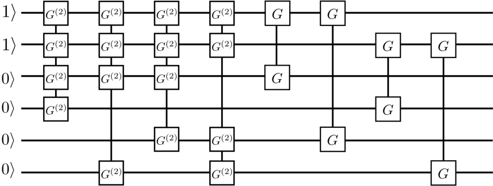
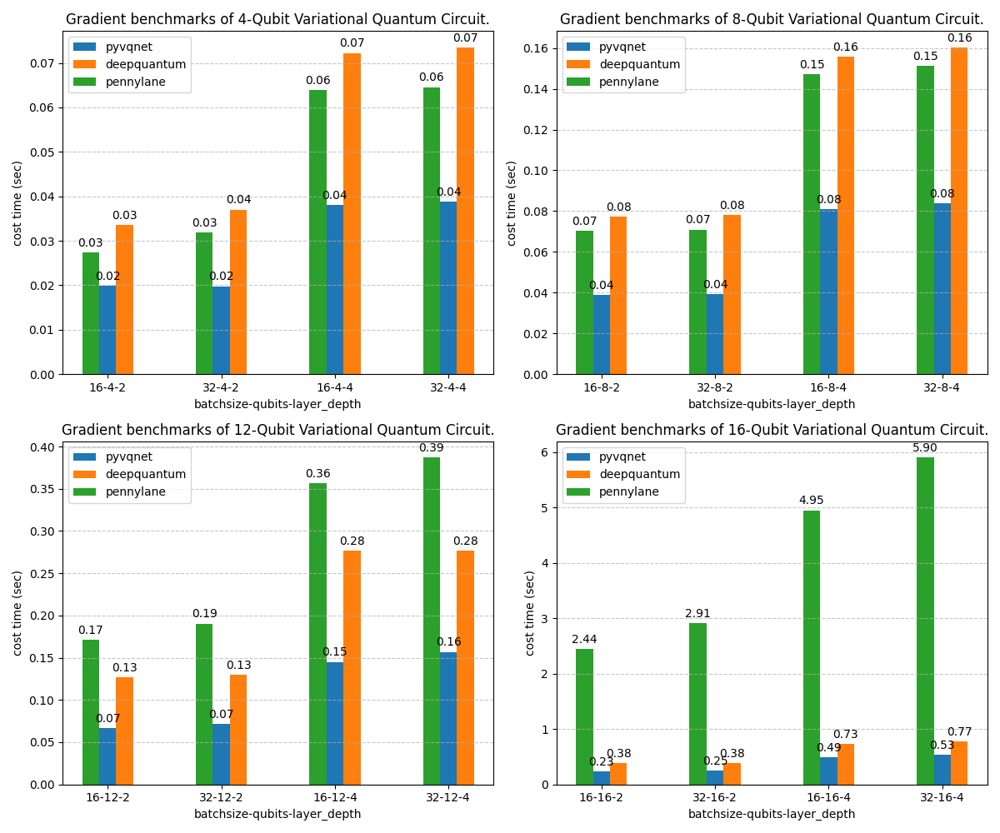

Autograd Variational Quantum Circuits’ API¶
VQNet is based on the construction of automatic differential operators and some commonly used quantum logic gates, quantum circuits and measurement methods. Automatic differentiation can be used to calculate gradients instead of the quantum circuit parameter-shift method. We can use VQC operators to form complex neural networks like other Modules. The virtual machine QMachine needs to be defined in Module, and the states in the machine need to be reset_states based on the input batchsize. Please see the following example for details.
from pyvqnet.nn import Module,Linear,ModuleList
from pyvqnet.qnn.vqc.qcircuit import VQC_HardwareEfficientAnsatz,RZZ,RZ
from pyvqnet.qnn.vqc import Probability,QMachine
from pyvqnet import tensor
class QM(Module):
def __init__(self, name=""):
super().__init__(name)
self.linearx = Linear(4,2)
self.ansatz = VQC_HardwareEfficientAnsatz(4, ["rx", "RY", "rz"],
entangle_gate="cnot",
entangle_rules="linear",
depth=2)
#VQC based RZ on 0 bits
self.encode1 = RZ(wires=0)
#VQC based RZ on 1 bit
self.encode2 = RZ(wires=1)
#VQC-based probability measurement on 0, 2 bits
self.measure = Probability(wires=[0,2])
#Quantum device QMachine, uses 4 bits.
self.device = QMachine(4)
def forward(self, x, *args, **kwargs):
#States must be reset to the same batchsize as the input.
self.device.reset_states(x.shape[0])
y = self.linearx(x)
#Encode the input to the RZ gate. Note that the input must be of shape [batchsize,1]
self.encode1(params = y[:, [0]],q_machine = self.device,)
#Encode the input to the RZ gate. Note that the input must be of shape [batchsize,1]
self.encode2(params = y[:, [1]],q_machine = self.device,)
self.ansatz(q_machine =self.device)
return self.measure(q_machine =self.device)
bz=3
inputx = tensor.arange(1.0,bz*4+1).reshape([bz,4])
inputx.requires_grad= True
#Define like other Modules
qlayer = QM()
#Prequel
y = qlayer(inputx)
y.backward()
print(y)
Simulator¶
QMachine¶
- class pyvqnet.qnn.vqc.QMachine(num_wires, dtype=pyvqnet.kcomplex64)¶
A simulator class for variable quantum computing, including statevectors whose states attribute is a quantum circuit.
- Parameters:
num_wires – number of qubits.
dtype – the data type of the calculated data, the default is pyvqnet.kcomplex64, and the corresponding parameter precision is pyvqnet.kfloat32
- Returns:
Output QMachine.
Example:
from pyvqnet.qnn.vqc import QMachine qm = QMachine(4) print(qm.states) # [[[[[1.+0.j 0.+0.j] # [0.+0.j 0.+0.j]] # [[0.+0.j 0.+0.j] # [0.+0.j 0.+0.j]]] # [[[0.+0.j 0.+0.j] # [0.+0.j 0.+0.j]] # [[0.+0.j 0.+0.j] # [0.+0.j 0.+0.j]]]]]
- reset_states(batchsize)¶
Reinitialize the initial state in the simulator and broadcast it to (batchsize,[2]**num_qubits) dimensions to adapt to batch data training.
- Parameters:
batchsize – batch processing size.
Quantum Gates and Quantum Gates’s Operation¶
i¶
- pyvqnet.qnn.vqc.i(q_machine, wires, params=None, use_dagger=False)¶
Apply quantum logic gates I to statevectors in
q_machine.- Parameters:
q_machine – quantum virtual machine device.
wires – qubit idx.
params – parameter matrix, defaults to None,For a logic gate operation function with p parameters, the dimension of the input parameter needs to be [1,p], or [p].
use_dagger – whether to conjugate transpose, the default is False.
Example:
from pyvqnet.qnn.vqc import i,QMachine qm = QMachine(4) i(q_machine=qm, wires=1) print(qm.states) # [[[[[1.+0.j 0.+0.j] # [0.+0.j 0.+0.j]] # [[0.+0.j 0.+0.j] # [0.+0.j 0.+0.j]]] # [[[0.+0.j 0.+0.j] # [0.+0.j 0.+0.j]] # [[0.+0.j 0.+0.j] # [0.+0.j 0.+0.j]]]]]
I¶
- class pyvqnet.qnn.vqc.I(has_params: bool = False, trainable: bool = False, init_params=None, wires=None, dtype=pyvqnet.kcomplex64, use_dagger=False)¶
Define an I logic gate class.
- Parameters:
has_params – Whether there are parameters, such as RX, RY and other gates need to be set to True, those without parameters need to be set to False, the default is False.
trainable – Whether it contains parameters to be trained. If the layer uses external input data to construct a logic gate matrix, set it to False. If it contains parameters to be trained, it is True. The default is False.
init_params – Initialization parameters, used to encode classic data QTensor, default is None,If it is a parameter-containing logic gate with p parameters, the input data dimension needs to be [1,p] or [p].
wires – Bit index of wire action, default is None.
dtype – The data precision of the internal matrix of the logic gate can be set to pyvqnet.kcomplex64, or pyvqnet.kcomplex128, corresponding to float input or double input parameters respectively.
use_dagger – Whether to use the transposed conjugate version of this gate, the default is False.
- Returns:
A Module that can be used to train the model.
Example:
from pyvqnet.qnn.vqc import I,QMachine device = QMachine(4) layer = I(wires=0) batchsize=1 device.reset_states(1) layer(q_machine = device) print(device.states)
hadamard¶
- pyvqnet.qnn.vqc.hadamard(q_machine, wires, params=None, use_dagger=False)¶
Apply quantum logic gates hadamard to statevectors in
q_machine.- Parameters:
q_machine – quantum virtual machine device.
wires – qubit idx.
params – parameter matrix, defaults to None,For a logic gate operation function with p parameters, the dimension of the input parameter needs to be [1,p], or [p].
use_dagger – whether to conjugate transpose, the default is False.
Example:
from pyvqnet.qnn.vqc import hadamard,QMachine qm = QMachine(4) hadamard(q_machine=qm, wires=1) print(qm.states) # [[[[[0.7071068+0.j 0. +0.j] # [0. +0.j 0. +0.j]] # # [[0.7071068+0.j 0. +0.j] # [0. +0.j 0. +0.j]]] # # # [[[0. +0.j 0. +0.j] # [0. +0.j 0. +0.j]] # # [[0. +0.j 0. +0.j] # [0. +0.j 0. +0.j]]]]]
Hadamard¶
- class pyvqnet.qnn.vqc.Hadamard(has_params: bool = False, trainable: bool = False, init_params=None, wires=None, dtype=pyvqnet.kcomplex64, use_dagger=False)¶
Define a Hadamard logic gate class.
- Parameters:
has_params – Whether there are parameters, such as RX, RY and other gates need to be set to True, those without parameters need to be set to False, the default is False.
trainable – Whether it contains parameters to be trained. If the layer uses external input data to construct a logic gate matrix, set it to False. If it contains parameters to be trained, it is True. The default is False.
init_params – Initialization parameters, used to encode classic data QTensor, default is None,If it is a parameter-containing logic gate with p parameters, the input data dimension needs to be [1,p] or [p].
wires – Bit index of wire action, default is None.
dtype – The data precision of the internal matrix of the logic gate can be set to pyvqnet.kcomplex64, or pyvqnet.kcomplex128, corresponding to float input or double input parameters respectively.
use_dagger – Whether to use the transposed conjugate version of this gate, the default is False.
- Returns:
A Module that can be used to train the model.
Example:
from pyvqnet.qnn.vqc import Hadamard,QMachine device = QMachine(4) layer = Hadamard(wires=0) batchsize=1 device.reset_states(1) layer(q_machine = device) print(device.states)
t¶
- pyvqnet.qnn.vqc.t(q_machine, wires, params=None, use_dagger=False)¶
Apply quantum logic gates t to statevectors in
q_machine.- Parameters:
q_machine – quantum virtual machine device.
wires – qubit idx.
params – parameter matrix, defaults to None,For a logic gate operation function with p parameters, the dimension of the input parameter needs to be [1,p], or [p].
use_dagger – whether to conjugate transpose, the default is False.
Example:
from pyvqnet.qnn.vqc import t,QMachine qm = QMachine(4) t(q_machine=qm, wires=1) print(qm.states) # [[[[[1.+0.j 0.+0.j] # [0.+0.j 0.+0.j]] # # [[0.+0.j 0.+0.j] # [0.+0.j 0.+0.j]]] # # # [[[0.+0.j 0.+0.j] # [0.+0.j 0.+0.j]] # # [[0.+0.j 0.+0.j] # [0.+0.j 0.+0.j]]]]]
T¶
- class pyvqnet.qnn.vqc.T(has_params: bool = False, trainable: bool = False, init_params=None, wires=None, dtype=pyvqnet.kcomplex64, use_dagger=False)¶
Define a T logic gate class.
- Parameters:
has_params – Whether there are parameters, such as RX, RY and other gates need to be set to True, those without parameters need to be set to False, the default is False.
trainable – Whether it contains parameters to be trained. If the layer uses external input data to construct a logic gate matrix, set it to False. If it contains parameters to be trained, it is True. The default is False.
init_params – Initialization parameters, used to encode classic data QTensor, default is None,If it is a parameter-containing logic gate with p parameters, the input data dimension needs to be [1,p] or [p].
wires – Bit index of wire action, default is None.
dtype – The data precision of the internal matrix of the logic gate can be set to pyvqnet.kcomplex64, or pyvqnet.kcomplex128, corresponding to float input or double input parameters respectively.
use_dagger – Whether to use the transposed conjugate version of this gate, the default is False.
- Returns:
A Module that can be used to train the model.
Example:
from pyvqnet.qnn.vqc import T,QMachine device = QMachine(4) layer = T(wires=0) batchsize=1 device.reset_states(1) layer(q_machine = device) print(device.states)
s¶
- pyvqnet.qnn.vqc.s(q_machine, wires, params=None, use_dagger=False)¶
Apply quantum logic gates s to statevectors in
q_machine.- Parameters:
q_machine – quantum virtual machine device.
wires – qubit idx.
params – parameter matrix, defaults to None,For a logic gate operation function with p parameters, the dimension of the input parameter needs to be [1,p], or [p].
use_dagger – whether to conjugate transpose, the default is False.
Example:
from pyvqnet.qnn.vqc import s,QMachine qm = QMachine(4) s(q_machine=qm, wires=1) print(qm.states) # [[[[[1.+0.j 0.+0.j] # [0.+0.j 0.+0.j]] # # [[0.+0.j 0.+0.j] # [0.+0.j 0.+0.j]]] # # # [[[0.+0.j 0.+0.j] # [0.+0.j 0.+0.j]] # # [[0.+0.j 0.+0.j] # [0.+0.j 0.+0.j]]]]]
S¶
- class pyvqnet.qnn.vqc.S(has_params: bool = False, trainable: bool = False, init_params=None, wires=None, dtype=pyvqnet.kcomplex64, use_dagger=False)¶
Define an S logic gate class.
- Parameters:
has_params – Whether there are parameters, such as RX, RY and other gates need to be set to True, those without parameters need to be set to False, the default is False.
trainable – Whether it contains parameters to be trained. If the layer uses external input data to construct a logic gate matrix, set it to False. If it contains parameters to be trained, it is True. The default is False.
init_params – Initialization parameters, used to encode classic data QTensor, default is None,If it is a parameter-containing logic gate with p parameters, the input data dimension needs to be [1,p] or [p].
wires – Bit index of wire action, default is None.
dtype – The data precision of the internal matrix of the logic gate can be set to pyvqnet.kcomplex64, or pyvqnet.kcomplex128, corresponding to float input or double input parameters respectively.
use_dagger – Whether to use the transposed conjugate version of this gate, the default is False.
- Returns:
A Module that can be used to train the model.
Example:
from pyvqnet.qnn.vqc import S,QMachine device = QMachine(4) layer = S(wires=0) batchsize=1 device.reset_states(1) layer(q_machine = device) print(device.states)
paulix¶
- pyvqnet.qnn.vqc.paulix(q_machine, wires, params=None, use_dagger=False)¶
Apply quantum logic gates paulix to statevectors in
q_machine.- Parameters:
q_machine – quantum virtual machine device.
wires – qubit idx.
params – parameter matrix, defaults to None,For a logic gate operation function with p parameters, the dimension of the input parameter needs to be [1,p], or [p].
use_dagger – whether to conjugate transpose, the default is False.
Example:
from pyvqnet.qnn.vqc import paulix,QMachine qm = QMachine(4) paulix(q_machine=qm, wires=1) print(qm.states) # [[[[[0.+0.j 0.+0.j] # [0.+0.j 0.+0.j]] # # [[1.+0.j 0.+0.j] # [0.+0.j 0.+0.j]]] # # # [[[0.+0.j 0.+0.j] # [0.+0.j 0.+0.j]] # # [[0.+0.j 0.+0.j] # [0.+0.j 0.+0.j]]]]]
PauliX¶
- class pyvqnet.qnn.vqc.PauliX(has_params: bool = False, trainable: bool = False, init_params=None, wires=None, dtype=pyvqnet.kcomplex64, use_dagger=False)¶
Define a PauliX logic gate class.
- Parameters:
has_params – Whether there are parameters, such as RX, RY and other gates need to be set to True, those without parameters need to be set to False, the default is False.
trainable – Whether it contains parameters to be trained. If the layer uses external input data to construct a logic gate matrix, set it to False. If it contains parameters to be trained, it is True. The default is False.
init_params – Initialization parameters, used to encode classic data QTensor, default is None,If it is a parameter-containing logic gate with p parameters, the input data dimension needs to be [1,p] or [p].
wires – Bit index of wire action, default is None.
dtype – The data precision of the internal matrix of the logic gate can be set to pyvqnet.kcomplex64, or pyvqnet.kcomplex128, corresponding to float input or double input parameters respectively.
use_dagger – Whether to use the transposed conjugate version of this gate, the default is False.
- Returns:
A Module that can be used to train the model.
Example:
from pyvqnet.qnn.vqc import PauliX,QMachine device = QMachine(4) layer = PauliX(wires=0) batchsize=1 device.reset_states(1) layer(q_machine = device) print(device.states)
pauliy¶
- pyvqnet.qnn.vqc.pauliy(q_machine, wires, params=None, use_dagger=False)¶
Apply quantum logic gates pauliy to statevectors in
q_machine.- Parameters:
q_machine – quantum virtual machine device.
wires – qubit idx.
params – parameter matrix, defaults to None,For a logic gate operation function with p parameters, the dimension of the input parameter needs to be [1,p], or [p].
use_dagger – whether to conjugate transpose, the default is False.
Example:
from pyvqnet.qnn.vqc import pauliy,QMachine qm = QMachine(4) pauliy(q_machine=qm, wires=1) print(qm.states) # [[[[[0.+0.j 0.+0.j] # [0.+0.j 0.+0.j]] # # [[0.+1.j 0.+0.j] # [0.+0.j 0.+0.j]]] # # # [[[0.+0.j 0.+0.j] # [0.+0.j 0.+0.j]] # # [[0.+0.j 0.+0.j] # [0.+0.j 0.+0.j]]]]]
PauliY¶
- class pyvqnet.qnn.vqc.PauliY(has_params: bool = False, trainable: bool = False, init_params=None, wires=None, dtype=pyvqnet.kcomplex64, use_dagger=False)¶
Define a PauliY logic gate class.
- Parameters:
has_params – Whether there are parameters, such as RX, RY and other gates need to be set to True, those without parameters need to be set to False, the default is False.
trainable – Whether it contains parameters to be trained. If the layer uses external input data to construct a logic gate matrix, set it to False. If it contains parameters to be trained, it is True. The default is False.
init_params – Initialization parameters, used to encode classic data QTensor, default is None,If it is a parameter-containing logic gate with p parameters, the input data dimension needs to be [1,p] or [p].
wires – Bit index of wire action, default is None.
dtype – The data precision of the internal matrix of the logic gate can be set to pyvqnet.kcomplex64, or pyvqnet.kcomplex128, corresponding to float input or double input parameters respectively.
use_dagger – Whether to use the transposed conjugate version of this gate, the default is False.
- Returns:
A Module that can be used to train the model.
Example:
from pyvqnet.qnn.vqc import PauliY,QMachine device = QMachine(4) layer = PauliY(wires=0) batchsize=1 device.reset_states(1) layer(q_machine = device) print(device.states)
pauliz¶
- pyvqnet.qnn.vqc.pauliz(q_machine, wires, params=None, use_dagger=False)¶
Apply quantum logic gates pauliz to statevectors in
q_machine.- Parameters:
q_machine – quantum virtual machine device.
wires – qubit idx.
params – parameter matrix, defaults to None,For a logic gate operation function with p parameters, the dimension of the input parameter needs to be [1,p], or [p].
use_dagger – whether to conjugate transpose, the default is False.
Example:
from pyvqnet.qnn.vqc import pauliz,QMachine qm = QMachine(4) pauliz(q_machine=qm, wires=1) print(qm.states) # [[[[[1.+0.j 0.+0.j] # [0.+0.j 0.+0.j]] # # [[0.+0.j 0.+0.j] # [0.+0.j 0.+0.j]]] # # # [[[0.+0.j 0.+0.j] # [0.+0.j 0.+0.j]] # # [[0.+0.j 0.+0.j] # [0.+0.j 0.+0.j]]]]]
PauliZ¶
- class pyvqnet.qnn.vqc.PauliZ(has_params: bool = False, trainable: bool = False, init_params=None, wires=None, dtype=pyvqnet.kcomplex64, use_dagger=False)¶
Define a PauliZ logic gate class.
- Parameters:
has_params – Whether there are parameters, such as RX, RY and other gates need to be set to True, those without parameters need to be set to False, the default is False.
trainable – Whether it contains parameters to be trained. If the layer uses external input data to construct a logic gate matrix, set it to False. If it contains parameters to be trained, it is True. The default is False.
init_params – Initialization parameters, used to encode classic data QTensor, default is None,If it is a parameter-containing logic gate with p parameters, the input data dimension needs to be [1,p] or [p].
wires – Bit index of wire action, default is None.
dtype – The data precision of the internal matrix of the logic gate can be set to pyvqnet.kcomplex64, or pyvqnet.kcomplex128, corresponding to float input or double input parameters respectively.
use_dagger – Whether to use the transposed conjugate version of this gate, the default is False.
- Returns:
A Module that can be used to train the model.
Example:
from pyvqnet.qnn.vqc import PauliZ,QMachine device = QMachine(4) layer = PauliZ(wires=0) batchsize=1 device.reset_states(1) layer(q_machine = device) print(device.states)
x1¶
- pyvqnet.qnn.vqc.x1(q_machine, wires, params=None, use_dagger=False)¶
Apply quantum logic gates x1 to statevectors in
q_machine.- Parameters:
q_machine – quantum virtual machine device.
wires – qubit idx.
params – parameter matrix, defaults to None,For a logic gate operation function with p parameters, the dimension of the input parameter needs to be [1,p], or [p].
use_dagger – whether to conjugate transpose, the default is False.
Example:
from pyvqnet.qnn.vqc import x1,QMachine qm = QMachine(4) x1(q_machine=qm, wires=1) print(qm.states) # [[[[[0.7071068+0.j 0. +0.j ] # [0. +0.j 0. +0.j ]] # # [[0. -0.7071068j 0. +0.j ] # [0. +0.j 0. +0.j ]]] # # # [[[0. +0.j 0. +0.j ] # [0. +0.j 0. +0.j ]] # # [[0. +0.j 0. +0.j ] # [0. +0.j 0. +0.j ]]]]]
X1¶
- class pyvqnet.qnn.vqc.X1(has_params: bool = False, trainable: bool = False, init_params=None, wires=None, dtype=pyvqnet.kcomplex64, use_dagger=False)¶
Define an X1 logic gate class.
- Parameters:
has_params – Whether there are parameters, such as RX, RY and other gates need to be set to True, those without parameters need to be set to False, the default is False.
trainable – Whether it contains parameters to be trained. If the layer uses external input data to construct a logic gate matrix, set it to False. If it contains parameters to be trained, it is True. The default is False.
init_params – Initialization parameters, used to encode classic data QTensor, default is None,If it is a parameter-containing logic gate with p parameters, the input data dimension needs to be [1,p] or [p].
wires – Bit index of wire action, default is None.
dtype – The data precision of the internal matrix of the logic gate can be set to pyvqnet.kcomplex64, or pyvqnet.kcomplex128, corresponding to float input or double input parameters respectively.
use_dagger – Whether to use the transposed conjugate version of this gate, the default is False.
- Returns:
A Module that can be used to train the model.
Example:
from pyvqnet.qnn.vqc import X1,QMachine device = QMachine(4) layer = X1(wires=0) batchsize=1 device.reset_states(1) layer(q_machine = device) print(device.states)
y1¶
- pyvqnet.qnn.vqc.y1(q_machine, wires, params=None, use_dagger=False)¶
Apply quantum logic gates y1 to statevectors in
q_machine.- Parameters:
q_machine – quantum virtual machine device.
wires – qubit idx.
params – parameter matrix, defaults to None,For a logic gate operation function with p parameters, the dimension of the input parameter needs to be [1,p], or [p].
use_dagger – whether to conjugate transpose, the default is False.
Example:
from pyvqnet.qnn.vqc import y1,QMachine qm = QMachine(4) y1(q_machine=qm, wires=1) print(qm.states) # [[[[[0.7071068+0.j 0. +0.j] # [0. +0.j 0. +0.j]] # # [[0.7071068+0.j 0. +0.j] # [0. +0.j 0. +0.j]]] # # # [[[0. +0.j 0. +0.j] # [0. +0.j 0. +0.j]] # # [[0. +0.j 0. +0.j] # [0. +0.j 0. +0.j]]]]]
Y1¶
- class pyvqnet.qnn.vqc.Y1(has_params: bool = False, trainable: bool = False, init_params=None, wires=None, dtype=pyvqnet.kcomplex64, use_dagger=False)¶
Define an Y1 logic gate class.
- Parameters:
has_params – Whether there are parameters, such as RX, RY and other gates need to be set to True, those without parameters need to be set to False, the default is False.
trainable – Whether it contains parameters to be trained. If the layer uses external input data to construct a logic gate matrix, set it to False. If it contains parameters to be trained, it is True. The default is False.
init_params – Initialization parameters, used to encode classic data QTensor, default is None,If it is a parameter-containing logic gate with p parameters, the input data dimension needs to be [1,p] or [p].
wires – Bit index of wire action, default is None.
dtype – The data precision of the internal matrix of the logic gate can be set to pyvqnet.kcomplex64, or pyvqnet.kcomplex128, corresponding to float input or double input parameters respectively.
use_dagger – Whether to use the transposed conjugate version of this gate, the default is False.
- Returns:
A Module that can be used to train the model.
Example:
from pyvqnet.qnn.vqc import Y1,QMachine device = QMachine(4) layer = Y1(wires=0) batchsize=1 device.reset_states(1) layer(q_machine = device) print(device.states)
z1¶
- pyvqnet.qnn.vqc.z1(q_machine, wires, params=None, use_dagger=False)¶
Apply quantum logic gates z1 to statevectors in
q_machine.- Parameters:
q_machine – quantum virtual machine device.
wires – qubit idx.
params – parameter matrix, defaults to None,For a logic gate operation function with p parameters, the dimension of the input parameter needs to be [1,p], or [p].
use_dagger – whether to conjugate transpose, the default is False.
Example:
from pyvqnet.qnn.vqc import z1,QMachine qm = QMachine(4) z1(q_machine=qm, wires=1) print(qm.states) # [[[[[0.7071068-0.7071068j 0. +0.j ] # [0. +0.j 0. +0.j ]] # # [[0. +0.j 0. +0.j ] # [0. +0.j 0. +0.j ]]] # # # [[[0. +0.j 0. +0.j ] # [0. +0.j 0. +0.j ]] # # [[0. +0.j 0. +0.j ] # [0. +0.j 0. +0.j ]]]]]
Z1¶
- class pyvqnet.qnn.vqc.Z1(has_params: bool = False, trainable: bool = False, init_params=None, wires=None, dtype=pyvqnet.kcomplex64, use_dagger=False)¶
Define an Z1 logic gate class.
- Parameters:
has_params – Whether there are parameters, such as RX, RY and other gates need to be set to True, those without parameters need to be set to False, the default is False.
trainable – Whether it contains parameters to be trained. If the layer uses external input data to construct a logic gate matrix, set it to False. If it contains parameters to be trained, it is True. The default is False.
init_params – Initialization parameters, used to encode classic data QTensor, default is None,If it is a parameter-containing logic gate with p parameters, the input data dimension needs to be [1,p] or [p].
wires – Bit index of wire action, default is None.
dtype – The data precision of the internal matrix of the logic gate can be set to pyvqnet.kcomplex64, or pyvqnet.kcomplex128, corresponding to float input or double input parameters respectively.
use_dagger – Whether to use the transposed conjugate version of this gate, the default is False.
- Returns:
A Module that can be used to train the model.
Example:
from pyvqnet.qnn.vqc import Z1,QMachine device = QMachine(4) layer = Z1(wires=0) batchsize=1 device.reset_states(1) layer(q_machine = device) print(device.states)
rx¶
- pyvqnet.qnn.vqc.rx(q_machine, wires, params=None, use_dagger=False)¶
Apply quantum logic gates rx to statevectors in
q_machine.- Parameters:
q_machine – quantum virtual machine device.
wires – qubit idx.
params – parameter matrix, defaults to None,For a logic gate operation function with p parameters, the dimension of the input parameter needs to be [1,p], or [p].
use_dagger – whether to conjugate transpose, the default is False.
Example:
from pyvqnet.qnn.vqc import rx,QMachine from pyvqnet.tensor import QTensor qm = QMachine(4) rx(q_machine=qm, wires=1,params=QTensor([0.5])) print(qm.states) # [[[[[0.9689124+0.j 0. +0.j ] # [0. +0.j 0. +0.j ]] # # [[0. -0.247404j 0. +0.j ] # [0. +0.j 0. +0.j ]]] # # # [[[0. +0.j 0. +0.j ] # [0. +0.j 0. +0.j ]] # # [[0. +0.j 0. +0.j ] # [0. +0.j 0. +0.j ]]]]]
RX¶
- class pyvqnet.qnn.vqc.RX(has_params: bool = False, trainable: bool = False, init_params=None, wires=None, dtype=pyvqnet.kcomplex64, use_dagger=False)¶
Define an RX logic gate class.
- Parameters:
has_params – Whether there are parameters, such as RX, RY and other gates need to be set to True, those without parameters need to be set to False, the default is False.
trainable – Whether it contains parameters to be trained. If the layer uses external input data to construct a logic gate matrix, set it to False. If it contains parameters to be trained, it is True. The default is False.
init_params – Initialization parameters, used to encode classic data QTensor, default is None,If it is a parameter-containing logic gate with p parameters, the input data dimension needs to be [1,p] or [p].
wires – Bit index of wire action, default is None.
dtype – The data precision of the internal matrix of the logic gate can be set to pyvqnet.kcomplex64, or pyvqnet.kcomplex128, corresponding to float input or double input parameters respectively.
use_dagger – Whether to use the transposed conjugate version of this gate, the default is False.
- Returns:
A Module that can be used to train the model.
Example:
from pyvqnet.qnn.vqc import RX,QMachine device = QMachine(4) layer = RX(has_params= True, trainable= True, wires=0) batchsize = 2 device.reset_states(batchsize) layer(q_machine = device) print(device.states)
ry¶
- pyvqnet.qnn.vqc.ry(q_machine, wires, params=None, use_dagger=False)¶
Apply quantum logic gates ry to statevectors in
q_machine.- Parameters:
q_machine – quantum virtual machine device.
wires – qubit idx.
params – parameter matrix, defaults to None,For a logic gate operation function with p parameters, the dimension of the input parameter needs to be [1,p], or [p].
use_dagger – whether to conjugate transpose, the default is False.
Example:
from pyvqnet.qnn.vqc import ry,QMachine from pyvqnet.tensor import QTensor qm = QMachine(4) ry(q_machine=qm, wires=1,params=QTensor([0.5])) print(qm.states) # [[[[[0.9689124+0.j 0. +0.j] # [0. +0.j 0. +0.j]] # # [[0.247404 +0.j 0. +0.j] # [0. +0.j 0. +0.j]]] # # # [[[0. +0.j 0. +0.j] # [0. +0.j 0. +0.j]] # # [[0. +0.j 0. +0.j] # [0. +0.j 0. +0.j]]]]]
RY¶
- class pyvqnet.qnn.vqc.RY(has_params: bool = False, trainable: bool = False, init_params=None, wires=None, dtype=pyvqnet.kcomplex64, use_dagger=False)¶
Define an RY logic gate class.
- Parameters:
has_params – Whether there are parameters, such as RX, RY and other gates need to be set to True, those without parameters need to be set to False, the default is False.
trainable – Whether it contains parameters to be trained. If the layer uses external input data to construct a logic gate matrix, set it to False. If it contains parameters to be trained, it is True. The default is False.
init_params – Initialization parameters, used to encode classic data QTensor, default is None,If it is a parameter-containing logic gate with p parameters, the input data dimension needs to be [1,p] or [p].
wires – Bit index of wire action, default is None.
dtype – The data precision of the internal matrix of the logic gate can be set to pyvqnet.kcomplex64, or pyvqnet.kcomplex128, corresponding to float input or double input parameters respectively.
use_dagger – Whether to use the transposed conjugate version of this gate, the default is False.
- Returns:
A Module that can be used to train the model.
Example:
from pyvqnet.qnn.vqc import RY,QMachine device = QMachine(4) layer = RY(has_params= True, trainable= True, wires=0) batchsize = 2 device.reset_states(batchsize) layer(q_machine = device) print(device.states)
rz¶
- pyvqnet.qnn.vqc.rz(q_machine, wires, params=None, use_dagger=False)¶
Apply quantum logic gates rz to statevectors in
q_machine.- Parameters:
q_machine – quantum virtual machine device.
wires – qubit idx.
params – parameter matrix, defaults to None,For a logic gate operation function with p parameters, the dimension of the input parameter needs to be [1,p], or [p].
use_dagger – whether to conjugate transpose, the default is False.
Example:
from pyvqnet.qnn.vqc import rz,QMachine from pyvqnet.tensor import QTensor qm = QMachine(4) rz(q_machine=qm, wires=1,params=QTensor([0.5])) print(qm.states) # [[[[[0.9689124-0.247404j 0. +0.j ] # [0. +0.j 0. +0.j ]] # # [[0. +0.j 0. +0.j ] # [0. +0.j 0. +0.j ]]] # # # [[[0. +0.j 0. +0.j ] # [0. +0.j 0. +0.j ]] # # [[0. +0.j 0. +0.j ] # [0. +0.j 0. +0.j ]]]]]
RZ¶
- class pyvqnet.qnn.vqc.RZ(has_params: bool = False, trainable: bool = False, init_params=None, wires=None, dtype=pyvqnet.kcomplex64, use_dagger=False)¶
Define an RZ logic gate class.
- Parameters:
has_params – Whether there are parameters, such as RX, RY and other gates need to be set to True, those without parameters need to be set to False, the default is False.
trainable – Whether it contains parameters to be trained. If the layer uses external input data to construct a logic gate matrix, set it to False. If it contains parameters to be trained, it is True. The default is False.
init_params – Initialization parameters, used to encode classic data QTensor, default is None,If it is a parameter-containing logic gate with p parameters, the input data dimension needs to be [1,p] or [p].
wires – Bit index of wire action, default is None.
dtype – The data precision of the internal matrix of the logic gate can be set to pyvqnet.kcomplex64, or pyvqnet.kcomplex128, corresponding to float input or double input parameters respectively.
use_dagger – Whether to use the transposed conjugate version of this gate, the default is False.
- Returns:
A Module that can be used to train the model.
Example:
from pyvqnet.qnn.vqc import RZ,QMachine device = QMachine(4) layer = RZ(has_params= True, trainable= True, wires=0) batchsize = 2 device.reset_states(batchsize) layer(q_machine = device) print(device.states)
crx¶
- pyvqnet.qnn.vqc.crx(q_machine, wires, params=None, use_dagger=False)¶
Apply quantum logic gates crx to statevectors in
q_machine.- Parameters:
q_machine – quantum virtual machine device.
wires – qubit idx.
params – parameter matrix, defaults to None,For a logic gate operation function with p parameters, the dimension of the input parameter needs to be [1,p], or [p].
use_dagger – whether to conjugate transpose, the default is False.
Example:
from pyvqnet.qnn.vqc import QMachine import pyvqnet.qnn.vqc as vqc from pyvqnet.tensor import QTensor qm = QMachine(4) vqc.crx(q_machine=qm,wires=[0,2], params=QTensor([0.5])) print(qm.states) # [[[[[1.+0.j 0.+0.j] # [0.+0.j 0.+0.j]] # # [[0.+0.j 0.+0.j] # [0.+0.j 0.+0.j]]] # # # [[[0.+0.j 0.+0.j] # [0.+0.j 0.+0.j]] # # [[0.+0.j 0.+0.j] # [0.+0.j 0.+0.j]]]]]
CRX¶
- class pyvqnet.qnn.vqc.CRX(has_params: bool = False, trainable: bool = False, init_params=None, wires=None, dtype=pyvqnet.kcomplex64, use_dagger=False)¶
Define a CRX logic gate class.
- Parameters:
has_params – Whether there are parameters, such as RX, RY and other gates need to be set to True, those without parameters need to be set to False, the default is False.
trainable – Whether it contains parameters to be trained. If the layer uses external input data to construct a logic gate matrix, set it to False. If it contains parameters to be trained, it is True. The default is False.
init_params – Initialization parameters, used to encode classic data QTensor, default is None,If it is a parameter-containing logic gate with p parameters, the input data dimension needs to be [1,p] or [p].
wires – Bit index of wire action, default is None.
dtype – The data precision of the internal matrix of the logic gate can be set to pyvqnet.kcomplex64, or pyvqnet.kcomplex128, corresponding to float input or double input parameters respectively.
use_dagger – Whether to use the transposed conjugate version of this gate, the default is False.
- Returns:
A Module that can be used to train the model.
Example:
from pyvqnet.qnn.vqc import CRX,QMachine device = QMachine(4) layer = CRX(has_params= True, trainable= True, wires=[0,2]) batchsize = 2 device.reset_states(batchsize) layer(q_machine = device) print(device.states)
cry¶
- pyvqnet.qnn.vqc.cry(q_machine, wires, params=None, use_dagger=False)¶
Apply quantum logic gates cry to statevectors in
q_machine.- Parameters:
q_machine – quantum virtual machine device.
wires – qubit idx.
params – parameter matrix, defaults to None,For a logic gate operation function with p parameters, the dimension of the input parameter needs to be [1,p], or [p].
use_dagger – whether to conjugate transpose, the default is False.
Example:
from pyvqnet.qnn.vqc import QMachine import pyvqnet.qnn.vqc as vqc from pyvqnet.tensor import QTensor qm = QMachine(4) vqc.cry(q_machine=qm,wires=[0,2], params=QTensor([0.5])) print(qm.states) # [[[[[1.+0.j 0.+0.j] # [0.+0.j 0.+0.j]] # # [[0.+0.j 0.+0.j] # [0.+0.j 0.+0.j]]] # # # [[[0.+0.j 0.+0.j] # [0.+0.j 0.+0.j]] # # [[0.+0.j 0.+0.j] # [0.+0.j 0.+0.j]]]]]
CRY¶
- class pyvqnet.qnn.vqc.CRY(has_params: bool = False, trainable: bool = False, init_params=None, wires=None, dtype=pyvqnet.kcomplex64, use_dagger=False)¶
Define a CRY logic gate class.
- Parameters:
has_params – Whether there are parameters, such as RX, RY and other gates need to be set to True, those without parameters need to be set to False, the default is False.
trainable – Whether it contains parameters to be trained. If the layer uses external input data to construct a logic gate matrix, set it to False. If it contains parameters to be trained, it is True. The default is False.
init_params – Initialization parameters, used to encode classic data QTensor, default is None,If it is a parameter-containing logic gate with p parameters, the input data dimension needs to be [1,p] or [p].
wires – Bit index of wire action, default is None.
dtype – The data precision of the internal matrix of the logic gate can be set to pyvqnet.kcomplex64, or pyvqnet.kcomplex128, corresponding to float input or double input parameters respectively.
use_dagger – Whether to use the transposed conjugate version of this gate, the default is False.
- Returns:
A Module that can be used to train the model.
Example:
from pyvqnet.qnn.vqc import CRY,QMachine device = QMachine(4) layer = CRY(has_params= True, trainable= True, wires=[0,2]) batchsize = 2 device.reset_states(batchsize) layer(q_machine = device) print(device.states)
crz¶
- pyvqnet.qnn.vqc.crz(q_machine, wires, params=None, use_dagger=False)¶
Apply quantum logic gates crz to statevectors in
q_machine.- Parameters:
q_machine – quantum virtual machine device.
wires – qubit idx.
params – parameter matrix, defaults to None,For a logic gate operation function with p parameters, the dimension of the input parameter needs to be [1,p], or [p].
use_dagger – whether to conjugate transpose, the default is False.
Example:
from pyvqnet.qnn.vqc import QMachine import pyvqnet.qnn.vqc as vqc from pyvqnet.tensor import QTensor qm = QMachine(4) vqc.crz(q_machine=qm,wires=[0,2], params=QTensor([0.5])) print(qm.states) # [[[[[1.+0.j 0.+0.j] # [0.+0.j 0.+0.j]] # # [[0.+0.j 0.+0.j] # [0.+0.j 0.+0.j]]] # # # [[[0.+0.j 0.+0.j] # [0.+0.j 0.+0.j]] # # [[0.+0.j 0.+0.j] # [0.+0.j 0.+0.j]]]]]
CRZ¶
- class pyvqnet.qnn.vqc.CRZ(has_params: bool = False, trainable: bool = False, init_params=None, wires=None, dtype=pyvqnet.kcomplex64, use_dagger=False)¶
Define a CRZ logic gate class.
- Parameters:
has_params – Whether there are parameters, such as RX, RY and other gates need to be set to True, those without parameters need to be set to False, the default is False.
trainable – Whether it contains parameters to be trained. If the layer uses external input data to construct a logic gate matrix, set it to False. If it contains parameters to be trained, it is True. The default is False.
init_params – Initialization parameters, used to encode classic data QTensor, default is None,If it is a parameter-containing logic gate with p parameters, the input data dimension needs to be [1,p] or [p].
wires – Bit index of wire action, default is None.
dtype – The data precision of the internal matrix of the logic gate can be set to pyvqnet.kcomplex64, or pyvqnet.kcomplex128, corresponding to float input or double input parameters respectively.
use_dagger – Whether to use the transposed conjugate version of this gate, the default is False.
- Returns:
A Module that can be used to train the model.
Example:
from pyvqnet.qnn.vqc import CRZ,QMachine device = QMachine(4) layer = CRZ(has_params= True, trainable= True, wires=[0,2]) batchsize = 2 device.reset_states(batchsize) layer(q_machine = device) print(device.states)
u1¶
- pyvqnet.qnn.vqc.u1(q_machine, wires, params=None, use_dagger=False)¶
Apply quantum logic gates u1 to statevectors in
q_machine.- Parameters:
q_machine – quantum virtual machine device.
wires – qubit idx.
params – parameter matrix, defaults to None,For a logic gate operation function with p parameters, the dimension of the input parameter needs to be [1,p], or [p].
use_dagger – whether to conjugate transpose, the default is False.
Example:
from pyvqnet.qnn.vqc import u1,QMachine from pyvqnet.tensor import QTensor qm = QMachine(4) u1(q_machine=qm, wires=1,params=QTensor([24.0])) print(qm.states) # [[[[1.+0.j 0.+0.j] # [0.+0.j 0.+0.j]] # # [[0.+0.j 0.+0.j] # [0.+0.j 0.+0.j]]] # # # [[[0.+0.j 0.+0.j] # [0.+0.j 0.+0.j]] # # [[0.+0.j 0.+0.j] # [0.+0.j 0.+0.j]]]]]
U1¶
- class pyvqnet.qnn.vqc.U1(has_params: bool = False, trainable: bool = False, init_params=None, wires=None, dtype=pyvqnet.kcomplex64, use_dagger=False)¶
Define a U1 logic gate class.
- Parameters:
has_params – Whether there are parameters, such as RX, RY and other gates need to be set to True, those without parameters need to be set to False, the default is False.
trainable – Whether it contains parameters to be trained. If the layer uses external input data to construct a logic gate matrix, set it to False. If it contains parameters to be trained, it is True. The default is False.
init_params – Initialization parameters, used to encode classic data QTensor, default is None,If it is a parameter-containing logic gate with p parameters, the input data dimension needs to be [1,p] or [p].
wires – Bit index of wire action, default is None.
dtype – The data precision of the internal matrix of the logic gate can be set to pyvqnet.kcomplex64, or pyvqnet.kcomplex128, corresponding to float input or double input parameters respectively.
use_dagger – Whether to use the transposed conjugate version of this gate, the default is False.
- Returns:
A Module that can be used to train the model.
Example:
from pyvqnet.qnn.vqc import U1,QMachine device = QMachine(4) layer = U1(has_params= True, trainable= True, wires=0) batchsize = 2 device.reset_states(batchsize) layer(q_machine = device) print(device.states)
u2¶
- pyvqnet.qnn.vqc.u2(q_machine, wires, params=None, use_dagger=False)¶
Apply quantum logic gates u2 to statevectors in
q_machine.- Parameters:
q_machine – quantum virtual machine device.
wires – qubit idx.
params – parameter matrix, defaults to None,For a logic gate operation function with p parameters, the dimension of the input parameter needs to be [1,p], or [p].
use_dagger – whether to conjugate transpose, the default is False.
Example:
from pyvqnet.qnn.vqc import u2,QMachine from pyvqnet.tensor import QTensor qm = QMachine(4) u2(q_machine=qm, wires=1,params=QTensor([[24.0,-3]])) print(qm.states) # [[[[[0.7071068+0.j 0. +0.j ] # [0. +0.j 0. +0.j ]] # # [[0.2999398-0.6403406j 0. +0.j ] # [0. +0.j 0. +0.j ]]] # # # [[[0. +0.j 0. +0.j ] # [0. +0.j 0. +0.j ]] # # [[0. +0.j 0. +0.j ] # [0. +0.j 0. +0.j ]]]]]
U2¶
- class pyvqnet.qnn.vqc.U2(has_params: bool = False, trainable: bool = False, init_params=None, wires=None, dtype=pyvqnet.kcomplex64, use_dagger=False)¶
Define a U2 logic gate class.
- Parameters:
has_params – Whether there are parameters, such as RX, RY and other gates need to be set to True, those without parameters need to be set to False, the default is False.
trainable – Whether it contains parameters to be trained. If the layer uses external input data to construct a logic gate matrix, set it to False. If it contains parameters to be trained, it is True. The default is False.
init_params – Initialization parameters, used to encode classic data QTensor, default is None,If it is a parameter-containing logic gate with p parameters, the input data dimension needs to be [1,p] or [p].
wires – Bit index of wire action, default is None.
dtype – The data precision of the internal matrix of the logic gate can be set to pyvqnet.kcomplex64, or pyvqnet.kcomplex128, corresponding to float input or double input parameters respectively.
use_dagger – Whether to use the transposed conjugate version of this gate, the default is False.
- Returns:
A Module that can be used to train the model.
Example:
from pyvqnet.qnn.vqc import U2,QMachine device = QMachine(4) layer = U2(has_params= True, trainable= True, wires=0) batchsize = 2 device.reset_states(batchsize) layer(q_machine = device) print(device.states)
u3¶
- pyvqnet.qnn.vqc.u3(q_machine, wires, params=None, use_dagger=False)¶
Apply quantum logic gates u3 to statevectors in
q_machine.- Parameters:
q_machine – quantum virtual machine device.
wires – qubit idx.
params – parameter matrix, defaults to None,For a logic gate operation function with p parameters, the dimension of the input parameter needs to be [1,p], or [p].
use_dagger – whether to conjugate transpose, the default is False.
Example:
from pyvqnet.qnn.vqc import u3,QMachine from pyvqnet.tensor import QTensor qm = QMachine(4) u3(q_machine=qm, wires=1,params=QTensor([[24.0,-3,1]])) print(qm.states) # [[[[[0.843854 +0.j 0. +0.j ] # [0. +0.j 0. +0.j ]] # # [[0.5312032+0.0757212j 0. +0.j ] # [0. +0.j 0. +0.j ]]] # # # [[[0. +0.j 0. +0.j ] # [0. +0.j 0. +0.j ]] # # [[0. +0.j 0. +0.j ] # [0. +0.j 0. +0.j ]]]]]
U3¶
- class pyvqnet.qnn.vqc.U3(has_params: bool = False, trainable: bool = False, init_params=None, wires=None, dtype=pyvqnet.kcomplex64, use_dagger=False)¶
Define a U3 logic gate class.
- Parameters:
has_params – Whether there are parameters, such as RX, RY and other gates need to be set to True, those without parameters need to be set to False, the default is False.
trainable – Whether it contains parameters to be trained. If the layer uses external input data to construct a logic gate matrix, set it to False. If it contains parameters to be trained, it is True. The default is False.
init_params – Initialization parameters, used to encode classic data QTensor, default is None,If it is a parameter-containing logic gate with p parameters, the input data dimension needs to be [1,p] or [p].
wires – Bit index of wire action, default is None.
dtype – The data precision of the internal matrix of the logic gate can be set to pyvqnet.kcomplex64, or pyvqnet.kcomplex128, corresponding to float input or double input parameters respectively.
use_dagger – Whether to use the transposed conjugate version of this gate, the default is False.
- Returns:
A Module that can be used to train the model.
Example:
from pyvqnet.qnn.vqc import U3,QMachine device = QMachine(4) layer = U3(has_params= True, trainable= True, wires=0) batchsize = 2 device.reset_states(batchsize) layer(q_machine = device) print(device.states)
cy¶
- pyvqnet.qnn.vqc.cy(q_machine, wires, params=None, use_dagger=False)¶
Apply quantum logic gates cy to statevectors in
q_machine.- Parameters:
q_machine – Quantum virtual machine device.
wires – Qubit index.
params – Parameter matrix, default is None.
use_dagger – Whether to use conjugate transpose, the default is False.
Example:
from pyvqnet.qnn.vqc import cy,QMachine qm = QMachine(4) cy(q_machine=qm,wires=(1,0)) print(qm.states) # [[[[[1.+0.j,0.+0.j], # [0.+0.j,0.+0.j]], # [[0.+0.j,0.+0.j], # [0.+0.j,0.+0.j]]], # [[[0.+0.j,0.+0.j], # [0.+0.j,0.+0.j]], # [[0.+0.j,0.+0.j], # [0.+0.j,0.+0.j]]]]]
CY¶
- class pyvqnet.qnn.vqc.CY(has_params: bool = False, trainable: bool = False, init_params=None, wires=None, dtype=pyvqnet.kcomplex64, use_dagger=False)¶
Define a CY logic category.
- Parameters:
has_params – Whether there are parameters, such as RX, RY and other gates need to be set to True, those without parameters need to be set to False, the default is False.
trainable – Whether it comes with parameters to be trained. If this layer uses external input data to construct a logic gate matrix, set it to False. If the parameters to be trained need to be initialized from this layer, it will be True. The default is False.
init_params – Initialization parameters, used to encode classic data QTensor, default is None,If it is a parameter-containing logic gate with p parameters, the input data dimension needs to be [1,p] or [p].
wires – Bit index of wire action, default is None.
dtype – The data precision of the internal matrix of the logic gate can be set to pyvqnet.kcomplex64, or pyvqnet.kcomplex128, corresponding to float input or double input parameters respectively.
use_dagger – Whether to use the transposed conjugate version of this gate, the default is False.
- Returns:
A Module that can be used to train the model.
Example:
from pyvqnet.qnn.vqc import CY,QMachine device = QMachine(4) layer = CY(wires=[0,1]) batchsize = 2 device.reset_states(batchsize) layer(q_machine = device) print(device.states)
cnot¶
- pyvqnet.qnn.vqc.cnot(q_machine, wires, params=None, use_dagger=False)¶
Apply quantum logic gates cnot to statevectors in
q_machine.- Parameters:
q_machine – quantum virtual machine device.
wires – qubit idx.
params – parameter matrix, defaults to None,For a logic gate operation function with p parameters, the dimension of the input parameter needs to be [1,p], or [p].
use_dagger – whether to conjugate transpose, the default is False.
Example:
from pyvqnet.qnn.vqc import cnot,QMachine qm = QMachine(4) cnot(q_machine=qm,wires=[1,0]) print(qm.states) # [[[[[1.+0.j 0.+0.j] # [0.+0.j 0.+0.j]] # # [[0.+0.j 0.+0.j] # [0.+0.j 0.+0.j]]] # # # [[[0.+0.j 0.+0.j] # [0.+0.j 0.+0.j]] # # [[0.+0.j 0.+0.j] # [0.+0.j 0.+0.j]]]]]
CNOT¶
- class pyvqnet.qnn.vqc.CNOT(has_params: bool = False, trainable: bool = False, init_params=None, wires=None, dtype=pyvqnet.kcomplex64, use_dagger=False)¶
Define a CNOT logic gate class.
- Parameters:
has_params – Whether there are parameters, such as RX, RY and other gates need to be set to True, those without parameters need to be set to False, the default is False.
trainable – Whether it contains parameters to be trained. If the layer uses external input data to construct a logic gate matrix, set it to False. If it contains parameters to be trained, it is True. The default is False.
init_params – Initialization parameters, used to encode classic data QTensor, default is None,If it is a parameter-containing logic gate with p parameters, the input data dimension needs to be [1,p] or [p].
wires – Bit index of wire action, default is None.
dtype – The data precision of the internal matrix of the logic gate can be set to pyvqnet.kcomplex64 or pyvqnet.kcomplex128, corresponding to float input or double input parameter respectively.
use_dagger – Whether to use the transposed conjugate version of this gate, the default is False.
- Returns:
A Module that can be used to train the model.
Example:
from pyvqnet.qnn.vqc import CNOT,QMachine device = QMachine(4) layer = CNOT(wires=[0,1]) batchsize = 2 device.reset_states(batchsize) layer(q_machine = device) print(device.states)
cr¶
- pyvqnet.qnn.vqc.cr(q_machine, wires, params=None, use_dagger=False)¶
Apply quantum logic gates cr to statevectors in
q_machine.- Parameters:
q_machine – quantum virtual machine device.
wires – qubit idx.
params – parameter matrix, defaults to None,For a logic gate operation function with p parameters, the dimension of the input parameter needs to be [1,p], or [p].
use_dagger – whether to conjugate transpose, the default is False.
Example:
from pyvqnet.qnn.vqc import cr,QMachine from pyvqnet.tensor import QTensor qm = QMachine(4) cr(q_machine=qm,wires=[1,0],params=QTensor([0.5])) print(qm.states) # [[[[[1.+0.j 0.+0.j] # [0.+0.j 0.+0.j]] # # [[0.+0.j 0.+0.j] # [0.+0.j 0.+0.j]]] # # # [[[0.+0.j 0.+0.j] # [0.+0.j 0.+0.j]] # # [[0.+0.j 0.+0.j] # [0.+0.j 0.+0.j]]]]]
CR¶
- class pyvqnet.qnn.vqc.CR(has_params: bool = False, trainable: bool = False, init_params=None, wires=None, dtype=pyvqnet.kcomplex64, use_dagger=False)¶
Define a CR logic gate.
- Parameters:
has_params – Whether there are parameters, such as RX, RY and other gates need to be set to True, those without parameters need to be set to False, the default is False.
trainable – Whether it contains parameters to be trained. If the layer uses external input data to construct a logic gate matrix, set it to False. If it contains parameters to be trained, it is True. The default is False.
init_params – Initialization parameters, used to encode classic data QTensor, default is None,If it is a parameter-containing logic gate with p parameters, the input data dimension needs to be [1,p] or [p].
wires – Bit index of wire action, default is None.
dtype – The data precision of the internal matrix of the logic gate can be set to pyvqnet.kcomplex64 or pyvqnet.kcomplex128, corresponding to float input or double input parameter respectively.
use_dagger – Whether to use the transposed conjugate version of this gate, the default is False.
- Returns:
A Module that can be used to train the model.
Example:
from pyvqnet.qnn.vqc import CR,QMachine device = QMachine(4) layer = CR(has_params= True, trainable= True, wires=[0,2]) batchsize = 2 device.reset_states(batchsize) layer(q_machine = device) print(device.states)
iswap¶
- pyvqnet.qnn.vqc.iswap(q_machine, wires, params=None, use_dagger=False)¶
Apply quantum logic gates iswap to statevectors in
q_machine.- Parameters:
q_machine – quantum virtual machine device.
wires – qubit idx.
params – parameter matrix, defaults to None,For a logic gate operation function with p parameters, the dimension of the input parameter needs to be [1,p], or [p].
use_dagger – whether to conjugate transpose, the default is False.
Example:
from pyvqnet.qnn.vqc import iswap,QMachine from pyvqnet.tensor import QTensor qm = QMachine(4) iswap(q_machine=qm,wires=[1,0] ) print(qm.states) # [[[[[1.+0.j 0.+0.j] # [0.+0.j 0.+0.j]] # # [[0.+0.j 0.+0.j] # [0.+0.j 0.+0.j]]] # # # [[[0.+0.j 0.+0.j] # [0.+0.j 0.+0.j]] # # [[0.+0.j 0.+0.j] # [0.+0.j 0.+0.j]]]]]
swap¶
- pyvqnet.qnn.vqc.swap(q_machine, wires, params=None, use_dagger=False)¶
Apply quantum logic gates swap to statevectors in
q_machine.- Parameters:
q_machine – quantum virtual machine device.
wires – qubit idx.
params – parameter matrix, defaults to None,For a logic gate operation function with p parameters, the dimension of the input parameter needs to be [1,p], or [p].
use_dagger – whether to conjugate transpose, the default is False.
Example:
from pyvqnet.qnn.vqc import swap,QMachine qm = QMachine(4) swap(q_machine=qm,wires=[1,0]) print(qm.states) # [[[[[1.+0.j 0.+0.j] # [0.+0.j 0.+0.j]] # # [[0.+0.j 0.+0.j] # [0.+0.j 0.+0.j]]] # # # [[[0.+0.j 0.+0.j] # [0.+0.j 0.+0.j]] # # [[0.+0.j 0.+0.j] # [0.+0.j 0.+0.j]]]]]
SWAP¶
- class pyvqnet.qnn.vqc.SWAP(has_params: bool = False, trainable: bool = False, init_params=None, wires=None, dtype=pyvqnet.kcomplex64, use_dagger=False)¶
Define a SWAP logic gate class.
- Parameters:
has_params – Whether there are parameters, such as RX, RY and other gates need to be set to True, those without parameters need to be set to False, the default is False.
trainable – Whether it contains parameters to be trained. If the layer uses external input data to construct a logic gate matrix, set it to False. If it contains parameters to be trained, it is True. The default is False.
init_params – Initialization parameters, used to encode classic data QTensor, default is None,If it is a parameter-containing logic gate with p parameters, the input data dimension needs to be [1,p] or [p].
wires – Bit index of wire action, default is None.
dtype – The data precision of the internal matrix of the logic gate can be set to pyvqnet.kcomplex64, or pyvqnet.kcomplex128, corresponding to float input or double input parameters respectively.
use_dagger – Whether to use the transposed conjugate version of this gate, the default is False.
- Returns:
A Module that can be used to train the model.
Example:
from pyvqnet.qnn.vqc import SWAP,QMachine device = QMachine(4) layer = SWAP(wires=[0,1]) batchsize = 2 device.reset_states(batchsize) layer(q_machine = device) print(device.states)
cswap¶
- pyvqnet.qnn.vqc.cswap(q_machine, wires, params=None, use_dagger=False)¶
Apply quantum logic gates cswap to statevectors in
q_machine.- Parameters:
q_machine – Quantum virtual machine device.
wires – Qubit index.
params – Parameter matrix, default is None.
use_dagger – Whether to use conjugate transpose, the default is False.
- Returns:
Output QTensor.
Example:
from pyvqnet.qnn.vqc import cswap,QMachine qm = QMachine(4) cswap(q_machine=qm,wires=[1,0,3],) print(qm.states) # [[[[[1.+0.j,0.+0.j], # [0.+0.j,0.+0.j]], # [[0.+0.j,0.+0.j], # [0.+0.j,0.+0.j]]], # [[[0.+0.j,0.+0.j], # [0.+0.j,0.+0.j]], # [[0.+0.j,0.+0.j], # [0.+0.j,0.+0.j]]]]]
CSWAP¶
- class pyvqnet.qnn.vqc.CSWAP(has_params: bool = False, trainable: bool = False, init_params=None, wires=None, dtype=pyvqnet.kcomplex64, use_dagger=False)¶
Define a SWAP logic gate class.
\[\begin{split}CSWAP = \begin{bmatrix} 1 & 0 & 0 & 0 & 0 & 0 & 0 & 0 \\ 0 & 1 & 0 & 0 & 0 & 0 & 0 & 0 \\ 0 & 0 & 1 & 0 & 0 & 0 & 0 & 0 \\ 0 & 0 & 0 & 1 & 0 & 0 & 0 & 0 \\ 0 & 0 & 0 & 0 & 1 & 0 & 0 & 0 \\ 0 & 0 & 0 & 0 & 0 & 0 & 1 & 0 \\ 0 & 0 & 0 & 0 & 0 & 1 & 0 & 0 \\ 0 & 0 & 0 & 0 & 0 & 0 & 0 & 1 \end{bmatrix}.\end{split}\]- Parameters:
has_params – Whether there are parameters, such as RX, RY and other gates need to be set to True, those without parameters need to be set to False, the default is False.
trainable – Whether it comes with parameters to be trained. If this layer uses external input data to construct a logic gate matrix, set it to False. If the parameters to be trained need to be initialized from this layer, it will be True. The default is False.
init_params – Initialization parameters, used to encode classic data QTensor, default is None,If it is a parameter-containing logic gate with p parameters, the input data dimension needs to be [1,p] or [p].
wires – Bit index of wire action, default is None.
dtype – The data precision of the internal matrix of the logic gate can be set to pyvqnet.kcomplex64, or pyvqnet.kcomplex128, corresponding to float input or double input parameters respectively.
use_dagger – Whether to use the transposed conjugate version of this gate, the default is False.
- Returns:
A Module that can be used to train the model.
Example:
from pyvqnet.qnn.vqc import CSWAP,QMachine device = QMachine(4) layer = CSWAP(wires=[0,1,2]) batchsize = 2 device.reset_states(batchsize) layer(q_machine = device) print(device.states) # [[[[[1.+0.j,0.+0.j], # [0.+0.j,0.+0.j]], # [[0.+0.j,0.+0.j], # [0.+0.j,0.+0.j]]], # [[[0.+0.j,0.+0.j], # [0.+0.j,0.+0.j]], # [[0.+0.j,0.+0.j], # [0.+0.j,0.+0.j]]]], # [[[[1.+0.j,0.+0.j], # [0.+0.j,0.+0.j]], # [[0.+0.j,0.+0.j], # [0.+0.j,0.+0.j]]], # [[[0.+0.j,0.+0.j], # [0.+0.j,0.+0.j]], # [[0.+0.j,0.+0.j], # [0.+0.j,0.+0.j]]]]]
cz¶
- pyvqnet.qnn.vqc.cz(q_machine, wires, params=None, use_dagger=False)¶
Apply quantum logic gates cz to statevectors in
q_machine.- Parameters:
q_machine – quantum virtual machine device.
wires – qubit idx.
params – parameter matrix, defaults to None,For a logic gate operation function with p parameters, the dimension of the input parameter needs to be [1,p], or [p].
use_dagger – whether to conjugate transpose, the default is False.
Example:
from pyvqnet.qnn.vqc import cz,QMachine qm = QMachine(4) cz(q_machine=qm,wires=[1,0]) print(qm.states) # [[[[[1.+0.j 0.+0.j] # [0.+0.j 0.+0.j]] # # [[0.+0.j 0.+0.j] # [0.+0.j 0.+0.j]]] # # # [[[0.+0.j 0.+0.j] # [0.+0.j 0.+0.j]] # # [[0.+0.j 0.+0.j] # [0.+0.j 0.+0.j]]]]]
CZ¶
- class pyvqnet.qnn.vqc.CZ(has_params: bool = False, trainable: bool = False, init_params=None, wires=None, dtype=pyvqnet.kcomplex64, use_dagger=False)¶
Define a CZ logic gate class.
- Parameters:
has_params – Whether there are parameters, such as RX, RY and other gates need to be set to True, those without parameters need to be set to False, the default is False.
trainable – Whether it contains parameters to be trained. If the layer uses external input data to construct a logic gate matrix, set it to False. If it contains parameters to be trained, it is True. The default is False.
init_params – Initialization parameters, used to encode classic data QTensor, default is None,If it is a parameter-containing logic gate with p parameters, the input data dimension needs to be [1,p] or [p].
wires – Bit index of wire action, default is None.
dtype – The data precision of the internal matrix of the logic gate can be set to pyvqnet.kcomplex64 or pyvqnet.kcomplex128, corresponding to float input or double input parameter respectively.
use_dagger – Whether to use the transposed conjugate version of this gate, the default is False.
- Returns:
A Module that can be used to train the model.
Example:
from pyvqnet.qnn.vqc import CZ,QMachine device = QMachine(4) layer = CZ(wires=[0,1]) batchsize = 2 device.reset_states(batchsize) layer(q_machine = device) print(device.states)
rxx¶
- pyvqnet.qnn.vqc.rxx(q_machine, wires, params=None, use_dagger=False)¶
Apply quantum logic gates rxx to statevectors in
q_machine.- Parameters:
q_machine – quantum virtual machine device.
wires – qubit idx.
params – parameter matrix, defaults to None,For a logic gate operation function with p parameters, the dimension of the input parameter needs to be [1,p], or [p].
use_dagger – whether to conjugate transpose, the default is False.
Example:
from pyvqnet.qnn.vqc import rxx,QMachine from pyvqnet.tensor import QTensor qm = QMachine(4) rxx(q_machine=qm,wires=[1,0],params=QTensor([0.2])) print(qm.states) # [[[[[0.9950042+0.j 0. +0.j ] # [0. +0.j 0. +0.j ]] # # [[0. +0.j 0. +0.j ] # [0. +0.j 0. +0.j ]]] # # # [[[0. +0.j 0. +0.j ] # [0. +0.j 0. +0.j ]] # # [[0. -0.0998334j 0. +0.j ] # [0. +0.j 0. +0.j ]]]]]
RXX¶
- class pyvqnet.qnn.vqc.RXX(has_params: bool = False, trainable: bool = False, init_params=None, wires=None, dtype=pyvqnet.kcomplex64, use_dagger=False)¶
Define an RXX logic gate class.
- Parameters:
has_params – Whether there are parameters, such as RX, RY and other gates need to be set to True, those without parameters need to be set to False, the default is False.
trainable – Whether it contains parameters to be trained. If the layer uses external input data to construct a logic gate matrix, set it to False. If it contains parameters to be trained, it is True. The default is False.
init_params – Initialization parameters, used to encode classic data QTensor, default is None,If it is a parameter-containing logic gate with p parameters, the input data dimension needs to be [1,p] or [p].
wires – Bit index of wire action, default is None.
dtype – The data precision of the internal matrix of the logic gate can be set to pyvqnet.kcomplex64 or pyvqnet.kcomplex128, corresponding to float input or double input parameter respectively.
use_dagger – Whether to use the transposed conjugate version of this gate, the default is False.
- Returns:
A Module that can be used to train the model.
Example:
from pyvqnet.qnn.vqc import RXX,QMachine device = QMachine(4) layer = RXX(has_params= True, trainable= True, wires=[0,2]) batchsize = 2 device.reset_states(batchsize) layer(q_machine = device) print(device.states)
ryy¶
- pyvqnet.qnn.vqc.ryy(q_machine, wires, params=None, use_dagger=False)¶
Apply quantum logic gates ryy to statevectors in
q_machine.- Parameters:
q_machine – quantum virtual machine device.
wires – qubit idx.
params – parameter matrix, defaults to None,For a logic gate operation function with p parameters, the dimension of the input parameter needs to be [1,p], or [p].
use_dagger – whether to conjugate transpose, the default is False.
Example:
from pyvqnet.qnn.vqc import ryy,QMachine from pyvqnet.tensor import QTensor qm = QMachine(4) ryy(q_machine=qm,wires=[1,0],params=QTensor([0.2])) print(qm.states) # [[[[[0.9950042+0.j 0. +0.j ] # [0. +0.j 0. +0.j ]] # # [[0. +0.j 0. +0.j ] # [0. +0.j 0. +0.j ]]] # # # [[[0. +0.j 0. +0.j ] # [0. +0.j 0. +0.j ]] # # [[0. +0.0998334j 0. +0.j ] # [0. +0.j 0. +0.j ]]]]]
RYY¶
- class pyvqnet.qnn.vqc.RYY(has_params: bool = False, trainable: bool = False, init_params=None, wires=None, dtype=pyvqnet.kcomplex64, use_dagger=False)¶
Define an RYY logic gate class.
- Parameters:
has_params – Whether there are parameters, such as RX, RY and other gates need to be set to True, those without parameters need to be set to False, the default is False.
trainable – Whether it contains parameters to be trained. If the layer uses external input data to construct a logic gate matrix, set it to False. If it contains parameters to be trained, it is True. The default is False.
init_params – Initialization parameters, used to encode classic data QTensor, default is None,If it is a parameter-containing logic gate with p parameters, the input data dimension needs to be [1,p] or [p].
wires – Bit index of wire action, default is None.
dtype – The data precision of the internal matrix of the logic gate can be set to pyvqnet.kcomplex64 or pyvqnet.kcomplex128, corresponding to float input or double input parameter respectively.
use_dagger – Whether to use the transposed conjugate version of this gate, the default is False.
- Returns:
A Module that can be used to train the model.
Example:
from pyvqnet.qnn.vqc import RYY,QMachine device = QMachine(4) layer = RYY(has_params= True, trainable= True, wires=[0,2]) batchsize = 2 device.reset_states(batchsize) layer(q_machine = device) print(device.states)
rzz¶
- pyvqnet.qnn.vqc.rzz(q_machine, wires, params=None, use_dagger=False)¶
Apply quantum logic gates rzz to statevectors in
q_machine.- Parameters:
q_machine – quantum virtual machine device.
wires – qubit idx.
params – parameter matrix, defaults to None,For a logic gate operation function with p parameters, the dimension of the input parameter needs to be [1,p], or [p].
use_dagger – whether to conjugate transpose, the default is False.
Example:
from pyvqnet.qnn.vqc import rzz,QMachine from pyvqnet.tensor import QTensor qm = QMachine(4) rzz(q_machine=qm,wires=[1,0],params=QTensor([0.2])) print(qm.states) # [[[[[0.9950042-0.0998334j 0. +0.j ] # [0. +0.j 0. +0.j ]] # # [[0. +0.j 0. +0.j ] # [0. +0.j 0. +0.j ]]] # # # [[[0. +0.j 0. +0.j ] # [0. +0.j 0. +0.j ]] # # [[0. +0.j 0. +0.j ] # [0. +0.j 0. +0.j ]]]]]
RZZ¶
- class pyvqnet.qnn.vqc.RZZ(has_params: bool = False, trainable: bool = False, init_params=None, wires=None, dtype=pyvqnet.kcomplex64, use_dagger=False)¶
Define an RZZ logic gate class.
- Parameters:
has_params – Whether there are parameters, such as RX, RY and other gates need to be set to True, those without parameters need to be set to False, the default is False.
trainable – Whether it contains parameters to be trained. If the layer uses external input data to construct a logic gate matrix, set it to False. If it contains parameters to be trained, it is True. The default is False.
init_params – Initialization parameters, used to encode classic data QTensor, default is None,If it is a parameter-containing logic gate with p parameters, the input data dimension needs to be [1,p] or [p].
wires – Bit index of wire action, default is None.
dtype – The data precision of the internal matrix of the logic gate can be set to pyvqnet.kcomplex64 or pyvqnet.kcomplex128, corresponding to float input or double input parameter respectively.
use_dagger – Whether to use the transposed conjugate version of this gate, the default is False.
- Returns:
A Module that can be used to train the model.
Example:
from pyvqnet.qnn.vqc import RZZ,QMachine device = QMachine(4) layer = RZZ(has_params= True, trainable= True, wires=[0,2]) batchsize = 2 device.reset_states(batchsize) layer(q_machine = device) print(device.states)
rzx¶
- pyvqnet.qnn.vqc.rzx(q_machine, wires, params=None, use_dagger=False)¶
Apply quantum logic gates rzx to statevectors in
q_machine.- Parameters:
q_machine – quantum virtual machine device.
wires – qubit idx.
params – parameter matrix, defaults to None,For a logic gate operation function with p parameters, the dimension of the input parameter needs to be [1,p], or [p].
use_dagger – whether to conjugate transpose, the default is False.
Example:
from pyvqnet.qnn.vqc import rzx,QMachine from pyvqnet.tensor import QTensor qm = QMachine(4) rzx(q_machine=qm,wires=[1,0],params=QTensor([0.2])) print(qm.states) # [[[[[0.9950042+0.j 0. +0.j ] # [0. +0.j 0. +0.j ]] # # [[0. +0.j 0. +0.j ] # [0. +0.j 0. +0.j ]]] # # # [[[0. -0.0998334j 0. +0.j ] # [0. +0.j 0. +0.j ]] # # [[0. +0.j 0. +0.j ] # [0. +0.j 0. +0.j ]]]]]
RZX¶
- class pyvqnet.qnn.vqc.RZX(has_params: bool = False, trainable: bool = False, init_params=None, wires=None, dtype=pyvqnet.kcomplex64, use_dagger=False)¶
Define an RZX logic gate class.
- Parameters:
has_params – Whether there are parameters, such as RX, RY and other gates need to be set to True, those without parameters need to be set to False, the default is False.
trainable – Whether it contains parameters to be trained. If the layer uses external input data to construct a logic gate matrix, set it to False. If it contains parameters to be trained, it is True. The default is False.
init_params – Initialization parameters, used to encode classic data QTensor, default is None,If it is a parameter-containing logic gate with p parameters, the input data dimension needs to be [1,p] or [p].
wires – Bit index of wire action, default is None.
dtype – The data precision of the internal matrix of the logic gate can be set to pyvqnet.kcomplex64 or pyvqnet.kcomplex128, corresponding to float input or double input parameter respectively.
use_dagger – Whether to use the transposed conjugate version of this gate, the default is False.
- Returns:
A Module that can be used to train the model.
Example:
from pyvqnet.qnn.vqc import RZX,QMachine device = QMachine(4) layer = RZX(has_params= True, trainable= True, wires=[0,2]) batchsize = 2 device.reset_states(batchsize) layer(q_machine = device) print(device.states)
toffoli¶
- pyvqnet.qnn.vqc.toffoli(q_machine, wires, params=None, use_dagger=False)¶
Apply quantum logic gates toffoli to statevectors in
q_machine.- Parameters:
q_machine – quantum virtual machine device.
wires – qubit idx.
params – parameter matrix, defaults to None,For a logic gate operation function with p parameters, the dimension of the input parameter needs to be [1,p], or [p].
use_dagger – whether to conjugate transpose, the default is False.
- Returns:
Output QTensor.
Example:
from pyvqnet.qnn.vqc import toffoli,QMachine qm = QMachine(4) toffoli(q_machine=qm,wires=[0,1,2]) print(qm.states) # [[[[[1.+0.j 0.+0.j] # [0.+0.j 0.+0.j]] # # [[0.+0.j 0.+0.j] # [0.+0.j 0.+0.j]]] # # # [[[0.+0.j 0.+0.j] # [0.+0.j 0.+0.j]] # # [[0.+0.j 0.+0.j] # [0.+0.j 0.+0.j]]]]]
Toffoli¶
- class pyvqnet.qnn.vqc.Toffoli(has_params: bool = False, trainable: bool = False, init_params=None, wires=None, dtype=pyvqnet.kcomplex64, use_dagger=False)¶
Define a Toffoli logic gate class.
- Parameters:
has_params – Whether there are parameters, such as RX, RY and other gates need to be set to True, those without parameters need to be set to False, the default is False.
trainable – Whether it contains parameters to be trained. If the layer uses external input data to construct a logic gate matrix, set it to False. If it contains parameters to be trained, it is True. The default is False.
init_params – Initialization parameters, used to encode classic data QTensor, default is None,If it is a parameter-containing logic gate with p parameters, the input data dimension needs to be [1,p] or [p].
wires – Bit index of wire action, default is None.
dtype – The data precision of the internal matrix of the logic gate can be set to pyvqnet.kcomplex64 or pyvqnet.kcomplex128, corresponding to float input or double input parameter respectively.
use_dagger – Whether to use the transposed conjugate version of this gate, the default is False.
- Returns:
A Module that can be used to train the model.
Example:
from pyvqnet.qnn.vqc import Toffoli,QMachine device = QMachine(4) layer = Toffoli( wires=[0,2,1]) batchsize = 2 device.reset_states(batchsize) layer(q_machine = device) print(device.states)
isingxx¶
- pyvqnet.qnn.vqc.isingxx(q_machine, wires, params=None, use_dagger=False)¶
Apply quantum logic gates isingxx to statevectors in
q_machine.- Parameters:
q_machine – quantum virtual machine device.
wires – qubit idx.
params – parameter matrix, defaults to None,For a logic gate operation function with p parameters, the dimension of the input parameter needs to be [1,p], or [p].
use_dagger – whether to conjugate transpose, the default is False.
- Returns:
Output QTensor.
Example:
from pyvqnet.qnn.vqc import QMachine import pyvqnet.qnn.vqc as vqc from pyvqnet.tensor import QTensor qm = QMachine(4) vqc.isingxx(q_machine=qm,wires=[0,1], params = QTensor([0.5])) print(qm.states) # [[[[[0.9689124+0.j 0. +0.j ] # [0. +0.j 0. +0.j ]] # # [[0. +0.j 0. +0.j ] # [0. +0.j 0. +0.j ]]] # # # [[[0. +0.j 0. +0.j ] # [0. +0.j 0. +0.j ]] # # [[0. -0.247404j 0. +0.j ] # [0. +0.j 0. +0.j ]]]]]
IsingXX¶
- class pyvqnet.qnn.vqc.IsingXX(has_params: bool = False, trainable: bool = False, init_params=None, wires=None, dtype=pyvqnet.kcomplex64, use_dagger=False)¶
Define an IsingXX logic gate class.
- Parameters:
has_params – Whether there are parameters, such as RX, RY and other gates need to be set to True, those without parameters need to be set to False, the default is False.
trainable – Whether it contains parameters to be trained. If the layer uses external input data to construct a logic gate matrix, set it to False. If it contains parameters to be trained, it is True. The default is False.
init_params – Initialization parameters, used to encode classic data QTensor, default is None,If it is a parameter-containing logic gate with p parameters, the input data dimension needs to be [1,p] or [p].
wires – Bit index of wire action, default is None.
dtype – The data precision of the internal matrix of the logic gate can be set to pyvqnet.kcomplex64 or pyvqnet.kcomplex128, corresponding to float input or double input parameter respectively.
use_dagger – Whether to use the transposed conjugate version of this gate, the default is False.
- Returns:
A Module that can be used to train the model.
Example:
from pyvqnet.qnn.vqc import IsingXX,QMachine device = QMachine(4) layer = IsingXX(has_params= True, trainable= True, wires=[0,2]) batchsize = 2 device.reset_states(batchsize) layer(q_machine = device) print(device.states)
isingyy¶
- pyvqnet.qnn.vqc.isingyy(q_machine, wires, params=None, use_dagger=False)¶
Apply quantum logic gates isingyy to statevectors in
q_machine.- Parameters:
q_machine – quantum virtual machine device.
wires – qubit idx.
params – parameter matrix, defaults to None,For a logic gate operation function with p parameters, the dimension of the input parameter needs to be [1,p], or [p].
use_dagger – whether to conjugate transpose, the default is False.
- Returns:
Output QTensor.
Example:
from pyvqnet.qnn.vqc import QMachine import pyvqnet.qnn.vqc as vqc from pyvqnet.tensor import QTensor qm = QMachine(4) vqc.isingyy(q_machine=qm,wires=[0,1], params = QTensor([0.5])) print(qm.states) # [[[[[0.9689124+0.j 0. +0.j ] # [0. +0.j 0. +0.j ]] # # [[0. +0.j 0. +0.j ] # [0. +0.j 0. +0.j ]]] # # # [[[0. +0.j 0. +0.j ] # [0. +0.j 0. +0.j ]] # # [[0. +0.247404j 0. +0.j ] # [0. +0.j 0. +0.j ]]]]]
IsingYY¶
- class pyvqnet.qnn.vqc.IsingYY(has_params: bool = False, trainable: bool = False, init_params=None, wires=None, dtype=pyvqnet.kcomplex64, use_dagger=False)¶
Define an IsingYY logic gate class.
- Parameters:
has_params – Whether there are parameters, such as RX, RY and other gates need to be set to True, those without parameters need to be set to False, the default is False.
trainable – Whether it contains parameters to be trained. If the layer uses external input data to construct a logic gate matrix, set it to False. If it contains parameters to be trained, it is True. The default is False.
init_params – Initialization parameters, used to encode classic data QTensor, default is None,If it is a parameter-containing logic gate with p parameters, the input data dimension needs to be [1,p] or [p].
wires – Bit index of wire action, default is None.
dtype – The data precision of the internal matrix of the logic gate can be set to pyvqnet.kcomplex64 or pyvqnet.kcomplex128, corresponding to float input or double input parameter respectively.
use_dagger – Whether to use the transposed conjugate version of this gate, the default is False.
- Returns:
A Module that can be used to train the model.
Example:
from pyvqnet.qnn.vqc import IsingYY,QMachine device = QMachine(4) layer = IsingYY(has_params= True, trainable= True, wires=[0,2]) batchsize = 2 device.reset_states(batchsize) layer(q_machine = device) print(device.states)
isingzz¶
- pyvqnet.qnn.vqc.isingzz(q_machine, wires, params=None, use_dagger=False)¶
Apply quantum logic gates isingzz to statevectors in
q_machine.- Parameters:
q_machine – quantum virtual machine device.
wires – qubit idx.
params – parameter matrix, defaults to None,For a logic gate operation function with p parameters, the dimension of the input parameter needs to be [1,p], or [p].
use_dagger – whether to conjugate transpose, the default is False.
- Returns:
Output QTensor.
Example:
from pyvqnet.qnn.vqc import QMachine import pyvqnet.qnn.vqc as vqc from pyvqnet.tensor import QTensor qm = QMachine(4) vqc.isingzz(q_machine=qm,wires=[0,1], params = QTensor([0.5])) print(qm.states) # [[[[[0.9689124-0.247404j 0. +0.j ] # [0. +0.j 0. +0.j ]] # # [[0. +0.j 0. +0.j ] # [0. +0.j 0. +0.j ]]] # # # [[[0. +0.j 0. +0.j ] # [0. +0.j 0. +0.j ]] # # [[0. +0.j 0. +0.j ] # [0. +0.j 0. +0.j ]]]]]
IsingZZ¶
- class pyvqnet.qnn.vqc.IsingZZ(has_params: bool = False, trainable: bool = False, init_params=None, wires=None, dtype=pyvqnet.kcomplex64, use_dagger=False)¶
Define an IsingZZ logic gate class.
- Parameters:
has_params – Whether there are parameters, such as RX, RY and other gates need to be set to True, those without parameters need to be set to False, the default is False.
trainable – Whether it contains parameters to be trained. If the layer uses external input data to construct a logic gate matrix, set it to False. If it contains parameters to be trained, it is True. The default is False.
init_params – Initialization parameters, used to encode classic data QTensor, default is None,If it is a parameter-containing logic gate with p parameters, the input data dimension needs to be [1,p] or [p].
wires – Bit index of wire action, default is None.
dtype – The data precision of the internal matrix of the logic gate can be set to pyvqnet.kcomplex64 or pyvqnet.kcomplex128, corresponding to float input or double input parameter respectively.
use_dagger – Whether to use the transposed conjugate version of this gate, the default is False.
- Returns:
A Module that can be used to train the model.
Example:
from pyvqnet.qnn.vqc import IsingZZ,QMachine device = QMachine(4) layer = IsingZZ(has_params= True, trainable= True, wires=[0,2]) batchsize = 2 device.reset_states(batchsize) layer(q_machine = device) print(device.states)
isingxy¶
- pyvqnet.qnn.vqc.isingxy(q_machine, wires, params=None, use_dagger=False)¶
Apply quantum logic gates isingxy to statevectors in
q_machine.- Parameters:
q_machine – quantum virtual machine device.
wires – qubit idx.
params – parameter matrix, defaults to None,For a logic gate operation function with p parameters, the dimension of the input parameter needs to be [1,p], or [p].
use_dagger – whether to conjugate transpose, the default is False.
- Returns:
Output QTensor.
Example:
from pyvqnet.qnn.vqc import QMachine import pyvqnet.qnn.vqc as vqc from pyvqnet.tensor import QTensor qm = QMachine(4) vqc.isingxy(q_machine=qm,wires=[0,1], params = QTensor([0.5])) print(qm.states) # [[[[[1.+0.j 0.+0.j] # [0.+0.j 0.+0.j]] # # [[0.+0.j 0.+0.j] # [0.+0.j 0.+0.j]]] # # # [[[0.+0.j 0.+0.j] # [0.+0.j 0.+0.j]] # # [[0.+0.j 0.+0.j] # [0.+0.j 0.+0.j]]]]]
IsingXY¶
- class pyvqnet.qnn.vqc.IsingXY(has_params: bool = False, trainable: bool = False, init_params=None, wires=None, dtype=pyvqnet.kcomplex64, use_dagger=False)¶
Define an IsingXY logic gate class.
- Parameters:
has_params – Whether there are parameters, such as RX, RY and other gates need to be set to True, those without parameters need to be set to False, the default is False.
trainable – Whether it contains parameters to be trained. If the layer uses external input data to construct a logic gate matrix, set it to False. If it contains parameters to be trained, it is True. The default is False.
init_params – Initialization parameters, used to encode classic data QTensor, default is None,If it is a parameter-containing logic gate with p parameters, the input data dimension needs to be [1,p] or [p].
wires – Bit index of wire action, default is None.
dtype – The data precision of the internal matrix of the logic gate can be set to pyvqnet.kcomplex64 or pyvqnet.kcomplex128, corresponding to float input or double input parameter respectively.
use_dagger – Whether to use the transposed conjugate version of this gate, the default is False.
- Returns:
A Module that can be used to train the model.
Example:
from pyvqnet.qnn.vqc import IsingXY,QMachine device = QMachine(4) layer = IsingXY(has_params= True, trainable= True, wires=[0,2]) batchsize = 2 device.reset_states(batchsize) layer(q_machine = device) print(device.states)
phaseshift¶
- pyvqnet.qnn.vqc.phaseshift(q_machine, wires, params=None, use_dagger=False)¶
Apply quantum logic gates phaseshift to statevectors in
q_machine.- Parameters:
q_machine – quantum virtual machine device.
wires – qubit idx.
params – parameter matrix, defaults to None,For a logic gate operation function with p parameters, the dimension of the input parameter needs to be [1,p], or [p].
use_dagger – whether to conjugate transpose, the default is False.
- Returns:
Output QTensor.
Example:
from pyvqnet.qnn.vqc import QMachine import pyvqnet.qnn.vqc as vqc from pyvqnet.tensor import QTensor qm = QMachine(4) vqc.phaseshift(q_machine=qm,wires=[0], params = QTensor([0.5])) print(qm.states) # [[[[[1.+0.j 0.+0.j] # [0.+0.j 0.+0.j]] # # [[0.+0.j 0.+0.j] # [0.+0.j 0.+0.j]]] # # # [[[0.+0.j 0.+0.j] # [0.+0.j 0.+0.j]] # # [[0.+0.j 0.+0.j] # [0.+0.j 0.+0.j]]]]]
PhaseShift¶
- class pyvqnet.qnn.vqc.PhaseShift(has_params: bool = False, trainable: bool = False, init_params=None, wires=None, dtype=pyvqnet.kcomplex64, use_dagger=False)¶
Define a PhaseShift logic gate class.
- Parameters:
has_params – Whether there are parameters, such as RX, RY and other gates need to be set to True, those without parameters need to be set to False, the default is False.
trainable – Whether it contains parameters to be trained. If the layer uses external input data to construct a logic gate matrix, set it to False. If it contains parameters to be trained, it is True. The default is False.
init_params – Initialization parameters, used to encode classic data QTensor, default is None,If it is a parameter-containing logic gate with p parameters, the input data dimension needs to be [1,p] or [p].
wires – Bit index of wire action, default is None.
dtype – The data precision of the internal matrix of the logic gate can be set to pyvqnet.kcomplex64 or pyvqnet.kcomplex128, corresponding to float input or double input parameter respectively.
use_dagger – Whether to use the transposed conjugate version of this gate, the default is False.
- Returns:
A Module that can be used to train the model.
Example:
from pyvqnet.qnn.vqc import PhaseShift,QMachine device = QMachine(4) layer = PhaseShift(has_params= True, trainable= True, wires=1) batchsize = 2 device.reset_states(batchsize) layer(q_machine = device) print(device.states)
multirz¶
- pyvqnet.qnn.vqc.multirz(q_machine, wires, params=None, use_dagger=False)¶
Acting quantum logic gates on state vectors in q_machine multirz.
- Parameters:
q_machine – quantum virtual machine device.
wires – qubit idx.
params – parameter matrix, defaults to None,For a logic gate operation function with p parameters, the dimension of the input parameter needs to be [1,p], or [p].
use_dagger – whether to conjugate transpose, the default is False.
- Returns:
Output QTensor.
Example:
from pyvqnet.qnn.vqc import QMachine import pyvqnet.qnn.vqc as vqc from pyvqnet.tensor import QTensor qm = QMachine(4) vqc.multirz(q_machine=qm,wires=[0, 1], params = QTensor([0.5])) print(qm.states) # [[[[[0.9689124-0.247404j 0. +0.j ] # [0. +0.j 0. +0.j ]] # # [[0. +0.j 0. +0.j ] # [0. +0.j 0. +0.j ]]] # # # [[[0. +0.j 0. +0.j ] # [0. +0.j 0. +0.j ]] # # [[0. +0.j 0. +0.j ] # [0. +0.j 0. +0.j ]]]]]
MultiRZ¶
- class pyvqnet.qnn.vqc.MultiRZ(has_params: bool = False, trainable: bool = False, init_params=None, wires=None, dtype=pyvqnet.kcomplex64, use_dagger=False)¶
Define a MultiRZ logic gate class.
- Parameters:
has_params – Whether there are parameters, such as RX, RY and other gates need to be set to True, those without parameters need to be set to False, the default is False.
trainable – Whether it contains parameters to be trained. If the layer uses external input data to construct a logic gate matrix, set it to False. If it contains parameters to be trained, it is True. The default is False.
init_params – Initialization parameters, used to encode classic data QTensor, default is None,If it is a parameter-containing logic gate with p parameters, the input data dimension needs to be [1,p] or [p].
wires – Bit index of wire action, default is None.
dtype – The data precision of the internal matrix of the logic gate can be set to pyvqnet.kcomplex64 or pyvqnet.kcomplex128, corresponding to float input or double input parameter respectively.
use_dagger – Whether to use the transposed conjugate version of this gate, the default is False.
- Returns:
A Module that can be used to train the model.
Example:
from pyvqnet.qnn.vqc import MultiRZ,QMachine device = QMachine(4) layer = MultiRZ(has_params= True, trainable= True, wires=[0,2]) batchsize = 2 device.reset_states(batchsize) layer(q_machine = device) print(device.states)
sdg¶
- pyvqnet.qnn.vqc.sdg(q_machine, wires, params=None, use_dagger=False)¶
Apply quantum logic gates sdg to statevectors in
q_machine.- Parameters:
q_machine – quantum virtual machine device.
wires – qubit idx.
params – parameter matrix, defaults to None,For a logic gate operation function with p parameters, the dimension of the input parameter needs to be [1,p], or [p].
use_dagger – whether to conjugate transpose, the default is False.
Example:
from pyvqnet.qnn.vqc import QMachine import pyvqnet.qnn.vqc as vqc from pyvqnet.tensor import QTensor qm = QMachine(4) vqc.sdg(q_machine=qm,wires=[0]) print(qm.states) # [[[[[1.+0.j 0.+0.j] # [0.+0.j 0.+0.j]] # # [[0.+0.j 0.+0.j] # [0.+0.j 0.+0.j]]] # # # [[[0.+0.j 0.+0.j] # [0.+0.j 0.+0.j]] # # [[0.+0.j 0.+0.j] # [0.+0.j 0.+0.j]]]]]
SDG¶
- class pyvqnet.qnn.vqc.SDG(has_params: bool = False, trainable: bool = False, init_params=None, wires=None, dtype=pyvqnet.kcomplex64, use_dagger=False)¶
Define an SDG logic category.
- Parameters:
has_params – Whether there are parameters, such as RX, RY and other gates need to be set to True, those without parameters need to be set to False, the default is False.
trainable – Whether it contains parameters to be trained. If the layer uses external input data to construct a logic gate matrix, set it to False. If it contains parameters to be trained, it is True. The default is False.
init_params – Initialization parameters, used to encode classic data QTensor, default is None,If it is a parameter-containing logic gate with p parameters, the input data dimension needs to be [1,p] or [p].
wires – Bit index of wire action, default is None.
dtype – The data precision of the internal matrix of the logic gate can be set to pyvqnet.kcomplex64 or pyvqnet.kcomplex128, corresponding to float input or double input parameter respectively.
use_dagger – Whether to use the transposed conjugate version of this gate, the default is False.
- Returns:
A Module that can be used to train the model.
Example:
from pyvqnet.qnn.vqc import SDG,QMachine device = QMachine(4) layer = SDG(wires=0) batchsize=1 device.reset_states(1) layer(q_machine = device) print(device.states)
tdg¶
- pyvqnet.qnn.vqc.tdg(q_machine, wires, params=None, use_dagger=False)¶
Apply quantum logic gates tdg to statevectors in
q_machine.- Parameters:
q_machine – quantum virtual machine device.
wires – qubit idx.
params – parameter matrix, defaults to None,For a logic gate operation function with p parameters, the dimension of the input parameter needs to be [1,p], or [p].
use_dagger – whether to conjugate transpose, the default is False.
Example:
from pyvqnet.qnn.vqc import QMachine import pyvqnet.qnn.vqc as vqc from pyvqnet.tensor import QTensor qm = QMachine(4) vqc.tdg(q_machine=qm,wires=[0]) print(qm.states) # [[[[[1.+0.j 0.+0.j] # [0.+0.j 0.+0.j]] # # [[0.+0.j 0.+0.j] # [0.+0.j 0.+0.j]]] # # # [[[0.+0.j 0.+0.j] # [0.+0.j 0.+0.j]] # # [[0.+0.j 0.+0.j] # [0.+0.j 0.+0.j]]]]]
TDG¶
- class pyvqnet.qnn.vqc.TDG(has_params: bool = False, trainable: bool = False, init_params=None, wires=None, dtype=pyvqnet.kcomplex64, use_dagger=False)¶
Define a TDG logic gate class.
- Parameters:
has_params – Whether there are parameters, such as RX, RY and other gates need to be set to True, those without parameters need to be set to False, the default is False.
trainable – Whether it contains parameters to be trained. If the layer uses external input data to construct a logic gate matrix, set it to False. If it contains parameters to be trained, it is True. The default is False.
init_params – Initialization parameters, used to encode classic data QTensor, default is None,If it is a parameter-containing logic gate with p parameters, the input data dimension needs to be [1,p] or [p].
wires – Bit index of wire action, default is None.
dtype – The data precision of the internal matrix of the logic gate can be set to pyvqnet.kcomplex64 or pyvqnet.kcomplex128, corresponding to float input or double input parameter respectively.
use_dagger – Whether to use the transposed conjugate version of this gate, the default is False.
- Returns:
A Module that can be used to train the model.
Example:
from pyvqnet.qnn.vqc import TDG,QMachine device = QMachine(4) layer = TDG(wires=0) batchsize=1 device.reset_states(1) layer(q_machine = device) print(device.states)
controlledphaseshift¶
- pyvqnet.qnn.vqc.controlledphaseshift(q_machine, wires, params=None, use_dagger=False)¶
Apply quantum logic gates controlledphaseshift to statevectors in
q_machine.- Parameters:
q_machine – quantum virtual machine device.
wires – qubit idx.
params – parameter matrix, defaults to None,For a logic gate operation function with p parameters, the dimension of the input parameter needs to be [1,p], or [p].
use_dagger – whether to conjugate transpose, the default is False.
Example:
from pyvqnet.qnn.vqc import QMachine import pyvqnet.qnn.vqc as vqc from pyvqnet.tensor import QTensor qm = QMachine(4) for i in range(4): vqc.hadamard(q_machine=qm, wires=i) vqc.controlledphaseshift(q_machine=qm,params=QTensor([0.5]),wires=[0,1]) print(qm.states) # [[[[[0.25 +0.j 0.25 +0.j ] # [0.25 +0.j 0.25 +0.j ]] # # [[0.25 +0.j 0.25 +0.j ] # [0.25 +0.j 0.25 +0.j ]]] # # # [[[0.25 +0.j 0.25 +0.j ] # [0.25 +0.j 0.25 +0.j ]] # # [[0.2193956+0.1198564j 0.2193956+0.1198564j] # [0.2193956+0.1198564j 0.2193956+0.1198564j]]]]]
ControlledPhaseShift¶
- class pyvqnet.qnn.vqc.ControlledPhaseShift(has_params: bool = False, trainable: bool = False, init_params=None, wires=None, dtype=pyvqnet.kcomplex64, use_dagger=False)¶
Define a ControlledPhaseShift logic gate class.
- Parameters:
has_params – Whether there are parameters, such as RX, RY and other gates need to be set to True, those without parameters need to be set to False, the default is False.
trainable – Whether it contains parameters to be trained. If the layer uses external input data to construct a logic gate matrix, set it to False. If it contains parameters to be trained, it is True. The default is False.
init_params – Initialization parameters, used to encode classic data QTensor, default is None,If it is a parameter-containing logic gate with p parameters, the input data dimension needs to be [1,p] or [p].
wires – Bit index of wire action, default is None.
dtype – The data precision of the internal matrix of the logic gate can be set to pyvqnet.kcomplex64 or pyvqnet.kcomplex128, corresponding to float input or double input parameter respectively.
use_dagger – Whether to use the transposed conjugate version of this gate, the default is False.
- Returns:
A Module that can be used to train the model.
Example:
from pyvqnet.qnn.vqc import ControlledPhaseShift,QMachine device = QMachine(4) layer = ControlledPhaseShift(has_params= True, trainable= True, wires=[0,2]) batchsize = 2 device.reset_states(batchsize) layer(q_machine = device) print(device.states)
multicontrolledx¶
- pyvqnet.qnn.vqc.multicontrolledx(q_machine, wires, params=None, use_dagger=False, control_values=None)¶
Apply quantum logic gates multicontrolledx to statevectors in
q_machine.- Parameters:
q_machine – quantum virtual machine device.
wires – qubit index.
params – parameter matrix, default is None.
use_dagger – whether to conjugate transpose, default is False.
control_values – control value, default is None, control when the bit is 1.
Example:
from pyvqnet.qnn.vqc import QMachine import pyvqnet.qnn.vqc as vqc from pyvqnet.tensor import QTensor qm = QMachine(4) for i in range(4): vqc.hadamard(q_machine=qm, wires=i) vqc.phaseshift(q_machine=qm,wires=[0], params = QTensor([0.5])) vqc.phaseshift(q_machine=qm,wires=[1], params = QTensor([2])) vqc.phaseshift(q_machine=qm,wires=[3], params = QTensor([3])) vqc.multicontrolledx(qm, wires=[0, 1, 3, 2]) print(qm.states) # [[[[[ 0.25 +0.j ,-0.2474981+0.03528j ], # [ 0.25 +0.j ,-0.2474981+0.03528j ]], # [[-0.1040367+0.2273243j, 0.0709155-0.239731j ], # [-0.1040367+0.2273243j, 0.0709155-0.239731j ]]], # [[[ 0.2193956+0.1198564j,-0.2341141-0.0876958j], # [ 0.2193956+0.1198564j,-0.2341141-0.0876958j]], # [[-0.2002859+0.149618j , 0.1771674-0.176385j ], # [-0.2002859+0.149618j , 0.1771674-0.176385j ]]]]]
MultiControlledX¶
- class pyvqnet.qnn.vqc.MultiControlledX(has_params: bool = False, trainable: bool = False, init_params=None, wires=None, dtype=pyvqnet.kcomplex64, use_dagger=False, control_values=None)¶
Define a MultiControlledX logic gate class.
- Parameters:
has_params – Whether it has parameters, such as RX, RY and other gates need to be set to True, and those without parameters need to be set to False, the default is False.
trainable – Whether it has parameters to be trained. If the layer uses external input data to build the logic gate matrix, set to False. If the parameters to be trained need to be initialized from this layer, it is True, the default is False.
init_params – Initialization parameters used to encode classic data QTensor, the default is None.
wires – Bit index of the wire action, the default is None.
dtype – The data precision of the internal matrix of the logic gate, which can be set to pyvqnet.kcomplex64, or pyvqnet.kcomplex128, corresponding to float input or double input respectively.
use_dagger – Whether to use the transposed conjugate version of the gate, the default is False.
control_values – control value, default is None, control when the bit is 1.
- Returns:
A Module that can be used to train the model.
Example:
from pyvqnet.qnn.vqc import QMachine import pyvqnet.qnn.vqc as vqc from pyvqnet.tensor import QTensor from pyvqnet import kcomplex64 qm = QMachine(4,dtype=kcomplex64) qm.reset_states(2) for i in range(4): vqc.hadamard(q_machine=qm, wires=i) vqc.isingzz(q_machine=qm, params=QTensor([0.25]), wires=[1,0]) vqc.double_excitation(q_machine=qm, params=QTensor([0.55]), wires=[0,1,2,3]) mcx = vqc.MultiControlledX( init_params=None, wires=[2,3,0,1], dtype=kcomplex64, use_dagger=False,control_values=[1,0,0]) y = mcx(q_machine = qm) print(qm.states) """ [[[[[0.2480494-0.0311687j,0.2480494-0.0311687j], [0.2480494+0.0311687j,0.1713719-0.0215338j]], [[0.2480494+0.0311687j,0.2480494+0.0311687j], [0.2480494-0.0311687j,0.2480494+0.0311687j]]], [[[0.2480494+0.0311687j,0.2480494+0.0311687j], [0.2480494+0.0311687j,0.2480494+0.0311687j]], [[0.306086 -0.0384613j,0.2480494-0.0311687j], [0.2480494-0.0311687j,0.2480494-0.0311687j]]]], [[[[0.2480494-0.0311687j,0.2480494-0.0311687j], [0.2480494+0.0311687j,0.1713719-0.0215338j]], [[0.2480494+0.0311687j,0.2480494+0.0311687j], [0.2480494-0.0311687j,0.2480494+0.0311687j]]], [[[0.2480494+0.0311687j,0.2480494+0.0311687j], [0.2480494+0.0311687j,0.2480494+0.0311687j]], [[0.306086 -0.0384613j,0.2480494-0.0311687j], [0.2480494-0.0311687j,0.2480494-0.0311687j]]]]] """
single_excitation¶
- pyvqnet.qnn.vqc.single_excitation(q_machine, wires, params=None, use_dagger=False)¶
Acting quantum logic gates on state vectors in q_machine single_excitation.
- Parameters:
q_machine – quantum virtual machine device.
wires – qubit idx.
params – parameter matrix, defaults to None,For a logic gate operation function with p parameters, the dimension of the input parameter needs to be [1,p], or [p].
use_dagger – whether to conjugate transpose, the default is False.
Example:
from pyvqnet.qnn.vqc import QMachine import pyvqnet.qnn.vqc as vqc from pyvqnet.tensor import QTensor qm = QMachine(4) vqc.single_excitation(q_machine=qm, wires=[0, 1],params=QTensor([0.5])) print(qm.states) # [[[[[1.+0.j 0.+0.j] # [0.+0.j 0.+0.j]] # # [[0.+0.j 0.+0.j] # [0.+0.j 0.+0.j]]] # # # [[[0.+0.j 0.+0.j] # [0.+0.j 0.+0.j]] # # [[0.+0.j 0.+0.j] # [0.+0.j 0.+0.j]]]]]
double_excitation¶
- pyvqnet.qnn.vqc.double_excitation(q_machine, wires, params=None, use_dagger=False)¶
Acting quantum logic gates on state vectors in q_machine double_excitation.
- Parameters:
q_machine – quantum virtual machine device.
wires – qubit idx.
params – parameter matrix, defaults to None,For a logic gate operation function with p parameters, the dimension of the input parameter needs to be [1,p], or [p].
use_dagger – whether to conjugate transpose, the default is False.
Example:
from pyvqnet.qnn.vqc import QMachine import pyvqnet.qnn.vqc as vqc from pyvqnet.tensor import QTensor qm = QMachine(4) for i in range(4): vqc.hadamard(q_machine=qm, wires=i) vqc.isingzz(q_machine=qm, params=QTensor([0.55]), wires=[1,0]) vqc.double_excitation(q_machine=qm, params=QTensor([0.55]), wires=[0,1,2,3]) print(qm.states) # [[[[[0.2406063-0.0678867j 0.2406063-0.0678867j] # [0.2406063-0.0678867j 0.1662296-0.0469015j]] # # [[0.2406063+0.0678867j 0.2406063+0.0678867j] # [0.2406063+0.0678867j 0.2406063+0.0678867j]]] # # # [[[0.2406063+0.0678867j 0.2406063+0.0678867j] # [0.2406063+0.0678867j 0.2406063+0.0678867j]] # # [[0.2969014-0.0837703j 0.2406063-0.0678867j] # [0.2406063-0.0678867j 0.2406063-0.0678867j]]]]]
VQC_BasisEmbedding¶
- pyvqnet.qnn.vqc.VQC_BasisEmbedding(basis_state, q_machine)¶
Encode binary features
basis_stateinto the ground state of n qubits inq_machine.For example, for
basis_state=([0, 1, 1]), the ground state of the quantum system is \(|011 \rangle\).- Parameters:
basis_state – binary input of size
(n).q_machine – quantum virtual machine device.
Example:
from pyvqnet.qnn.vqc import VQC_BasisEmbedding,QMachine qm = QMachine(3) VQC_BasisEmbedding(basis_state=[1,1,0],q_machine=qm) print(qm.states) # [[[[0.+0.j 0.+0.j] # [0.+0.j 0.+0.j]] # # [[0.+0.j 0.+0.j] # [1.+0.j 0.+0.j]]]]
VQC_AngleEmbedding¶
- pyvqnet.qnn.vqc.VQC_AngleEmbedding(input_feat, wires, q_machine: pyvqnet.qnn.vqc.QMachine, rotation: str = 'X')¶
Encodes the \(N\) feature into the rotation angle of the \(n\) qubit, where \(N \leq n\) in
q_machine.Rotation can be selected as: ‘X’ , ‘Y’ , ‘Z’, such as the parameter definition of
rotationis:rotation='X'Use feature as angle for RX rotation.rotation='Y'Use feature as angle for RY rotation.rotation='Z'Use feature as angle for RZ rotation.
wiresdenote the idx of rotation gates on the qubits.- Parameters:
input_feat – array representing the parameters.
wires – qubit idx.
q_machine – Quantum virtual machine device.
rotation – Rotation gate, default is “X”.
Example:
from pyvqnet.qnn.vqc import VQC_AngleEmbedding, QMachine from pyvqnet.tensor import QTensor qm = QMachine(2) VQC_AngleEmbedding(QTensor([2.2, 1]), [0, 1], q_machine=qm, rotation='X') print(qm.states) # [[[ 0.398068 +0.j 0. -0.2174655j] # [ 0. -0.7821081j -0.4272676+0.j ]]] VQC_AngleEmbedding(QTensor([2.2, 1]), [0, 1], q_machine=qm, rotation='Y') print(qm.states) # [[[-0.0240995+0.6589843j 0.4207355+0.2476033j] # [ 0.4042482-0.2184162j 0. -0.3401631j]]] VQC_AngleEmbedding(QTensor([2.2, 1]), [0, 1], q_machine=qm, rotation='Z') print(qm.states) # [[[0.659407 +0.0048471j 0.4870554-0.0332093j] # [0.4569675+0.047989j 0.340018 +0.0099326j]]]
VQC_AmplitudeEmbedding¶
- pyvqnet.qnn.vqc.VQC_AmplitudeEmbeddingCircuit(input_feature, q_machine)¶
Encode a \(2^n\) feature into an amplitude vector of \(n\) qubits in
q_machine.- Parameters:
input_feature – A numpy array representing the parameters.
q_machine – Quantum virtual machine device.
Example:
from pyvqnet.qnn.vqc import VQC_AmplitudeEmbedding, QMachine from pyvqnet.tensor import QTensor qm = QMachine(3) VQC_AmplitudeEmbedding(QTensor([3.2,-2,-2,0.3,12,0.1,2,-1]), q_machine=qm) print(qm.states) # [[[[ 0.2473717+0.j -0.1546073+0.j] # [-0.1546073+0.j 0.0231911+0.j]] # # [[ 0.9276441+0.j 0.0077304+0.j] # [ 0.1546073+0.j -0.0773037+0.j]]]]
VQC_IQPEmbedding¶
- pyvqnet.qnn.vqc.VQC_IQPEmbedding(input_feat, q_machine: pyvqnet.qnn.vqc.QMachine, rep: int = 1)¶
Apply diagonal gates using IQP lines encode \(n\) features into \(n\) qubits of
q_machine..The encoding was proposed by Havlicek et al. (2018).
By specifying
rep, basic IQP lines can be repeated.- Parameters:
input_feat – A numpy array representing the parameters.
q_machine – Quantum virtual machine device.
rep – The number of times to repeat the quantum circuit block, the default number is 1.
Example:
from pyvqnet.qnn.vqc import VQC_IQPEmbedding, QMachine from pyvqnet.tensor import QTensor qm = QMachine(3) VQC_IQPEmbedding(QTensor([3.2,-2,-2]), q_machine=qm) print(qm.states) # [[[[ 0.0309356-0.3521973j 0.3256442+0.1376801j] # [ 0.3256442+0.1376801j 0.2983474+0.1897071j]] # # [[ 0.0309356+0.3521973j -0.3170519-0.1564546j] # [-0.3170519-0.1564546j -0.2310978-0.2675701j]]]]
VQC_RotCircuit¶
- pyvqnet.qnn.vqc.VQC_RotCircuit(q_machine, wire, params)¶
Apply Arbitrary single-qubit rotations in statevectors of
q_machine.\[\begin{split}R(\phi,\theta,\omega) = RZ(\omega)RY(\theta)RZ(\phi)= \begin{bmatrix} e^{-i(\phi+\omega)/2}\cos(\theta/2) & -e^{i(\phi-\omega)/2}\sin(\theta/2) \\ e^{-i(\phi-\omega)/2}\sin(\theta/2) & e^{i(\phi+\omega)/2}\cos(\theta/2) \end{bmatrix}.\end{split}\]- Parameters:
q_machine – Quantum virtual machine device.
wire – Qubit idx.
params – Parameters \([\phi, \theta, \omega]\).
- Returns:
Output QTensor.
Example:
from pyvqnet.qnn.vqc import VQC_RotCircuit, QMachine from pyvqnet.tensor import QTensor qm = QMachine(3) VQC_RotCircuit(q_machine=qm, wire=[1],params=QTensor([2.0,1.5,2.1])) print(qm.states) # [[[[-0.3373617-0.6492732j 0. +0.j ] # [ 0.6807868-0.0340677j 0. +0.j ]] # # [[ 0. +0.j 0. +0.j ] # [ 0. +0.j 0. +0.j ]]]]
VQC_CRotCircuit¶
- pyvqnet.qnn.vqc.VQC_CRotCircuit(para, control_qubits, rot_wire, q_machine)¶
Controlled Rot circuit.
\[\begin{split}CR(\phi, \theta, \omega) = \begin{bmatrix} 1 & 0 & 0 & 0 \\ 0 & 1 & 0 & 0\\ 0 & 0 & e^{-i(\phi+\omega)/2}\cos(\theta/2) & -e^{i(\phi-\omega)/2}\sin(\theta/2)\\ 0 & 0 & e^{-i(\phi-\omega)/2}\sin(\theta/2) & e^{i(\phi+\omega)/2}\cos(\theta/2) \end{bmatrix}.\end{split}\]- Parameters:
para – numpy array representing the parameters.
control_qubits – Idx of control bits.
rot_wire – Idx of rot bits.
q_machine – Quantum virtual machine device.
- Returns:
Output QTensor.
Example:
from pyvqnet.tensor import QTensor from pyvqnet.qnn.vqc.qcircuit import VQC_CRotCircuit from pyvqnet.qnn.vqc import QMachine, MeasureAll p = QTensor([2, 3, 4.0]) qm = QMachine(2) VQC_CRotCircuit(p, 0, 1, qm) m = MeasureAll(obs={"Z0": 1}) exp = m(q_machine=qm) print(exp) # [[0.9999999]]
VQC_Controlled_Hadamard¶
- pyvqnet.qnn.vqc.VQC_Controlled_Hadamard(wires, q_machine)¶
Apply Controlled Hadamard operation in
q_machine.\[\begin{split}CH = \begin{bmatrix} 1 & 0 & 0 & 0 \\ 0 & 1 & 0 & 0 \\ 0 & 0 & \frac{1}{\sqrt{2}} & \frac{1}{\sqrt{2}} \\ 0 & 0 & \frac{1}{\sqrt{2}} & -\frac{1}{\sqrt{2}} \end{bmatrix}.\end{split}\]- Parameters:
wires – Qubit idx, the first is the control bit, and the list length is 2.
q_machine – Quantum virtual machine device.
Examples:
from pyvqnet.tensor import QTensor from pyvqnet.qnn.vqc.qcircuit import VQC_Controlled_Hadamard from pyvqnet.qnn.vqc import QMachine, MeasureAll p = QTensor([0.2, 3, 4.0]) qm = QMachine(3) VQC_Controlled_Hadamard([1, 0], qm) m = MeasureAll(obs={"Z0": 1}) exp = m(q_machine=qm) print(exp) # [[1.]]
VQC_CCZ¶
- pyvqnet.qnn.vqc.VQC_CCZ(wires, q_machine)¶
Apply Controlled-controlled-Z logic in
q_machine.\[\begin{split}CCZ = \begin{pmatrix} 1 & 0 & 0 & 0 & 0 & 0 & 0 & 0\\ 0 & 1 & 0 & 0 & 0 & 0 & 0 & 0\\ 0 & 0 & 1 & 0 & 0 & 0 & 0 & 0\\ 0 & 0 & 0 & 1 & 0 & 0 & 0 & 0\\ 0 & 0 & 0 & 0 & 1 & 0 & 0 & 0\\ 0 & 0 & 0 & 0 & 0 & 1 & 0 & 0\\ 0 & 0 & 0 & 0 & 0 & 0 & 1 & 0\\ 0 & 0 & 0 & 0 & 0 & 0 & 0 & -1 \end{pmatrix}\end{split}\]- Parameters:
wires – List of qubit subscripts, the first bit is the control bit. The list length is 3.
q_machine – Quantum virtual machine device.
- Returns:
pyqpanda QCircuit
Example:
from pyvqnet.tensor import QTensor from pyvqnet.qnn.vqc.qcircuit import VQC_CCZ from pyvqnet.qnn.vqc import QMachine, MeasureAll p = QTensor([0.2, 3, 4.0]) qm = QMachine(3) VQC_CCZ([1, 0, 2], qm) m = MeasureAll(obs={"Z0": 1}) exp = m(q_machine=qm) print(exp) # [[0.9999999]]
VQC_FermionicSingleExcitation¶
- pyvqnet.qnn.vqc.VQC_FermionicSingleExcitation(weight, wires, q_machine)¶
A coupled cluster single-excitation operator for exponentiating the tensor product of a Pauli matrix. The matrix form is given by:
\[\hat{U}_{pr}(\theta) = \mathrm{exp} \{ \theta_{pr} (\hat{c}_p^\dagger \hat{c}_r -\mathrm{H.c.}) \},\]- Parameters:
weight – The parameter on qubit p has only one element.
wires – Denotes a subset of qubit indices in the interval [r, p]. Minimum length must be 2. The first index value is interpreted as r and the last index value as p. The intermediate index is acted on by the CNOT gate to calculate the parity of the qubit set.
q_machine – Quantum virtual machine device.
- Returns:
pyqpanda QCircuit
Examples:
from pyvqnet.tensor import QTensor from pyvqnet.qnn.vqc.qcircuit import VQC_FermionicSingleExcitation from pyvqnet.qnn.vqc import QMachine, MeasureAll qm = QMachine(3) p0 = QTensor([0.5]) VQC_FermionicSingleExcitation(p0, [1, 0, 2], qm) m = MeasureAll(obs={"Z0": 1}) exp = m(q_machine=qm) print(exp) # [[0.9999998]]
VQC_FermionicDoubleExcitation¶
- pyvqnet.qnn.vqc.VQC_FermionicDoubleExcitation(weight, wires1, wires2, q_machine)¶
The coupled clustering dual excitation operator that exponentiates the tensor product of the Pauli matrix, the matrix form is given by:
\[\hat{U}_{pqrs}(\theta) = \mathrm{exp} \{ \theta (\hat{c}_p^\dagger \hat{c}_q^\dagger \hat{c}_r \hat{c}_s - \mathrm{H.c.}) \},\]where \(\hat{c}\) and \(\hat{c}^\dagger\) are the fermion annihilation and Create operators and indices \(r, s\) and \(p, q\) in the occupied and are empty molecular orbitals, respectively. Use the Jordan-Wigner transformation The fermion operator defined above can be written as According to the Pauli matrix (for more details, see arXiv:1805.04340)
\[\begin{split}\hat{U}_{pqrs}(\theta) = \mathrm{exp} \Big\{ \frac{i\theta}{8} \bigotimes_{b=s+1}^{r-1} \hat{Z}_b \bigotimes_{a=q+1}^{p-1} \hat{Z}_a (\hat{X}_s \hat{X}_r \hat{Y}_q \hat{X}_p + \hat{Y}_s \hat{X}_r \hat{Y}_q \hat{Y}_p +\\ \hat{X}_s \hat{Y}_r \hat{Y}_q \hat{Y}_p + \hat{X}_s \hat{X}_r \hat{X}_q \hat{Y}_p - \mathrm{H.c.} ) \Big\}\end{split}\]- Parameters:
weight – Variable parameter.
wires1 – The index list of qubits representing the subset of qubits occupied in the interval [s, r]. The first index is interpreted as s, the last as r. CNOT gates operate on intermediate indices to compute the parity of a set of qubits.
wires2 – The index list of qubits representing the subset of qubits occupied in the interval [q, p]. The first index is interpreted as q, the last as p. CNOT gates operate on intermediate indices to compute the parity of a set of qubits.
q_machine – Quantum virtual machine device.
- Returns:
pyqpanda QCircuit
Examples:
from pyvqnet.tensor import QTensor from pyvqnet.qnn.vqc.qcircuit import VQC_FermionicDoubleExcitation from pyvqnet.qnn.vqc import QMachine, MeasureAll qm = QMachine(5) p0 = QTensor([0.5]) VQC_FermionicDoubleExcitation(p0, [0, 1], [2, 3], qm) m = MeasureAll(obs={"Z0": 1}) exp = m(q_machine=qm) print(exp) # [[0.9999998]]
VQC_UCCSD¶
- pyvqnet.qnn.vqc.VQC_UCCSD(weights, wires, s_wires, d_wires, init_state, q_machine)¶
Realize the unitary coupled cluster single-excitation and double-excitation design (UCCSD). UCCSD is the proposed VQE design, commonly used to run quantum chemistry simulations.
Within the first-order Trotter approximation, the UCCSD unitary function is given by:
\[\hat{U}(\vec{\theta}) = \prod_{p > r} \mathrm{exp} \Big\{\theta_{pr} (\hat{c}_p^\dagger \hat{c}_r-\mathrm{H.c.}) \Big\} \prod_{p > q > r > s} \mathrm{exp} \Big\{\theta_{pqrs} (\hat{c}_p^\dagger \hat{c}_q^\dagger \hat{c}_r \hat{c}_s-\mathrm{H.c.}) \Big\}\]where \(\hat{c}\) and \(\hat{c}^\dagger\) are the fermion annihilation and Create operators and indices \(r, s\) and \(p, q\) in the occupied and are empty molecular orbitals, respectively. (For more details see arXiv:1805.04340):
- Parameters:
weights – A
(len(s_wires)+ len(d_wires))tensor containing the parameters \(\theta_{pr}\) and \(\theta_{pqrs}\) input Z rotationFermionicSingleExcitationandFermionicDoubleExcitation.wires – Qubit indexing of template effects
s_wires – A sequence of lists
[r,...,p]containing qubit indices produced by a single excitation \(\vert r, p \rangle = \hat{c}_p^\dagger \hat{c}_r \vert \mathrm{HF} \rangle\), where \(\vert \mathrm{HF} \rangle\) represents the Hartree-Fock reference state.d_wires – sequence of lists, each list containing two lists specify indices
[s, ...,r]and[q,...,p]Define double excitation: math:vert s, r, q, p rangle = hat{c}_p^dagger hat{c}_q^dagger hat{c}_rhat{c}_s vert mathrm{HF} rangle.init_state – length
len(wires)occupation-number vector representation high frequency state.init_stateis the qubit initialization state.q_machine – Quantum virtual machine device.
Examples:
from pyvqnet.qnn.vqc import VQC_UCCSD, QMachine, MeasureAll from pyvqnet.tensor import QTensor p0 = QTensor([2, 0.5, -0.2, 0.3, -2, 1, 3, 0]) s_wires = [[0, 1, 2], [0, 1, 2, 3, 4], [1, 2, 3], [1, 2, 3, 4, 5]] d_wires = [[[0, 1], [2, 3]], [[0, 1], [2, 3, 4, 5]], [[0, 1], [3, 4]], [[0, 1], [4, 5]]] qm = QMachine(6) VQC_UCCSD(p0, range(6), s_wires, d_wires, QTensor([1.0, 1, 0, 0, 0, 0]), qm) m = MeasureAll(obs={"Z1": 1}) exp = m(q_machine=qm) print(exp) # [[0.963802]]
VQC_ZFeatureMap¶
- pyvqnet.qnn.vqc.VQC_ZFeatureMap(input_feat, q_machine: pyvqnet.qnn.vqc.QMachine, data_map_func=None, rep: int = 2)¶
First-order bubblegum Z-evolution circuit.
For 3 quantum bits and 2 repetitions, the circuit is represented as:
┌───┐┌──────────────┐┌───┐┌──────────────┐ ┤ H ├┤ U1(2.0*x[0]) ├┤ H ├┤ U1(2.0*x[0]) ├ ├───┤├──────────────┤├───┤├──────────────┤ ┤ H ├┤ U1(2.0*x[1]) ├┤ H ├┤ U1(2.0*x[1]) ├ ├───┤├──────────────┤├───┤├──────────────┤ ┤ H ├┤ U1(2.0*x[2]) ├┤ H ├┤ U1(2.0*x[2]) ├ └───┘└──────────────┘└───┘└──────────────┘
The Pauli string is fixed to
Z. Thus, the first order expansion will be a circuit without entanglement gates.- Parameters:
input_feat – An array representing the input parameters.
q_machine – Quantum machine.
data_map_func – Parameter mapping matrix, design as
data_map = lambda x: x.rep – Number of module repetitions.
Example:
from pyvqnet.qnn.vqc import VQC_ZFeatureMap, QMachine, hadamard from pyvqnet.tensor import QTensor qm = QMachine(3) for i in range(3): hadamard(q_machine=qm, wires=[i]) VQC_ZFeatureMap(input_feat=QTensor([[0.1,0.2,0.3]]),q_machine = qm) print(qm.states) # [[[[0.3535534+0.j 0.2918002+0.1996312j] # [0.3256442+0.1376801j 0.1910257+0.2975049j]] # # [[0.3465058+0.0702402j 0.246323 +0.2536236j] # [0.2918002+0.1996312j 0.1281128+0.3295255j]]]]
VQC_ZZFeatureMap¶
- pyvqnet.qnn.vqc.VQC_ZZFeatureMap(input_feat, q_machine: pyvqnet.qnn.vqc.QMachine, data_map_func=None, entanglement: str | List[List[int]] | Callable[[int], List[int]] = 'full', rep: int = 2)¶
Second-order Pauli-Z evolution circuits.
For 3 quantum bits, 1 repetition and linear entanglement, the circuit is represented as:
┌───┐┌─────────────────┐ ┤ H ├┤ U1(2.0*φ(x[0])) ├──■────────────────────────────■──────────────────────────────────── ├───┤├─────────────────┤┌─┴─┐┌──────────────────────┐┌─┴─┐ ┤ H ├┤ U1(2.0*φ(x[1])) ├┤ X ├┤ U1(2.0*φ(x[0],x[1])) ├┤ X ├──■────────────────────────────■── ├───┤├─────────────────┤└───┘└──────────────────────┘└───┘┌─┴─┐┌──────────────────────┐┌─┴─┐ ┤ H ├┤ U1(2.0*φ(x[2])) ├──────────────────────────────────┤ X ├┤ U1(2.0*φ(x[1],x[2])) ├┤ X ├ └───┘└─────────────────┘ └───┘└──────────────────────┘└───┘
where
φis the classical nonlinear function that defaults toφ(x) = xif andφ(x,y) = (pi - x)(pi - y), design as:def data_map_func(x): coeff = x if x.shape[-1] == 1 else ft.reduce(lambda x, y: (np.pi - x) * (np.pi - y), x) return coeff
- Parameters:
input_feat – An array representing the input parameters.
q_machine – Quantum machine.
data_map_func – Parameter mapping matrix.
entanglement – specified entanglement structure.
rep – Number of module repetitions.
Example:
from pyvqnet.qnn.vqc import VQC_ZZFeatureMap, QMachine from pyvqnet.tensor import QTensor qm = QMachine(3) VQC_ZZFeatureMap(q_machine=qm, input_feat=QTensor([[0.1,0.2,0.3]])) print(qm.states) # [[[[-0.4234843-0.0480578j -0.144067 +0.1220178j] # [-0.0800646+0.0484439j -0.5512857-0.2947832j]] # # [[ 0.0084012-0.0050071j -0.2593993-0.2717131j] # [-0.1961917-0.3470543j 0.2786197+0.0732045j]]]]
VQC_AllSinglesDoubles¶
- pyvqnet.qnn.vqc.VQC_AllSinglesDoubles(weights, q_machine: pyvqnet.qnn.vqc.QMachine, hf_state, wires, singles=None, doubles=None)¶
Apply all
SingleExcitationandDoubleExcitationoperations on theq_machineto the initial Hartree-Fock state, preparing the molecular association state.- Parameters:
weights – QTensor of size
(len(singles) + len(doubles),)containing angles that enter vqc.qCircuit.single_excitation and vqc.qCircuit.double_excitation operations sequentiallyq_machine – Quantum machine.
hf_state – Represents the length of the Hartree-Fock state
len(wires)Occupancy count vector,hf_stateis used to initialize the wires.wires – Qubits action on.
singles – Sequence of lists with the two quantum bit indices on which the single_exitation operation acts.
doubles – Sequence of lists with the two quantum bit indices on which the double_exitation operation acts.
For example, the quantum circuit for the case of two electrons and six quantum bits is shown below:
{kind=link}

Example:
from pyvqnet.qnn.vqc import VQC_AllSinglesDoubles, QMachine from pyvqnet.tensor import QTensor qubits = 4 qm = QMachine(qubits) VQC_AllSinglesDoubles(q_machine=qm, weights=QTensor([0.55, 0.11, 0.53]), hf_state = QTensor([1,1,0,0]), singles=[[0, 2], [1, 3]], doubles=[[0, 1, 2, 3]], wires=[0,1,2,3]) print(qm.states) # [ 0. +0.j 0. +0.j 0. +0.j -0.23728043+0.j # 0. +0.j 0. +0.j -0.27552837+0.j 0. +0.j # 0. +0.j -0.12207296+0.j 0. +0.j 0. +0.j # 0.9235152 +0.j 0. +0.j 0. +0.j 0. +0.j]
VQC_BasisRotation¶
- pyvqnet.qnn.vqc.VQC_BasisRotation(q_machine: pyvqnet.qnn.vqc.QMachine, wires, unitary_matrix: QTensor, check=False)¶
Implement a circuit that provides a whole that can be used to perform precise monolithic base rotations.
VQC_BasisRotationPerforms the following you-transform determined by single-particle fermions given in arXiv:1711.04789\(U(u)\)\[U(u) = \exp{\left( \sum_{pq} \left[\log u \right]_{pq} (a_p^\dagger a_q - a_q^\dagger a_p) \right)}.\]\(U(u)\) by using the scheme given in the paper Optica, 3, 1460 (2016). The decomposition of the input You matrix is efficiently implemented by a series of
phaseshiftandsingle_exitationgates.- Parameters:
q_machine – Quantum machine.
wires – Qubits action on.
unitary_matrix – Specify the matrix of the base transformation.
check – Tests if unitary_matrix is a You matrix.
Example:
from pyvqnet.qnn.vqc import VQC_BasisRotation, QMachine, hadamard, isingzz from pyvqnet.tensor import QTensor import numpy as np V = np.array([[0.73678+0.27511j, -0.5095 +0.10704j, -0.06847+0.32515j], [0.73678+0.27511j, -0.5095 +0.10704j, -0.06847+0.32515j], [-0.21271+0.34938j, -0.38853+0.36497j, 0.61467-0.41317j]]) eigen_vals, eigen_vecs = np.linalg.eigh(V) umat = eigen_vecs.T wires = range(len(umat)) qm = QMachine(len(umat)) for i in range(len(umat)): hadamard(q_machine=qm, wires=i) isingzz(q_machine=qm, params=QTensor([0.55]), wires=[0,2]) VQC_BasisRotation(q_machine=qm, wires=wires,unitary_matrix=QTensor(umat,dtype=qm.state.dtype)) print(qm.states) # [[[[ 0.3402686-0.0960063j 0.4140436-0.3069579j] # [ 0.1206574+0.1982292j 0.5662895-0.0949503j]] # # [[-0.1715559-0.1614315j 0.1624039-0.0598041j] # [ 0.0608986-0.1078906j -0.305845 +0.1773662j]]]]
VQC_QuantumPoolingCircuit¶
- pyvqnet.qnn.vqc.VQC_QuantumPoolingCircuit(ignored_wires, sinks_wires, params, q_machine)¶
A quantum circuit that downsamples data.
To reduce the number of qubits in a circuit, pairs of qubits are first created in the system. After initially pairing all qubits, a generalized 2-qubit unitary is applied to each pair of qubits. And after applying the two-qubit unitary, one qubit in each pair of qubits is ignored in the rest of the neural network.
- Parameters:
sources_wires – The source qubit index that will be ignored.
sinks_wires – The target qubit index to keep.
params – Input parameters.
q_machine – Quantum virtual machine device.
- Returns:
pyqpanda QCircuit
Examples:
from pyvqnet.qnn.vqc import VQC_QuantumPoolingCircuit, QMachine, MeasureAll import pyqpanda as pq from pyvqnet import tensor machine = pq.CPUQVM() machine.init_qvm() qlists = machine.qAlloc_many(4) p = tensor.full([6], 0.35) qm = QMachine(4) VQC_QuantumPoolingCircuit(q_machine=qm, ignored_wires=[0, 1], sinks_wires=[2, 3], params=p) m = MeasureAll(obs={"Z1": 1}) exp = m(q_machine=qm) print(exp)
ExpressiveEntanglingAnsatz¶
- class pyvqnet.qnn.vqc.ExpressiveEntanglingAnsatz(type: int, num_wires: int, depth: int, name: str = '')¶
19 different ansatz from the paper Expressibility and entangling capability of parameterized quantum circuits for hybrid quantum-classical algorithms.
- Parameters:
type – Circuit type from 1 to 19, a total of 19 wires.
num_wires – Number of qubits.
depth – Circuit depth.
name – Name, default “”.
- Returns:
An ExpressiveEntanglingAnsatz instance
Example:
from pyvqnet.qnn.vqc import * import pyvqnet pyvqnet.utils.set_random_seed(42) from pyvqnet.nn import Module class QModel(Module): def __init__(self, num_wires, dtype,grad_mode=""): super(QModel, self).__init__() self._num_wires = num_wires self._dtype = dtype self.qm = QMachine(num_wires, dtype=dtype,grad_mode=grad_mode,save_ir=True) self.c1 = ExpressiveEntanglingAnsatz(13,3,2) self.measure = MeasureAll(obs = { "Z1":1 }) def forward(self, x, *args, **kwargs): self.qm.reset_states(x.shape[0]) self.c1(q_machine = self.qm) rlt = self.measure(q_machine=self.qm) return rlt input_x = tensor.QTensor([[0.1, 0.2, 0.3]]) input_x.requires_grad = True qunatum_model = QModel(num_wires=3, dtype=pyvqnet.kcomplex64) batch_y = qunatum_model(input_x) z = vqc_to_originir_list(qunatum_model) for zi in z: print(zi) batch_y.backward() print(batch_y)
vqc_qft_add_to_register¶
- pyvqnet.qnn.vqc.vqc_qft_add_to_register(q_machine, m, k)¶
Encode an unsigned integer m into a qubit and then add k to it.
\[\text{Sum(k)}\vert m \rangle = \vert m + k \rangle.\]This unitary operation is implemented as follows:
(1). Convert the state from the computational basis to the Fourier basis by applying the QFT to the \(\vert m \rangle\) state.
(2). Use the \(R_Z\) gate to rotate the \(j\) qubit by the angle \(\frac{2k\pi}{2^{j}}\), resulting in the new phase \(\frac{2(m + k)\pi}{2^{j}}\).
(3). Apply the inverse QFT back to the computational basis and obtain \(m+k\).
- Parameters:
q_machine – The quantum machine to simulate.
m – The classical integer to embed into the register.
k – The classical integer to add to the register.
- Retrun:
Return the binary representation of the target sum.
Note
Please note that the number of bits used by
q_machineneeds to be sufficient to encode the binary value of the resulting sum using the X basis state.Example:
import numpy as np from pyvqnet.qnn.vqc import QMachine,Samples, vqc_qft_add_to_register dev = QMachine(4) vqc_qft_add_to_register(dev,3, 7) ma = Samples() y = ma(q_machine=dev) print(y) #[[1,0,1,0]]
vqc_qft_add_two_register¶
- vqc_qft_add_two_register(q_machine, m, k, wires_m, wires_k, wires_solution)¶
Add the unsigned integers encoded in the two qubits.
\[\text{Sum}_2\vert m \rangle \vert k \rangle \vert 0 \rangle = \vert m \rangle \vert k \rangle \vert m+k \rangle\]In this case, we can understand the third register (initially at \(0\)) as a counter that will count the number of units \(m\) and \(k\) add up to. Binary factorization will make this easy. If we have \(\vert m \rangle = \vert \overline{q_0q_1q_2} \rangle\), then if \(q_2 = 1\), then we must add \(1\) to the counter, otherwise add nothing. In general, if the \(i\)-th qubit is in the \(\vert 1 \rangle\) state, we should add \(2^{n-i-1}\) units, otherwise add 0.
- Parameters:
q_machine – The quantum machine to simulate.
m – The classical integer embedded in the register as lhs.
k – The classical integer embedded in the register as rhs.
wires_m – The index of the qubit to encode m.
wires_k – The index of the qubit to encode k.
wires_solution – The index of the qubit to encode the solution.
- Retrun:
Return the binary representation of the target sum.
Note
The number of bits used in
wires_mneeds to be enough to encode the binary value of m using the X basis state.wires_kuses enough bits to encode the binary value of k using the X basis state.wires_solutionuses enough bits to encode the binary value of the result using the X basis state.Example:
import numpy as np from pyvqnet.qnn.vqc import QMachine,Samples, vqc_qft_add_two_register wires_m = [0, 1, 2] # qubits needed to encode m wires_k = [3, 4, 5] # qubits needed to encode k wires_solution = [6, 7, 8, 9] # qubits needed to encode the solution dev = QMachine(len(wires_m) + len(wires_k) + len(wires_solution)) vqc_qft_add_two_register(dev,3, 7, wires_m, wires_k, wires_solution) ma = Samples(wires=wires_solution) y = ma(q_machine=dev) print(y)
vqc_qft_mul¶
- vqc_qft_mul(q_machine, m, k, wires_m, wires_k, wires_solution)¶
Add the values encoded in two qubits.
\[\text{Mul}\vert m \rangle \vert k \rangle \vert 0 \rangle = \vert m \rangle \vert k \rangle \vert m\cdot k \rangle\]- Parameters:
q_machine – The quantum machine to simulate.
m – The classical integer embedded in a register as the left-hand side.
k – The classical integer embedded in a register as the right-hand side.
wires_m – The qubit index to encode m.
wires_k – The qubit index to encode k.
wires_solution – The qubit index to encode the solution.
- Retrun:
Return the binary representation of the target product.
Note
wires_mneeds to use enough bits to encode the binary value of m using the X basis state.wires_kuses enough bits to encode the binary value of k using the X basis state.wires_solutionuses enough bits to encode the binary value of the result using the X basis state.Example:
import numpy as np from pyvqnet.qnn.vqc import QMachine,Samples, vqc_qft_mul wires_m = [0, 1, 2] # qubits needed to encode m wires_k = [3, 4, 5] # qubits needed to encode k wires_solution = [6, 7, 8, 9, 10] # qubits needed to encode the solution dev = QMachine(len(wires_m) + len(wires_k) + len(wires_solution)) vqc_qft_mul(dev,3, 7, wires_m, wires_k, wires_solution) ma = Samples(wires=wires_solution) y = ma(q_machine=dev) print(y) #[[1,0,1,0,1]]
VQC_FABLE¶
- class pyvqnet.qnn.vqc.VQC_FABLE(wires)¶
Constructs a VQC-based QCircuit using a fast approximate block coding method. For matrices of certain structures [arXiv:2205.00081], the FABLE method can simplify the block coding circuit without losing accuracy.
- Parameters:
wires – The qlist index to which the operator acts.
- Returns:
Returns an instance of the VQC-based FABLE class.
Examples:
from pyvqnet.qnn.vqc import VQC_FABLE from pyvqnet.qnn.vqc import QMachine from pyvqnet.dtype import float_dtype_to_complex_dtype import numpy as np from pyvqnet import QTensor A = QTensor(np.array([[0.1, 0.2 ], [0.3, 0.4 ]]) ) qf = VQC_FABLE(list(range(3))) qm = QMachine(3,dtype=float_dtype_to_complex_dtype(A.dtype)) qm.reset_states(1) z1 = qf(qm,A,0.001) """ [[[[0.05 +0.j,0.15 +0.j], [0.05 +0.j,0.15 +0.j]], [[0.4974937+0.j,0.4769696+0.j], [0.4974937+0.j,0.4769696+0.j]]]] """
VQC_LCU¶
- class pyvqnet.qnn.vqc.VQC_LCU(wires)¶
Build a VQC-based QCircuit using Linear Combination Unit (LCU), Hamiltonian Simulation via Qubitization. Input dtype can be kfloat32, kfloat64, kcomplex64, kcomplex128 Input should be Hermitian.
- Parameters:
wires – qlist index on which operator to act, may require auxiliary qubits.
check_hermitian – Check if input is Hermitian, default: True.
Examples:
from pyvqnet.qnn.vqc import VQC_LCU from pyvqnet.qnn.vqc import QMachine from pyvqnet.dtype import float_dtype_to_complex_dtype,kfloat64 from pyvqnet import QTensor A = QTensor([[0.25,0,0,0.75],[0,-0.25,0.75,0],[0,0.75,0.25,0],[0.75,0,0,-0.25]],device=1001,dtype=kfloat64) qf = VQC_LCU(list(range(3))) qm = QMachine(3,dtype=float_dtype_to_complex_dtype(A.dtype)) qm.reset_states(2) z1 = qf(qm,A) print(z1) """ [[[[ 0.25 +0.j, 0. +0.j], [ 0. +0.j, 0.75 +0.j]], [[-0.4330127+0.j, 0. +0.j], [ 0. +0.j, 0.4330127+0.j]]], [[[ 0.25 +0.j, 0. +0.j], [ 0. +0.j, 0.75 +0.j]], [[-0.4330127+0.j, 0. +0.j], [ 0. +0.j, 0.4330127+0.j]]]] <QTensor [2, 2, 2, 2] DEV_CPU kcomplex128> """
VQC_QSVT¶
- class pyvqnet.qnn.vqc.VQC_QSVT(A, angles, wires)¶
Implements the quantum singular value transformation (QSVT) circuit.
- Parameters:
A – The general \((n \times m)\) matrix to encode.
angles – The list of angles to shift to get the desired polynomial.
wires – The qubit indices that A acts on.
Example:
from pyvqnet import DEV_GPU from pyvqnet.qnn.vqc import QMachine,VQC_QSVT from pyvqnet.dtype import float_dtype_to_complex_dtype,kfloat64 import numpy as np from pyvqnet import QTensor A = QTensor([[0.1, 0.2], [0.3, 0.4]]) angles = QTensor([0.1, 0.2, 0.3]) qm = QMachine(4,dtype=float_dtype_to_complex_dtype(A.dtype)) qm.reset_states(1) qf = VQC_QSVT(A,angles,wires=[2,1,3]) z1 = qf(qm) print(z1) """ [[[[[ 0.9645935+0.2352667j,-0.0216623+0.0512362j], [-0.0062613+0.0308878j,-0.0199871+0.0985996j]], [[ 0. +0.j , 0. +0.j ], [ 0. +0.j , 0. +0.j ]]], [[[ 0. +0.j , 0. +0.j ], [ 0. +0.j , 0. +0.j ]], [[ 0. +0.j , 0. +0.j ], [ 0. +0.j , 0. +0.j ]]]]] """
Quantum Measurements¶
VQC_Purity¶
- pyvqnet.qnn.vqc.VQC_Purity(state, qubits_idx, num_wires)¶
Calculate the purity on a particular qubit
qubits_idxfrom the state vectorstate.\[\gamma = \text{Tr}(\rho^2)\]where \(\rho\) is a density matrix. The purity of a normalized quantum state satisfies \(\frac{1}{d} \leq \gamma \leq 1\) , where \(d\) is the dimension of the Hilbert space. The purity of the pure state is 1.
- Parameters:
state – Quantum state obtained from pyqpanda get_qstate()
qubits_idx – Qubit index for which to calculate purity
num_wires – Qubit idx
- Returns:
purity
Example:
from pyvqnet.qnn.vqc import VQC_Purity, rx, ry, cnot, QMachine from pyvqnet.tensor import QTensor from pyvqnet import kfloat64 x = QTensor([[0.7, 0.4], [1.7, 2.4]], requires_grad=True) qm = QMachine(3) qm.reset_states(2) rx(q_machine=qm, wires=0, params=x[:, [0]]) ry(q_machine=qm, wires=1, params=x[:, [1]]) ry(q_machine=qm, wires=2, params=x[:, [1]]) cnot(q_machine=qm, wires=[0, 1]) cnot(q_machine=qm, wires=[2, 1]) y = VQC_Purity(qm.states, [0, 1], num_wires=3) y.backward() print(y) # [0.9356751 0.875957]
VQC_VarMeasure¶
- pyvqnet.qnn.vqc.VQC_VarMeasure(q_machine, obs)¶
Return the measurement variance of the provided observable
obsin statevectors inq_machine.- Parameters:
q_machine – Quantum state obtained from pyqpanda get_qstate()
obs – observables
- Returns:
variance value
Example:
from pyvqnet.tensor import QTensor from pyvqnet.qnn.vqc import VQC_VarMeasure, rx, cnot, hadamard, QMachine,PauliY x = QTensor([[0.5]], requires_grad=True) qm = QMachine(3) rx(q_machine=qm, wires=0, params=x) var_result = VQC_VarMeasure(q_machine= qm, obs=PauliY(wires=0)) var_result.backward() print(var_result) # [[0.7701511]]
VQC_DensityMatrixFromQstate¶
- pyvqnet.qnn.vqc.VQC_DensityMatrixFromQstate(state, indices)¶
Computes the density matrix of quantum states
stateover a specific set of qubitsindices.- Parameters:
state – A 1D list of state vectors. The size of this list should be
(2**N,)For the number of qubitsN, qstate should start from 000 -> 111.indices – A list of qubit indices in the considered subsystem.
- Returns:
A density matrix of size “(b, 2**len(indices), 2**len(indices))”.
Example:
from pyvqnet.qnn.vqc import VQC_DensityMatrixFromQstate,rx,ry,cnot,QMachine from pyvqnet.tensor import QTensor from pyvqnet import kfloat64 x = QTensor([[0.7,0.4],[1.7,2.4]],requires_grad=True) qm = QMachine(3) qm.reset_states(2) rx(q_machine=qm,wires=0,params=x[:,[0]]) ry(q_machine=qm,wires=1,params=x[:,[1]]) ry(q_machine=qm,wires=2,params=x[:,[1]]) cnot(q_machine=qm,wires=[0,1]) cnot(q_machine=qm,wires=[2, 1]) y = VQC_DensityMatrixFromQstate(qm.states,[0,1]) print(y) # [[[0.8155131+0.j 0.1718155+0.j 0. +0.0627175j # 0. +0.2976855j] # [0.1718155+0.j 0.0669081+0.j 0. +0.0244234j # 0. +0.0627175j] # [0. -0.0627175j 0. -0.0244234j 0.0089152+0.j # 0.0228937+0.j ] # [0. -0.2976855j 0. -0.0627175j 0.0228937+0.j # 0.1086637+0.j ]] # # [[0.3362115+0.j 0.1471083+0.j 0. +0.1674582j # 0. +0.3827205j] # [0.1471083+0.j 0.0993662+0.j 0. +0.1131119j # 0. +0.1674582j] # [0. -0.1674582j 0. -0.1131119j 0.1287589+0.j # 0.1906232+0.j ] # [0. -0.3827205j 0. -0.1674582j 0.1906232+0.j # 0.4356633+0.j ]]]
Probability¶
- class pyvqnet.qnn.vqc.Probability(wires, name='')¶
Calculating the probability measurements of quantum circuits on specific bits
- Parameters:
wires – Measure qubit idx.
name – name of module
- forward(q_machine)¶
Perform probability measurement calculations
- Parameters:
q_machine – quantum state vector simulator
- Returns:
probability measurement results
Note
The probability measurement results calculated using this class are generally [b, len(wires)], where b is the batch number b of q_machine.reset_states(b).
Example:
from pyvqnet.qnn.vqc import Probability,rx,ry,cnot,QMachine,rz from pyvqnet.tensor import QTensor from pyvqnet import kfloat64 x = QTensor([[0.56, 0.1],[0.56, 0.1]],requires_grad=True) qm = QMachine(4) qm.reset_states(2) rz(q_machine=qm,wires=0,params=x[:,[0]]) rz(q_machine=qm,wires=1,params=x[:,[0]]) cnot(q_machine=qm,wires=[0,1]) ry(q_machine=qm,wires=2,params=x[:,[1]]) cnot(q_machine=qm,wires=[0,2]) rz(q_machine=qm,wires=3,params=x[:,[1]]) ma = Probability(wires=1) y =ma(q_machine=qm) # [[1.0000002 0. ] # [1.0000002 0. ]]
MeasureAll¶
- class pyvqnet.qnn.vqc.MeasureAll(obs, name='')¶
Computes the measurement results of a quantum circuit. Supports input of observables
obs. This can be in dictionary format, representing an observable composed of multiple Pauli operators, or in list format, representing a list of observables with multiple expected values. For example:{'X0': 0.23} indicates a PauliX effect on qubit 0, with a coefficient of 0.23.
{'X1 Z2': 2.4,'Y2': -0.5} corresponds to the observed value 2.4 * X1 @ Z2 - 0.5 * Y2.
[{'X1 Z2': 4,'Z1 Z0': 3},{'X1 Y2 Z0': 3.5}] corresponds to the two observed values 4 * X1 @ Z2 + 3 * Z1 @ Z0 and 3.5 * X1 @ Y2 @ Z0.
- Parameters:
obs – observables pauli operator string dict.
Note
If
obsis a list, the measurement result calculated using this class is generally [b, obs list length], where b is the batch number b of q_machine.reset_states(b).If
obsis a dictionary, the measurement result calculated using this class is generally [b,1], where b is the batch number b of q_machine.reset_states(b).- forward(q_machine)¶
Perform measurement operation
- Parameters:
q_machine – quantum state vector simulator
- Returns:
measurement result, QTensor.
Example:
from pyvqnet.qnn.vqc import MeasureAll,rx,ry,cnot,QMachine,rz from pyvqnet.tensor import QTensor from pyvqnet import kfloat64 x = QTensor([[0.56, 0.1],[0.56, 0.1]],requires_grad=True) qm = QMachine(4) qm.reset_states(2) rz(q_machine=qm,wires=0,params=x[:,[0]]) rz(q_machine=qm,wires=1,params=x[:,[0]]) cnot(q_machine=qm,wires=[0,1]) ry(q_machine=qm,wires=2,params=x[:,[1]]) cnot(q_machine=qm,wires=[0,2]) rz(q_machine=qm,wires=3,params=x[:,[1]]) obs_list = [{ "Z0 X2":1 }, { "Z0 Y2":1 }] ma = MeasureAll(obs=obs_list) y =ma(q_machine=qm) print(y)
Samples¶
- class pyvqnet.qnn.vqc.Samples(wires=None, obs=None, shots=1, name='')¶
Get the observation
obsresult withshotson the specified wireswires.- forward(q_machine)¶
Perform sampling operations.
- Parameters:
q_machine – The quantum state vector simulator in effect
- Returns:
Measurement results, QTensor.
Note
The measurement results calculated using this class are generally [b, shots, len(wires)], where b is the batch number b of q_machine.reset_states(b).
- Parameters:
wires – Sample qubit index. Default value: None, use all bits of the simulator at runtime.
obs – This value can only be None.
shots – Number of sample repetitions, default value: 1.
name – Name of this module, default value: “”.
- Returns:
A measurement method class
Example:
from pyvqnet.qnn.vqc import Samples,rx,ry,cnot,QMachine,rz from pyvqnet.tensor import QTensor from pyvqnet import kfloat64 x = QTensor([[0.56, 0.1],[0.56, 0.1]],requires_grad=True) qm = QMachine(4) qm.reset_states(2) rz(q_machine=qm,wires=0,params=x[:,[0]]) rx(q_machine=qm,wires=1,params=x[:,[0]]) cnot(q_machine=qm,wires=[0,1]) cnot(q_machine=qm,wires=[0,2]) ry(q_machine=qm,wires=3,params=x[:,[1]]) ma = Samples(wires=[0,1,2],shots=3) y = ma(q_machine=qm) print(y) """ [[[0,0,0], [0,1,0], [0,0,0]], [[0,1,0], [0,0,0], [0,1,0]]] """
HermitianExpval¶
- class pyvqnet.qnn.vqc.HermitianExpval(obs, name='')¶
Compute the expectation of a Hermitian observable
obsof a quantum circuit.- Parameters:
obs – Hermitian quantity.
name – The name of the module, default: “”.
- Returns:
A HermitianExpval instance.
- forward(q_machine)¶
Perform Hermitian measurement.
- Parameters:
q_machine – quantum state vector simulator
- Returns:
measurement result, QTensor.
Note
The measurement result calculated using this class is generally [b,1], where b is the batch number b of q_machine.reset_states(b).
Example:
from pyvqnet.qnn.vqc import qcircuit from pyvqnet.qnn.vqc import QMachine, RX, RY, CNOT, PauliX, qmatrix, PauliZ, VQC_RotCircuit,HermitianExpval from pyvqnet.tensor import QTensor, tensor import pyvqnet from pyvqnet.nn import Parameter import numpy as np bsz = 3 H = np.array([[8, 4, 0, -6], [4, 0, 4, 0], [0, 4, 8, 0], [-6, 0, 0, 0]]) class QModel(pyvqnet.nn.Module): def __init__(self, num_wires, dtype): super(QModel, self).__init__() self.rot_param = Parameter((3, )) self.rot_param.copy_value_from(tensor.QTensor([-0.5, 1, 2.3])) self._num_wires = num_wires self._dtype = dtype self.qm = QMachine(num_wires, dtype=dtype) self.rx_layer1 = VQC_RotCircuit self.ry_layer2 = RY(has_params=True, trainable=True, wires=0, init_params=tensor.QTensor([-0.5])) self.xlayer = PauliX(wires=0) self.cnot = CNOT(wires=[0, 1]) self.measure = HermitianExpval(obs = {'wires':(1,0),'observables':tensor.to_tensor(H)}) def forward(self, x, *args, **kwargs): self.qm.reset_states(x.shape[0]) qcircuit.rx(q_machine=self.qm, wires=0, params=x[:, [1]]) qcircuit.ry(q_machine=self.qm, wires=1, params=x[:, [0]]) self.xlayer(q_machine=self.qm) self.rx_layer1(params=self.rot_param, wire=1, q_machine=self.qm) self.ry_layer2(q_machine=self.qm) self.cnot(q_machine=self.qm) rlt = self.measure(q_machine = self.qm) return rlt input_x = tensor.arange(1, bsz * 2 + 1, dtype=pyvqnet.kfloat32).reshape([bsz, 2]) input_x.requires_grad = True qunatum_model = QModel(num_wires=2, dtype=pyvqnet.kcomplex64) batch_y = qunatum_model(input_x) batch_y.backward() print(batch_y) # [[5.3798223], # [7.1294155], # [0.7028297]]
Commonly used quantum variation circuit templates¶
VQC_HardwareEfficientAnsatz¶
- class pyvqnet.qnn.vqc.VQC_HardwareEfficientAnsatz(n_qubits, single_rot_gate_list, entangle_gate='CNOT', entangle_rules='linear', depth=1, initial=None, dtype=None)¶
The implementation of Hardware Efficient Ansatz introduced in the paper:Hardware-efficient Variational Quantum Eigensolver for Small Molecules.
- Parameters:
n_qubits – Number of qubits.
single_rot_gate_list – A single qubit rotation gate list is constructed by one or several rotation gate that act on every qubit.Currently support Rx, Ry, Rz.
entangle_gate – The non parameterized entanglement gate.CNOT,CZ is supported.default:CNOT.
entangle_rules – How entanglement gate is used in the circuit. ‘linear’ means the entanglement gate will be act on every neighboring qubits. ‘all’ means the entanglment gate will be act on any two qbuits. Default:linear.
depth – The depth of ansatz, default:1.
initial – initial one same value for paramaters,default:None,this module will initialize parameters randomly.
dtype – data dtype of parameters.
- Returns:
a VQC_HardwareEfficientAnsatz instance.
Example:
from pyvqnet.nn import Module,Linear,ModuleList from pyvqnet.qnn.vqc.qcircuit import VQC_HardwareEfficientAnsatz,RZZ,RZ from pyvqnet.qnn.vqc import Probability,QMachine from pyvqnet import tensor class QM(Module): def __init__(self, name=""): super().__init__(name) self.linearx = Linear(4,2) self.ansatz = VQC_HardwareEfficientAnsatz(4, ["rx", "RY", "rz"], entangle_gate="cnot", entangle_rules="linear", depth=2) self.encode1 = RZ(wires=0) self.encode2 = RZ(wires=1) self.measure = Probability(wires=[0,2]) self.device = QMachine(4) def forward(self, x, *args, **kwargs): self.device.reset_states(x.shape[0]) y = self.linearx(x) self.encode1(params = y[:, [0]],q_machine = self.device,) self.encode2(params = y[:, [1]],q_machine = self.device,) self.ansatz(q_machine =self.device) return self.measure(q_machine =self.device) bz =3 inputx = tensor.arange(1.0,bz*4+1).reshape([bz,4]) inputx.requires_grad= True qlayer = QM() y = qlayer(inputx) y.backward() print(y) # [[0.3075959 0.2315064 0.2491432 0.2117545] # [0.3075958 0.2315062 0.2491433 0.2117546] # [0.3075958 0.2315062 0.2491432 0.2117545]]
VQC_BasicEntanglerTemplate¶
- class pyvqnet.qnn.vqc.VQC_BasicEntanglerTemplate(num_layer=1, num_qubits=1, rotation='RX', initial=None, dtype=None)¶
A layer consisting of a single-parameter single-qubit rotation on each qubit, followed by a closed chain or ring combination of multiple CNOT gates.
A CNOT gate ring connects each qubit to its neighbors, with the last qubit considered to be a neighbor of the first qubit.
- Parameters:
num_layers – number of repeat layers, default: 1.
num_qubits – number of qubits, default: 1.
rotation – one-parameter single-qubit gate to use, default: RX
initial – initialized same value for all paramters. default:None,parameters will be initialized randomly.
dtype – data type of parameter, default:None,use float32.
- Returns:
A VQC_BasicEntanglerTemplate instance
Example:
from pyvqnet.nn import Module, Linear, ModuleList from pyvqnet.qnn.vqc.qcircuit import VQC_BasicEntanglerTemplate, RZZ, RZ from pyvqnet.qnn.vqc import Probability, QMachine from pyvqnet import tensor class QM(Module): def __init__(self, name=""): super().__init__(name) self.ansatz = VQC_BasicEntanglerTemplate(2, 4, "rz", initial=tensor.ones([1, 1])) self.measure = Probability(wires=[0, 2]) self.device = QMachine(4) def forward(self,x, *args, **kwargs): self.ansatz(q_machine=self.device) return self.measure(q_machine=self.device) bz = 1 inputx = tensor.arange(1.0, bz * 4 + 1).reshape([bz, 4]) qlayer = QM() y = qlayer(inputx) y.backward() print(y) # [[1.0000002 0. 0. 0. ]]
VQC_StronglyEntanglingTemplate¶
- class pyvqnet.qnn.vqc.VQC_StronglyEntanglingTemplate(num_layers=1, num_qubits=1, ranges=None, initial=None, dtype=None)¶
A layer consisting of a single qubit rotation and an entangler, see circuit-centric classifier design.
- Parameters:
num_layers – number of repeat layers, default: 1.
num_qubits – number of qubits, default: 1.
ranges – sequence determining the range hyperparameter for each subsequent layer; default: None using :math: r=l mod M for the \(l\) th layer and \(M\) qubits.
initial – initial value for all parameters.default: None,initialized randomly.
dtype – data type of parameter, default:None,use float32.
- Returns:
A VQC_StronglyEntanglingTemplate instance.
Example:
from pyvqnet.nn import Module from pyvqnet.qnn.vqc.qcircuit import VQC_StronglyEntanglingTemplate from pyvqnet.qnn.vqc import Probability, QMachine from pyvqnet import tensor class QM(Module): def __init__(self, name=""): super().__init__(name) self.ansatz = VQC_StronglyEntanglingTemplate(2, 4, None, initial=tensor.ones([1, 1])) self.measure = Probability(wires=[0, 1]) self.device = QMachine(4) def forward(self,x, *args, **kwargs): self.ansatz(q_machine=self.device) return self.measure(q_machine=self.device) bz = 1 inputx = tensor.arange(1.0, bz * 4 + 1).reshape([bz, 4]) qlayer = QM() y = qlayer(inputx) y.backward() print(y) # [[0.3745951 0.154298 0.059156 0.4119509]]
VQC_QuantumEmbedding¶
- class pyvqnet.qnn.vqc.VQC_QuantumEmbedding(num_repetitions_input, depth_input, num_unitary_layers, num_repetitions, initial=None, dtype=None, name='')¶
Use RZ,RY,RZ to create variational quantum circuits that encode classical data into quantum states. Reference Quantum embeddings for machine learning. After the class is initialized, its member function
compute_circuitis a running function, which can be input as a parameter. TheQuantumLayerV2class constitutes a layer of the quantum machine learning model.- Parameters:
num_repetitions_input – number of repeat times to encode input in a submodule.
depth_input – number of input dimension .
num_unitary_layers – number of repeat times of variational quantum gates.
num_repetitions – number of repeat times of submodule.
initial – parameter initialization value, default is None
dtype – parameter type, default is None, use float32.
name – class name
- Returns:
A VQC_QuantumEmbedding instance.
Example:
from pyvqnet.nn import Module from pyvqnet.qnn.vqc.qcircuit import VQC_QuantumEmbedding from pyvqnet.qnn.vqc import QMachine,MeasureAll from pyvqnet import tensor import pyvqnet depth_input = 2 num_repetitions = 2 num_repetitions_input = 2 num_unitary_layers = 2 nq = depth_input * num_repetitions_input bz = 12 class QM(Module): def __init__(self, name=""): super().__init__(name) self.ansatz = VQC_QuantumEmbedding(num_repetitions_input, depth_input, num_unitary_layers, num_repetitions, initial=tensor.full([1],12.0),dtype=pyvqnet.kfloat64) self.measure = MeasureAll(obs={f"Z{nq-1}":1}) self.device = QMachine(nq,dtype=pyvqnet.kcomplex128) def forward(self, x, *args, **kwargs): self.device.reset_states(x.shape[0]) self.ansatz(x,q_machine=self.device) return self.measure(q_machine=self.device) inputx = tensor.arange(1.0, bz * depth_input + 1, dtype=pyvqnet.kfloat64).reshape([bz, depth_input]) qlayer = QM() y = qlayer(inputx) y.backward() print(y) # [[-0.2539548] # [-0.1604787] # [ 0.1492931] # [-0.1711956] # [-0.1577133] # [ 0.1396999] # [ 0.016864 ] # [-0.0893069] # [ 0.1897014] # [ 0.0941301] # [ 0.0550722] # [ 0.2408579]]
Quantum machine learning model interface¶
Quanvolution¶
- class pyvqnet.qnn.qcnn.Quanvolution(params_shape, strides=(1, 1), kernel_initializer=quantum_uniform, machine_type_or_cloud_token: str = 'cpu')¶
Based on the quantum convolution implemented in “Quanvolutional Neural Networks: Powering Image Recognition with Quantum Circuits” (https://arxiv.org/abs/1904.04767), the classical convolution filter is replaced by a variational quantum circuit to obtain a quantum convolutional neural network with a quantum convolution filter.
- Parameters:
params_shape – The shape of the parameters, which should be two-dimensional.
strides – The step size of the slice window, the default is (1,1).
kernel_initializer – Convolution kernel initializer parameters.
machine_type_or_cloud_token – Machine type string or Qcloud token, default is “cpu”.
- Returns:
A Quanvolution instance.
Examples:
from pyvqnet.qnn.qcnn import Quanvolution import pyvqnet.tensor as tensor qlayer = Quanvolution([4,2],(3,3)) x = tensor.arange(1,25*25*3+1).reshape([3,1,25,25]) y = qlayer(x) print(y.shape) y.backward() print(qlayer.m_para) print(qlayer.m_para.grad) #[3, 4, 8, 8] #[4.0270405,4.3587413,2.4935627,2.8155506,0.3314773,0.8889271,3.7357519, 0.9196261] #<Parameter [8] DEV_CPU kfloat32> #[ -0.2364242, -0.6942478, -8.445061 , -0.0558891, -0. ,-49.498577 ,40.339344 , 40.339344 ] #<QTensor [8] DEV_CPU kfloat32>
QDRL¶
- class pyvqnet.qnn.qdrl_vqc.QDRL(nq)¶
The Quantum Data Re-uploading (QDRL) algorithm based on “Data re-uploading for a universal quantum classifier” (https://arxiv.org/abs/1907.02085) is a quantum data re-uploading model that combines quantum circuits with classical neural networks.
- Parameters:
nq – The number of quantum bits (qubits) used in the quantum circuit. This determines the scale of the quantum system that the model will handle.
- Returns:
A QDRL instance.
Example:
import numpy as np from pyvqnet.dtype import kfloat32 from pyvqnet.qnn.qdrl_vqc import QDRL import pyvqnet.tensor as tensor # Set the number of quantum bits (qubits) nq = 1 # Initialize the model model = QDRL(nq) # Create an example input (assume the input is a (batch_size, 3) shaped data) # Suppose we have a batch_size of 4 and each input has 3 features x_input = tensor.QTensor(np.random.randn(4, 3), dtype=kfloat32) # Pass the input through the model output = model(x_input) output.backward() # Output the result print("Model output:") print(output)
QGRU¶
- class pyvqnet.qnn.qgru.QGRU(para_num, num_of_qubits, input_size, hidden_size, batch_first=True)¶
GRU (Gated Recurrent Unit) based on quantum variational circuits, using quantum circuits for state updates and memory retention.
- Parameters:
para_num – The number of parameters in the quantum circuit.
num_of_qubits – The number of qubits.
input_size – The feature dimension of the input data.
hidden_size – The dimension of the hidden unit.
batch_first – Whether the first dimension of the input is the batch size.
- Returns:
A QGRU instance.
Example:
import numpy as np from pyvqnet.tensor import tensor from pyvqnet.qnn.qgru import QGRU from pyvqnet.dtype import kfloat32 # Example usage # Set parameters para_num = 8 num_of_qubits = 8 input_size = 4 hidden_size = 4 batch_size = 1 seq_length = 1 # Create QGRU model qgru = QGRU(para_num, num_of_qubits, input_size, hidden_size, batch_first=True) # Create input data x = tensor.QTensor(np.random.randn(batch_size, seq_length, input_size), dtype=kfloat32) # Call the model output, h_t = qgru(x) output.backward() print("Output shape:", output.shape) # Output shape print("h_t shape:", h_t.shape) # Final hidden state shape
QLSTM¶
- class pyvqnet.qnn.qlstm.QLSTM(para_num, num_of_qubits, input_size, hidden_size, batch_first=True)¶
QLSTM (Quantum Long Short-Term Memory) is a hybrid model that combines quantum computing and classical LSTM, designed to use the parallelism of quantum computing and the memory capacity of classical LSTM to process sequence data.
- Parameters:
para_num – The number of parameters in the quantum circuit.
num_of_qubits – The number of quantum bits.
input_size – The feature dimension of the input data.
hidden_size – The dimension of the hidden unit.
batch_first – Whether the first dimension of the input is the batch size.
- Returns:
A QLSTM instance.
Example:
import numpy as np from pyvqnet.tensor import tensor from pyvqnet.qnn.qlstm import QLSTM from pyvqnet.dtype import * para_num = 4 num_of_qubits = 4 input_size = 4 hidden_size = 20 batch_size = 3 seq_length = 5 qlstm = QLSTM(para_num, num_of_qubits, input_size, hidden_size, batch_first=True) x = tensor.QTensor(np.random.randn(batch_size, seq_length, input_size), dtype=kfloat32) output, (h_t, c_t) = qlstm(x) print("Output shape:", output.shape) print("h_t shape:", h_t.shape) print("c_t shape:", c_t.shape)
QMLPModel¶
- class pyvqnet.qnn.qmlp.qmlp.QMLPModel(input_channels: int, output_channels: int, num_qubits: int, kernel: _size_type, stride: _size_type, padding: _padding_type = 'valid', weight_initializer: Callable | None = None, bias_initializer: Callable | None = None, use_bias: bool = True, dtype: int | None = None)¶
QMLPModel is a quantum-inspired neural network based on QMLP: An Error-Tolerant Nonlinear Quantum MLP Architecture using Parameterized Two-Qubit Gates (https://arxiv.org/abs/2206.01345). QMLPModel combines quantum circuits with classical neural network operations such as pooling and fully connected layers. It is designed to process quantum data and extract relevant features through quantum operations and classical layers.
- Parameters:
input_channels – The number of input features.
output_channels – The number of output features.
num_qubits – The number of qubits.
kernel – The size of the average pooling window.
stride – The step size factor for downsampling.
padding – The padding method, optional “valid” or “same”.
weight_initializer – Weight initializer, defaults to normal distribution.
bias_initializer – Bias initializer, defaults to zero initialization.
use_bias – Whether to use bias, default is True.
dtype – Defaults to None, use the default data type.
- Returns:
A QMLPModel instance.
Example:
import numpy as np from pyvqnet.tensor import tensor from pyvqnet.qnn.qmlp.qmlp import QMLPModel from pyvqnet.dtype import * input_channels = 16 output_channels = 10 num_qubits = 4 kernel = (2, 2) stride = (2, 2) padding = "valid" batch_size = 8 model = QMLPModel(input_channels=num_qubits, output_channels=output_channels, num_qubits=num_qubits, kernel=kernel, stride=stride, padding=padding) x = tensor.QTensor(np.random.randn(batch_size, input_channels, 32, 32),dtype=kfloat32) output = model(x) print("Output shape:", output.shape)
QRLModel¶
- class pyvqnet.qnn.qrl.QRLModel(num_qubits, n_layers)¶
Quantum deep reinforcement learning model using variational quantum circuits in 5.Hybrid quantum-classical QDRL network model.
- Parameters:
num_qubits – The number of qubits used in the quantum circuit.
n_layers – The number of layers in the variational quantum circuit.
- Returns:
A QRLModel instance.
Example:
from pyvqnet.tensor import tensor, QTensor from pyvqnet.qnn.qrl import QRLModel num_qubits = 4 model = QRLModel(num_qubits=num_qubits, n_layers=2) batch_size = 3 x = QTensor([[1.1, 0.3, 1.2, 0.6], [0.2, 1.1, 0, 1.1], [1.3, 1.3, 0.3, 0.3]]) output = model(x) output.backward() print("Model output:", output)
QRNN¶
- class pyvqnet.qnn.qrnn.QRNN(para_num, num_of_qubits=4, input_size=100, hidden_size=100, batch_first=True)¶
QRNN (Quantum Recurrent Neural Network) is a quantum recurrent neural network designed to process sequence data and capture long-term dependencies in the sequence.
- Parameters:
para_num – The number of parameters in the quantum circuit.
num_of_qubits – The number of quantum bits.
input_size – The feature dimension of the input data.
hidden_size – The dimension of the hidden unit.
batch_first – Whether the first dimension of the input is the batch size, the default is True.
- Returns:
A QRNN instance.
Example:
from pyvqnet.dtype import kfloat32 from pyvqnet.qnn.qrnn import QRNN from pyvqnet.tensor import tensor, QTensor import numpy as np para_num = 8 num_of_qubits = 8 input_size = 4 hidden_size = 4 batch_size = 1 seq_length = 1 qrnn = QRNN(para_num, num_of_qubits, input_size, hidden_size, batch_first=True) x = tensor.QTensor(np.random.randn(batch_size, seq_length, input_size), dtype=kfloat32) output, h_t = qrnn(x) print("Output shape:", output.shape) print("h_t shape:", h_t.shape)
TTOLayer¶
- class pyvqnet.qnn.ttolayer.TTOLayer(inp_modes, out_modes, mat_ranks, biases_initializer=tensor.zeros)¶
TTOLayer, based on “Compressing deep neural networks by matrix product operators” (https://arxiv.org/abs/1904.06194), decomposes the input tensor to achieve efficient representation of high-dimensional data. This layer allows learning tensor decomposition under rank constraints, which can reduce computational complexity and memory usage compared to traditional fully connected layers.
- Parameters:
inp_modes – The dimensions of the input tensor.
out_modes – The dimensions of the output tensor.
mat_ranks – The rank of the tensor kernel (decomposition rank) in the tensor decomposition.
biases_initializer – The initialization function of the bias.
- Returns:
A TTOLayer instance.
Example:
from pyvqnet.tensor import tensor import numpy as np from pyvqnet.qnn.ttolayer import TTOLayer from pyvqnet.dtype import kfloat32 inp_modes = [4, 5] out_modes = [4, 5] mat_ranks = [1, 3, 1] tto_layer = TTOLayer(inp_modes, out_modes, mat_ranks) batch_size = 2 len = 4 embed_size = 5 inp = tensor.QTensor(np.random.randn(batch_size, len, embed_size), dtype=kfloat32) output = tto_layer(inp) print("Input shape:", inp.shape) print("Output shape:", output.shape)
Other functions¶
QuantumLayerAdjoint¶
- class pyvqnet.qnn.vqc.QuantumLayerAdjoint(general_module: pyvqnet.nn.Module, use_qpanda=False, name='')¶
An automatically differentiated QuantumLayer layer that uses adjoint matrix method for gradient calculation, refer to Efficient calculation of gradients in classical simulations of variational quantum algorithms.
- Parameters:
general_module – A pyvqnet.nn.Module instance built using only the pyvqnet.qnn.vqc lower quantum circuit interface.
use_qpanda – Whether to use qpanda line for forward transmission, default: False.
name – The name of this layer, the default is “”.
Note
QMachine for general_module should set grad_method = “adjoint”. Currently, the following parametric logic gates are supported: RX, RY, RZ, PhaseShift, RXX, RYY, RZZ, RZX, U1, U2, U3 and other variational circuits without parametric logic gates.
Example:
from pyvqnet import tensor from pyvqnet.qnn.vqc import QuantumLayerAdjoint, QMachine, RX, RY, CNOT, PauliX, qmatrix, PauliZ, T, MeasureAll, RZ, VQC_RotCircuit, VQC_HardwareEfficientAnsatz import pyvqnet from pyvqnet.utils import set_random_seed set_random_seed(42) class QModel(pyvqnet.nn.Module): def __init__(self, num_wires, dtype, grad_mode=""): super(QModel, self).__init__() self._num_wires = num_wires self._dtype = dtype self.qm = QMachine(num_wires, dtype=dtype, grad_mode=grad_mode) self.rx_layer = RX(has_params=True, trainable=False, wires=0) self.ry_layer = RY(has_params=True, trainable=False, wires=1) self.rz_layer = RZ(has_params=True, trainable=False, wires=1) self.rz_layer2 = RZ(has_params=True, trainable=True, wires=1) self.rot = VQC_HardwareEfficientAnsatz(6, ["rx", "RY", "rz"], entangle_gate="cnot", entangle_rules="linear", depth=5) self.tlayer = T(wires=1) self.cnot = CNOT(wires=[0, 1]) self.measure = MeasureAll(obs = { "X1":1 }) def forward(self, x, *args, **kwargs): self.qm.reset_states(x.shape[0]) self.rx_layer(params=x[:, [0]], q_machine=self.qm) self.cnot(q_machine=self.qm) self.ry_layer(params=x[:, [1]], q_machine=self.qm) self.tlayer(q_machine=self.qm) self.rz_layer(params=x[:, [2]], q_machine=self.qm) self.rz_layer2(q_machine=self.qm) self.rot(q_machine=self.qm) rlt = self.measure(q_machine=self.qm) return rlt input_x = tensor.QTensor([[0.1, 0.2, 0.3]]) input_x = tensor.broadcast_to(input_x, [4, 3]) input_x.requires_grad = True qunatum_model = QModel(num_wires=6, dtype=pyvqnet.kcomplex64, grad_mode="adjoint") adjoint_model = QuantumLayerAdjoint(qunatum_model) adjoint_model.train() batch_y = adjoint_model(input_x) batch_y.backward() print(batch_y) # [[-0.0778451], # [-0.0778451], # [-0.0778451], # [-0.0778451]]
DataParallelVQCAdjointLayer¶
- class pyvqnet.distributed.DataParallelVQCAdjointLayer(Comm_OP, vqc_module, name='')¶
Create vqc with data parallelism for batch size of data using adjoint gradient computation. Where vqc_module must be a VQC module of type QuantumLayerAdjoint.
If we use N nodes to run this module, In each node, batch_size/N data are forwarded to run the variational quantum circuit to compute gradients.
- param Comm_OP:
Sets the communication controller for the distributed environment.
- param vqc_module:
A VQC module of type QuantumLayerAdjoint with forward(), make sure qmachine is set up correctly.
- param name:
The name of the module. Default value is an empty string.
- return:
A module that can compute quantum circuits.
Example:
#mpirun -n 2 python test.py
import sys
sys.path.insert(0,"../../")
from pyvqnet.distributed import CommController,DataParallelVQCAdjointLayer,\
get_local_rank
from pyvqnet.qnn import *
from pyvqnet.qnn.vqc import *
import pyvqnet
from pyvqnet.nn import Module, Linear
from pyvqnet.device import DEV_GPU_0
bsize = 100
class QModel(Module):
def __init__(self, num_wires, dtype, grad_mode="adjoint"):
super(QModel, self).__init__()
self._num_wires = num_wires
self._dtype = dtype
self.qm = QMachine(num_wires, dtype=dtype, grad_mode=grad_mode)
self.rx_layer = RX(has_params=True, trainable=False, wires=0)
self.ry_layer = RY(has_params=True, trainable=False, wires=1)
self.rz_layer = RZ(has_params=True, trainable=False, wires=1)
self.u1 = U1(has_params=True, trainable=True, wires=[2])
self.u2 = U2(has_params=True, trainable=True, wires=[3])
self.u3 = U3(has_params=True, trainable=True, wires=[1])
self.i = I(wires=[3])
self.s = S(wires=[3])
self.x1 = X1(wires=[3])
self.y1 = Y1(wires=[3])
self.z1 = Z1(wires=[3])
self.x = PauliX(wires=[3])
self.y = PauliY(wires=[3])
self.z = PauliZ(wires=[3])
self.swap = SWAP(wires=[2, 3])
self.cz = CZ(wires=[2, 3])
self.cr = CR(has_params=True, trainable=True, wires=[2, 3])
self.rxx = RXX(has_params=True, trainable=True, wires=[2, 3])
self.rzz = RYY(has_params=True, trainable=True, wires=[2, 3])
self.ryy = RZZ(has_params=True, trainable=True, wires=[2, 3])
self.rzx = RZX(has_params=True, trainable=False, wires=[2, 3])
self.toffoli = Toffoli(wires=[2, 3, 4], use_dagger=True)
self.h = Hadamard(wires=[1])
self.iSWAP = iSWAP(wires=[0, 2])
self.tlayer = T(wires=1)
self.cnot = CNOT(wires=[0, 1])
self.measure = MeasureAll(obs={'Z0': 2})
def forward(self, x, *args, **kwargs):
self.qm.reset_states(x.shape[0])
self.i(q_machine=self.qm)
self.s(q_machine=self.qm)
self.swap(q_machine=self.qm)
self.cz(q_machine=self.qm)
self.x(q_machine=self.qm)
self.x1(q_machine=self.qm)
self.y(q_machine=self.qm)
self.y1(q_machine=self.qm)
self.z(q_machine=self.qm)
self.z1(q_machine=self.qm)
self.ryy(q_machine=self.qm)
self.rxx(q_machine=self.qm)
self.rzz(q_machine=self.qm)
self.rzx(q_machine=self.qm, params=x[:, [1]])
self.u1(q_machine=self.qm)
self.u2(q_machine=self.qm)
self.u3(q_machine=self.qm)
self.rx_layer(params=x[:, [0]], q_machine=self.qm)
self.cnot(q_machine=self.qm)
self.h(q_machine=self.qm)
self.iSWAP(q_machine=self.qm)
self.ry_layer(params=x[:, [1]], q_machine=self.qm)
self.tlayer(q_machine=self.qm)
self.rz_layer(params=x[:, [2]], q_machine=self.qm)
self.toffoli(q_machine=self.qm)
rlt = self.measure(q_machine=self.qm)
return rlt
pyvqnet.utils.set_random_seed(42)
Comm_OP = CommController("mpi")
input_x = tensor.QTensor([[0.1, 0.2, 0.3]])
input_x = tensor.broadcast_to(input_x, [bsize, 3])
input_x.requires_grad = True
qunatum_model = QModel(num_wires=6, dtype=pyvqnet.kcomplex64)
l = DataParallelVQCAdjointLayer(
Comm_OP,
qunatum_model,
)
l.train()
y = l(input_x)
y.backward()
DataParallelVQCLayer¶
- class pyvqnet.distributed.DataParallelVQCLayer(Comm_OP, vqc_module, name='')¶
Create vqc with data parallelism for batch size of data using automatic differentiation computation. If we use N nodes to run this module, In each node, batch_size/N of data are forward run through the variational quantum circuit to compute gradients.
- Parameters:
Comm_OP – Sets the communication controller for the distributed environment.
vqc_module – VQC module with forward(), make sure qmachine is setup correctly.
name – Name of the module. Default is an empty string.
- Returns:
Module that can compute quantum circuits.
Example:
#mpirun -n 2 python xxx.py import pyvqnet.backends from pyvqnet.qnn.vqc import QMachine, cnot, rx, rz, ry, MeasureAll from pyvqnet.tensor import tensor from pyvqnet.distributed import CommController, DataParallelVQCLayer from pyvqnet.qnn import * from pyvqnet.qnn.vqc import * import pyvqnet from pyvqnet.nn import Module, Linear from pyvqnet.device import DEV_GPU_0 class QModel(Module): def __init__(self, num_wires, num_layer, dtype, grad_mode=""): super(QModel, self).__init__() self._num_wires = num_wires self._dtype = dtype self.qm = QMachine(num_wires, dtype=dtype, grad_mode=grad_mode) self.measure = MeasureAll(obs=PauliX) self.n = num_wires self.l = num_layer def forward(self, param, *args, **kwargs): n = self.n l = self.l qm = self.qm qm.reset_states(param.shape[0]) j = 0 for j in range(l): cnot(qm, wires=[j, (j + 1) % l]) for i in range(n): rx(qm, i, param[:, 3 * n * j + i]) for i in range(n): rz(qm, i, param[:, 3 * n * j + i + n], i) for i in range(n): rx(qm, i, param[:, 3 * n * j + i + 2 * n], i) y = self.measure(qm) return y n = 4 b = 4 l = 2 input = tensor.ones([b, 3 * n * l]) Comm = CommController("mpi") input.requires_grad = True qunatum_model = QModel(num_wires=n, num_layer=l, dtype=pyvqnet.kcomplex64) layer = qunatum_model layer = DataParallelVQCLayer( Comm, qunatum_model, ) y = layer(input) y.backward()
vqc_to_originir_list¶
- pyvqnet.qnn.vqc.vqc_to_originir_list(vqc_model: pyvqnet.nn.Module)¶
Convert VQNet vqc module to originIR .
vqc_model should run the forward function before this function to get the input data. If the input data is batch data. For each input it will return multiple IR strings.
- Parameters:
vqc_model – VQNet vqc module, which should be run forward first.
- Returns:
originIR string or originIR string list.
Example:
import pyvqnet import pyvqnet.tensor as tensor from pyvqnet.qnn.vqc import * from pyvqnet.nn import Module from pyvqnet.utils import set_random_seed set_random_seed(42) class QModel(Module): def __init__(self, num_wires, dtype,grad_mode=""): super(QModel, self).__init__() self._num_wires = num_wires self._dtype = dtype self.qm = QMachine(num_wires, dtype=dtype,grad_mode=grad_mode,save_ir=True) self.rx_layer = RX(has_params=True, trainable=False, wires=0) self.ry_layer = RY(has_params=True, trainable=False, wires=1) self.rz_layer = RZ(has_params=True, trainable=False, wires=1) self.u1 = U1(has_params=True,trainable=True,wires=[2]) self.u2 = U2(has_params=True,trainable=True,wires=[3]) self.u3 = U3(has_params=True,trainable=True,wires=[1]) self.i = I(wires=[3]) self.s = S(wires=[3]) self.x1 = X1(wires=[3]) self.y1 = Y1(wires=[3]) self.z1 = Z1(wires=[3]) self.x = PauliX(wires=[3]) self.y = PauliY(wires=[3]) self.z = PauliZ(wires=[3]) self.swap = SWAP(wires=[2,3]) self.cz = CZ(wires=[2,3]) self.cr = CR(has_params=True,trainable=True,wires=[2,3]) self.rxx = RXX(has_params=True,trainable=True,wires=[2,3]) self.rzz = RYY(has_params=True,trainable=True,wires=[2,3]) self.ryy = RZZ(has_params=True,trainable=True,wires=[2,3]) self.rzx = RZX(has_params=True,trainable=False, wires=[2,3]) self.toffoli = Toffoli(wires=[2,3,4],use_dagger=True) self.h =Hadamard(wires=[1]) self.rot = VQC_HardwareEfficientAnsatz(6, ["rx", "RY", "rz"], entangle_gate="cnot", entangle_rules="linear", depth=5) self.iSWAP = iSWAP( wires=[0,2]) self.tlayer = T(wires=1) self.cnot = CNOT(wires=[0, 1]) self.measure = MeasureAll(obs = { "X1":1 }) def forward(self, x, *args, **kwargs): self.qm.reset_states(x.shape[0]) self.i(q_machine=self.qm) self.s(q_machine=self.qm) self.swap(q_machine=self.qm) self.cz(q_machine=self.qm) self.x(q_machine=self.qm) self.x1(q_machine=self.qm) self.y(q_machine=self.qm) self.y1(q_machine=self.qm) self.z(q_machine=self.qm) self.z1(q_machine=self.qm) self.ryy(q_machine=self.qm) self.rxx(q_machine=self.qm) self.rzz(q_machine=self.qm) self.rzx(q_machine=self.qm,params = x[:,[1]]) self.cr(q_machine=self.qm) self.u1(q_machine=self.qm) self.u2(q_machine=self.qm) self.u3(q_machine=self.qm) self.rx_layer(params = x[:,[0]], q_machine=self.qm) self.cnot(q_machine=self.qm) self.h(q_machine=self.qm) self.iSWAP(q_machine=self.qm) self.ry_layer(params = x[:,[1]], q_machine=self.qm) self.tlayer(q_machine=self.qm) self.rz_layer(params = x[:,[2]], q_machine=self.qm) self.toffoli(q_machine=self.qm) rlt = self.measure(q_machine=self.qm) return rlt input_x = tensor.QTensor([[0.1, 0.2, 0.3]]) input_x = tensor.broadcast_to(input_x,[2,3]) input_x.requires_grad = True qunatum_model = QModel(num_wires=6, dtype=pyvqnet.kcomplex64) batch_y = qunatum_model(input_x) batch_y.backward() ll = vqc_to_originir_list(qunatum_model) from pyqpanda import CPUQVM,convert_originir_str_to_qprog,convert_qprog_to_originir for l in ll : print(l) machine = CPUQVM() machine.init_qvm() prog, qv, cv = convert_originir_str_to_qprog(l, machine) print(machine.prob_run_dict(prog,qv)) # QINIT 6 # CREG 6 # I q[3] # S q[3] # SWAP q[2],q[3] # CZ q[2],q[3] # X q[3] # X1 q[3] # Y q[3] # Y1 q[3] # Z q[3] # Z1 q[3] # RZZ q[2],q[3],(4.484121322631836) # RXX q[2],q[3],(5.302337169647217) # RYY q[2],q[3],(3.470323085784912) # RZX q[2],q[3],(0.20000000298023224) # CR q[2],q[3],(5.467088222503662) # U1 q[2],(6.254805088043213) # U2 q[3],(1.261604905128479,0.9901542067527771) # U3 q[1],(5.290454387664795,6.182775020599365,1.1797741651535034) # RX q[0],(0.10000000149011612) # CNOT q[0],q[1] # H q[1] # ISWAP q[0],q[2] # RY q[1],(0.20000000298023224) # T q[1] # RZ q[1],(0.30000001192092896) # DAGGER # TOFFOLI q[2],q[3],q[4] # ENDDAGGER # {'000000': 0.006448949346548678, '000001': 0.004089870964118778, '000010': 0.1660891289303212, '000011': 0.08520414851665635, '000100': 0.0048503036661063, '000101': 8.679196482917438e-05, '000110': 0.14379026566368325, '000111': 0.0005079553597106437, '001000': 0.0023774056959510325, '001001': 0.008241263544544148, '001010': 0.06122877075562884, '001011': 0.1984226195587807, '001100': 0.0, '001101': 0.0, '001110': 0.0, '001111': 0.0, '010000': 0.0, '010001': 0.0, '010010': 0.0, '010011': 0.0, '010100': 0.0, '010101': 0.0, '010110': 0.0, '010111': 0.0, '011000': 0.0, '011001': 0.0, '011010': 0.0, '011011': 0.0, '011100': 0.011362100696548312, '011101': 0.00019143557058348747, '011110': 0.3059886012103368, '011111': 0.0011203885556518832, '100000': 0.0, '100001': 0.0, '100010': 0.0, '100011': 0.0, '100100': 0.0, '100101': 0.0, '100110': 0.0, '100111': 0.0, '101000': 0.0, '101001': 0.0, '101010': 0.0, '101011': 0.0, '101100': 0.0, '101101': 0.0, '101110': 0.0, '101111': 0.0, '110000': 0.0, '110001': 0.0, '110010': 0.0, '110011': 0.0, '110100': 0.0, '110101': 0.0, '110110': 0.0, '110111': 0.0, '111000': 0.0, '111001': 0.0, '111010': 0.0, '111011': 0.0, '111100': 0.0, '111101': 0.0, '111110': 0.0, '111111': 0.0} # QINIT 6 # CREG 6 # I q[3] # S q[3] # SWAP q[2],q[3] # CZ q[2],q[3] # X q[3] # X1 q[3] # Y q[3] # Y1 q[3] # Z q[3] # Z1 q[3] # RZZ q[2],q[3],(4.484121322631836) # RXX q[2],q[3],(5.302337169647217) # RYY q[2],q[3],(3.470323085784912) # RZX q[2],q[3],(0.20000000298023224) # CR q[2],q[3],(5.467088222503662) # U1 q[2],(6.254805088043213) # U2 q[3],(1.261604905128479,0.9901542067527771) # U3 q[1],(5.290454387664795,6.182775020599365,1.1797741651535034) # RX q[0],(0.10000000149011612) # CNOT q[0],q[1] # H q[1] # ISWAP q[0],q[2] # RY q[1],(0.20000000298023224) # T q[1] # RZ q[1],(0.30000001192092896) # DAGGER # TOFFOLI q[2],q[3],q[4] # ENDDAGGER # {'000000': 0.006448949346548678, '000001': 0.004089870964118778, '000010': 0.1660891289303212, '000011': 0.08520414851665635, '000100': 0.0048503036661063, '000101': 8.679196482917438e-05, '000110': 0.14379026566368325, '000111': 0.0005079553597106437, '001000': 0.0023774056959510325, '001001': 0.008241263544544148, '001010': 0.06122877075562884, '001011': 0.1984226195587807, '001100': 0.0, '001101': 0.0, '001110': 0.0, '001111': 0.0, '010000': 0.0, '010001': 0.0, '010010': 0.0, '010011': 0.0, '010100': 0.0, '010101': 0.0, '010110': 0.0, '010111': 0.0, '011000': 0.0, '011001': 0.0, '011010': 0.0, '011011': 0.0, '011100': 0.011362100696548312, '011101': 0.00019143557058348747, '011110': 0.3059886012103368, '011111': 0.0011203885556518832, '100000': 0.0, '100001': 0.0, '100010': 0.0, '100011': 0.0, '100100': 0.0, '100101': 0.0, '100110': 0.0, '100111': 0.0, '101000': 0.0, '101001': 0.0, '101010': 0.0, '101011': 0.0, '101100': 0.0, '101101': 0.0, '101110': 0.0, '101111': 0.0, '110000': 0.0, '110001': 0.0, '110010': 0.0, '110011': 0.0, '110100': 0.0, '110101': 0.0, '110110': 0.0, '110111': 0.0, '111000': 0.0, '111001': 0.0, '111010': 0.0, '111011': 0.0, '111100': 0.0, '111101': 0.0, '111110': 0.0, '111111': 0.0}
originir_to_vqc¶
- pyvqnet.qnn.vqc.originir_to_vqc(originir, tmp='code_tmp.py', verbose=False)¶
Parse originIR into vqc model code. The code creates a variational quantum circuit pyvqnet.nn.Module without Measure, and returns the state vector form of the quantum state, such as [b,2,…,2]. This function will generate a code file defining the corresponding VQNet model in “./origin_ir_gen_code/” + tmp + “.py”.
- Parameters:
originir – Original IR.
tmp – code file name, default
code_tmp.py.verbose – If display generated code, default = False
- Returns:
Generate runnable code.
Example:
from pyvqnet.qnn.vqc import originir_to_vqc ss = "QINIT 3\nCREG 3\nH q[1]" Z = originir_to_vqc(ss,verbose=True) exec(Z) m =Exported_Model() print(m(2)) # from pyvqnet.nn import Module # from pyvqnet.tensor import QTensor # from pyvqnet.qnn.vqc import * # class Exported_Model(Module): # def __init__(self, name=""): # super().__init__(name) # self.q_machine = QMachine(num_wires=3) # self.H_0 = Hadamard(wires=1, use_dagger = False) # def forward(self, x, *args, **kwargs): # x = self.H_0(q_machine=self.q_machine) # return self.q_machine.states # [[[[0.7071068+0.j 0. +0.j] # [0.7071068+0.j 0. +0.j]] # [[0. +0.j 0. +0.j] # [0. +0.j 0. +0.j]]]]
model_summary¶
- pyvqnet.model_summary(vqc_module)¶
Print information about classical layer and quantum gate operators registered in vqc_module.
- Parameters:
vqc_module – vqc module
- Returns:
summary string
Example:
import pyvqnet from pyvqnet.qnn.vqc import QMachine, RX, RY, CNOT, PauliX, qmatrix, PauliZ,MeasureAll from pyvqnet.tensor import QTensor, tensor from pyvqnet import kcomplex64 from pyvqnet.nn import LSTM,Linear from pyvqnet import model_summary class QModel(pyvqnet.nn.Module): def __init__(self, num_wires, dtype): super(QModel, self).__init__() self._num_wires = num_wires self._dtype = dtype self.qm = QMachine(num_wires, dtype=dtype) self.rx_layer1 = RX(has_params=True, trainable=True, wires=1, init_params=tensor.QTensor([0.5])) self.ry_layer2 = RY(has_params=True, trainable=True, wires=0, init_params=tensor.QTensor([-0.5])) self.xlayer = PauliX(wires=0) self.cnot = CNOT(wires=[0, 1]) self.measure = MeasureAll(obs = PauliZ) self.linear = Linear(24,2) self.lstm =LSTM(23,5) def forward(self, x, *args, **kwargs): return super().forward(x, *args, **kwargs) Z = QModel(4,kcomplex64) print(model_summary(Z)) # ###################QModel Summary####################### # classic layers: {'Linear': 1, 'LSTM': 1} # total classic parameters: 650 # ========================================= # qubits num: 4 # gates: {'RX': 1, 'RY': 1, 'PauliX': 1, 'CNOT': 1} # total quantum gates: 4 # total quantum parameter gates: 2 # total quantum parameters: 2 # #########################################################
QNG¶
- class pyvqnet.qnn.vqc.qng.QNG(qmodel, stepsize=0.01, momentum=0)¶
Quantum machine learning models generally use the gradient descent method to optimize parameters in variable quantum logic circuits. The formula of the classic gradient descent method is as follows:
\[\theta_{t+1} = \theta_t -\eta \nabla \mathcal{L}(\theta),\]Essentially, at each iteration, we will calculate the direction of the steepest gradient drop in the parameter space as the direction of parameter change. In any direction in space, the speed of descent in the local range is not as fast as that of the negative gradient direction. In different spaces, the derivation of the direction of steepest descent is dependent on the norm of parameter differentiation - the distance metric. The distance metric plays a central role here, Different metrics result in different directions of steepest descent. For the Euclidean space where the parameters in the classical optimization problem are located, the direction of the steepest descent is the direction of the negative gradient. Even so, at each step of parameter optimization, as the loss function changes with parameters, its parameter space is transformed. Make it possible to find another better distance norm.
Quantum natural gradient method draws on concepts from classical natural gradient method Amari , We instead view the optimization problem as a probability distribution of possible output values for a given input (i.e., maximum likelihood estimation), a better approach is in the distribution Gradient descent is performed in the space, which is dimensionless and invariant with respect to the parameterization. Therefore, regardless of the parameterization, each optimization step will always choose the optimal step size for each parameter. In quantum machine learning tasks, the quantum state space has a unique invariant metric tensor called the Fubini-Study metric tensor \(g_{ij}\). This tensor converts the steepest descent in the quantum circuit parameter space to the steepest descent in the distribution space. The formula for the quantum natural gradient is as follows:
\[\theta_{t+1} = \theta_t + momentum(x^{(t)} - x^{(t-1)}) - \eta g^{+}(\theta_t)\nabla \mathcal{L}(\theta)\]where \(g^{+}\) is the pseudo-inverse.
wrapper_calculate_qng is a decorator that needs to be added to the forward function of the model to be calculated for the quantum natural gradient. Only parameters of type Parameter registered with the model are optimized.
- Parameters:
qmodel – Quantum variational circuit model, you need to use wrapper_calculate_qng as the decorator of the forward function.
stepsize – The step size of the gradient descent method, the default is 0.01.
momentum – Momentum, default is 0.
Note
Only tested on non-batch data. Only purely variational quantum circuits are supported. step() will update the gradients of the input and parameters. step() only updates the numerical values of the model parameters.
Example:
from pyvqnet.qnn.vqc import QMachine, RX, RY, RZ, CNOT, rz, PauliX, qmatrix, PauliZ, Probability, rx, ry, MeasureAll, U2 from pyvqnet.tensor import QTensor, tensor import pyvqnet import numpy as np from pyvqnet.qnn.vqc import wrapper_calculate_qng class QModel(pyvqnet.nn.Module): def __init__(self, num_wires, dtype): super(QModel, self).__init__() self._num_wires = num_wires self._dtype = dtype self.qm = QMachine(num_wires, dtype=dtype) self.rz_layer1 = RZ(has_params=True, trainable=False, wires=0) self.rz_layer2 = RZ(has_params=True, trainable=False, wires=1) self.u2_layer1 = U2(has_params=True, trainable=False, wires=0) self.l_train1 = RY(has_params=True, trainable=True, wires=1) self.l_train1.params.init_from_tensor( QTensor([333], dtype=pyvqnet.kfloat32)) self.l_train2 = RX(has_params=True, trainable=True, wires=2) self.l_train2.params.init_from_tensor( QTensor([4444], dtype=pyvqnet.kfloat32)) self.xlayer = PauliX(wires=0) self.cnot01 = CNOT(wires=[0, 1]) self.cnot12 = CNOT(wires=[1, 2]) self.measure = MeasureAll(obs={'Y0': 1}) @wrapper_calculate_qng def forward(self, x, *args, **kwargs): self.qm.reset_states(x.shape[0]) ry(q_machine=self.qm, wires=0, params=np.pi / 4) ry(q_machine=self.qm, wires=1, params=np.pi / 3) ry(q_machine=self.qm, wires=2, params=np.pi / 7) self.rz_layer1(q_machine=self.qm, params=x[:, [0]]) self.rz_layer2(q_machine=self.qm, params=x[:, [1]]) self.u2_layer1(q_machine=self.qm, params=x[:, [3, 4]]) # self.cnot01(q_machine=self.qm) self.cnot12(q_machine=self.qm) ry(q_machine=self.qm, wires=0, params=np.pi / 7) self.l_train1(q_machine=self.qm) self.l_train2(q_machine=self.qm) rz(q_machine=self.qm, wires=1, params=x[:, [2]]) ry(q_machine=self.qm, wires=0, params=np.pi / 7) rz(q_machine=self.qm, wires=1, params=x[:, [2]]) self.cnot01(q_machine=self.qm) self.cnot12(q_machine=self.qm) rlt = self.measure(q_machine=self.qm) return rlt qmodel = QModel(3, pyvqnet.kcomplex64) x = QTensor([[1111.0, 2222, 444, 55, 666]]) qng = pyvqnet.qnn.vqc.QNG(qmodel,0.01) qng.step(x) print(qmodel.parameters()) #[[[333.0084]], [[4443.9985]]]
wrapper_single_qubit_op_fuse¶
- pyvqnet.qnn.vqc.wrapper_single_qubit_op_fuse(f)¶
A decorator for fusing single-bit operations into Rot operations.
Note
f is the forward function of the module, and the forward function of the model needs to be run once to take effect. The model defined here inherits from pyvqnet.qnn.vqc.QModule, which is a subclass of pyvqnet.nn.Module.
Example:
from pyvqnet import tensor from pyvqnet import kcomplex128 from pyvqnet.tensor import adjoint import numpy as np from pyvqnet.qnn.vqc import single_qubit_ops_fuse, wrapper_single_qubit_op_fuse, QModule,op_history_summary from pyvqnet.qnn.vqc import QMachine, RX, RY, CNOT, PauliX, qmatrix, PauliZ, T, MeasureAll, RZ from pyvqnet.tensor import QTensor, tensor import pyvqnet import numpy as np from pyvqnet.utils import set_random_seed set_random_seed(42) class QModel(QModule): def __init__(self, num_wires, dtype): super(QModel, self).__init__() self._num_wires = num_wires self._dtype = dtype self.qm = QMachine(num_wires, dtype=dtype) self.rx_layer = RX(has_params=True, trainable=False, wires=0, dtype=dtype) self.ry_layer = RY(has_params=True, trainable=False, wires=1, dtype=dtype) self.rz_layer = RZ(has_params=True, trainable=False, wires=1, dtype=dtype) self.rz_layer2 = RZ(has_params=True, trainable=False, wires=1, dtype=dtype) self.tlayer = T(wires=1) self.cnot = CNOT(wires=[0, 1]) self.measure = MeasureAll(obs={ "X1":1 }) @wrapper_single_qubit_op_fuse def forward(self, x, *args, **kwargs): self.qm.reset_states(x.shape[0]) self.rx_layer(params=x[:, [0]], q_machine=self.qm) self.cnot(q_machine=self.qm) self.ry_layer(params=x[:, [1]], q_machine=self.qm) self.tlayer(q_machine=self.qm) self.rz_layer(params=x[:, [2]], q_machine=self.qm) self.rz_layer2(params=x[:, [3]], q_machine=self.qm) rlt = self.measure(q_machine=self.qm) return rlt input_x = tensor.QTensor([[0.1, 0.2, 0.3, 0.4], [0.1, 0.2, 0.3, 0.4]], dtype=pyvqnet.kfloat64) input_xt = tensor.tile(input_x, (100, 1)) input_xt.requires_grad = True qunatum_model = QModel(num_wires=2, dtype=pyvqnet.kcomplex128) batch_y = qunatum_model(input_xt) print(op_history_summary(qunatum_model.qm.op_history)) # ###################Summary####################### # qubits num: 2 # gates: {'rot': 2, 'cnot': 1} # total gates: 3 # total parameter gates: 2 # total parameters: 6 # #################################################
wrapper_commute_controlled¶
- pyvqnet.qnn.vqc.wrapper_commute_controlled(f, direction='right')¶
Decorators for controlled door swapping This is a quantum transformation used to move swappable gates in front of the control and target bits of the controlled operation. The diagonal gates on either side of the control bit do not affect the result of the controlled gate; therefore, we can push all single-bit gates acting on the first bit together to the right (and fuse them if necessary). Similarly, X-gates are interchangeable with the target bits of CNOT and Toffoli (as are PauliY and CRY). We can use this transformation to push single-bit gates as deep into controlled operation as possible.
Note
f is the forward function of the module, and the forward function of the model needs to be run once to take effect. The model defined here inherits from pyvqnet.qnn.vqc.QModule, which is a subclass of pyvqnet.nn.Module.
- Parameters:
f – forward function.
direction – The direction to move the single-bit gate, the optional value is “left” or “right”, the default is “right”.
Example:
from pyvqnet import tensor from pyvqnet.qnn.vqc import QMachine from pyvqnet import kcomplex128 from pyvqnet.tensor import adjoint import numpy as np from pyvqnet.qnn.vqc import wrapper_commute_controlled, pauliy, QModule,op_history_summary from pyvqnet.qnn.vqc import QMachine, RX, RY, CNOT, S, CRY, PauliZ, PauliX, T, MeasureAll, RZ, CZ, PhaseShift, Toffoli, cnot, cry, toffoli from pyvqnet.tensor import QTensor, tensor import pyvqnet import numpy as np from pyvqnet.utils import set_random_seed from pyvqnet.qnn import expval, QuantumLayerV2 import time from functools import partial set_random_seed(42) class QModel(QModule): def __init__(self, num_wires, dtype): super(QModel, self).__init__() self._num_wires = num_wires self._dtype = dtype self.qm = QMachine(num_wires, dtype=dtype) self.cz = CZ(wires=[0, 2]) self.paulix = PauliX(wires=2) self.s = S(wires=0) self.ps = PhaseShift(has_params=True, trainable= True, wires=0, dtype=dtype) self.t = T(wires=0) self.rz = RZ(has_params=True, wires=1, dtype=dtype) self.measure = MeasureAll(obs={ "Z0":1 }) @partial(wrapper_commute_controlled, direction="left") def forward(self, x, *args, **kwargs): self.qm.reset_states(x.shape[0]) self.cz(q_machine=self.qm) self.paulix(q_machine=self.qm) self.s(q_machine=self.qm) cnot(q_machine=self.qm, wires=[0, 1]) pauliy(q_machine=self.qm, wires=1) cry(q_machine=self.qm, params=1 / 2, wires=[0, 1]) self.ps(q_machine=self.qm) toffoli(q_machine=self.qm, wires=[0, 1, 2]) self.t(q_machine=self.qm) self.rz(q_machine=self.qm) rlt = self.measure(q_machine=self.qm) return rlt import pyvqnet import pyvqnet.tensor as tensor input_x = tensor.QTensor([[0.1, 0.2, 0.3, 0.4], [0.1, 0.2, 0.3, 0.4]], dtype=pyvqnet.kfloat64) input_xt = tensor.tile(input_x, (100, 1)) input_xt.requires_grad = True qunatum_model = QModel(num_wires=3, dtype=pyvqnet.kcomplex128) batch_y = qunatum_model(input_xt) for d in qunatum_model.qm.op_history: name = d["name"] wires = d["wires"] p = d["params"] print(f"name: {name} wires: {wires}, params = {p}") # name: s wires: (0,), params = None # name: phaseshift wires: (0,), params = [[4.744782]] # name: t wires: (0,), params = None # name: cz wires: (0, 2), params = None # name: paulix wires: (2,), params = None # name: cnot wires: (0, 1), params = None # name: pauliy wires: (1,), params = None # name: cry wires: (0, 1), params = [[0.5]] # name: rz wires: (1,), params = [[4.7447823]] # name: toffoli wires: (0, 1, 2), params = None # name: MeasureAll wires: [0], params = None
wrapper_merge_rotations¶
- pyvqnet.qnn.vqc.wrapper_merge_rotations(f)¶
- Merge decorators for turnstiles of the same type, including “rx”, “ry”, “rz”, “phaseshift”, “crx”, “cry”, “crz”, “controlledphaseshift”, “isingxx”,
“isingyy”, “isingzz”, “rot”.
Note
f is the forward function of the module, and the forward function of the model needs to be run once to take effect. The model defined here inherits from pyvqnet.qnn.vqc.QModule, which is a subclass of pyvqnet.nn.Module.
- Parameters:
f – forward function.
Example:
import pyvqnet from pyvqnet.tensor import tensor from pyvqnet import tensor from pyvqnet.qnn.vqc import QMachine,op_history_summary from pyvqnet import kcomplex128 from pyvqnet.tensor import adjoint import numpy as np from pyvqnet.qnn.vqc import * from pyvqnet.qnn.vqc import QModule from pyvqnet.tensor import QTensor, tensor import pyvqnet import numpy as np from pyvqnet.utils import set_random_seed set_random_seed(42) class QModel(QModule): def __init__(self, num_wires, dtype): super(QModel, self).__init__() self._num_wires = num_wires self._dtype = dtype self.qm = QMachine(num_wires, dtype=dtype) self.measure = MeasureAll(obs={ "Z0":1 }) @wrapper_merge_rotations def forward(self, x, *args, **kwargs): self.qm.reset_states(x.shape[0]) rx(q_machine=self.qm, params=x[:, [1]], wires=(0, )) rx(q_machine=self.qm, params=x[:, [1]], wires=(0, )) rx(q_machine=self.qm, params=x[:, [1]], wires=(0, )) rot(q_machine=self.qm, params=x, wires=(1, ), use_dagger=True) rot(q_machine=self.qm, params=x, wires=(1, ), use_dagger=True) isingxy(q_machine=self.qm, params=x[:, [2]], wires=(0, 1)) isingxy(q_machine=self.qm, params=x[:, [0]], wires=(0, 1)) cnot(q_machine=self.qm, wires=[1, 2]) ry(q_machine=self.qm, params=x[:, [1]], wires=(1, )) hadamard(q_machine=self.qm, wires=(2, )) crz(q_machine=self.qm, params=x[:, [2]], wires=(2, 0)) ry(q_machine=self.qm, params=-x[:, [1]], wires=1) return self.measure(q_machine=self.qm) input_x = tensor.QTensor([[1, 2, 3], [1, 2, 3]], dtype=pyvqnet.kfloat64) input_x.requires_grad = True qunatum_model = QModel(num_wires=3, dtype=pyvqnet.kcomplex128) qunatum_model.use_merge_rotations = True batch_y = qunatum_model(input_x) print(op_history_summary(qunatum_model.qm.op_history)) # ###################Summary####################### # qubits num: 3 # gates: {'rx': 1, 'rot': 1, 'isingxy': 2, 'cnot': 1, 'hadamard': 1, 'crz': 1} # total gates: 7 # total parameter gates: 5 # total parameters: 7 # #################################################
wrapper_compile¶
- pyvqnet.qnn.vqc.wrapper_compile(f, compile_rules=[commute_controlled_right, merge_rotations, single_qubit_ops_fuse])¶
Use compilation rules to optimize QModule’s circuits.
Note
f is the forward function of the module, and the forward function of the model needs to be run once to take effect. The model defined here inherits from pyvqnet.qnn.vqc.QModule, which is a subclass of pyvqnet.nn.Module.
- Parameters:
f – forward function.
Example:
from functools import partial from pyvqnet.qnn.vqc import op_history_summary from pyvqnet.qnn.vqc import QModule from pyvqnet import tensor from pyvqnet.qnn.vqc import QMachine, wrapper_compile from pyvqnet.qnn.vqc import pauliy from pyvqnet.qnn.vqc import QMachine, ry,rz, ControlledPhaseShift, \ rx, S, rot, isingxy,CSWAP, PauliX, T, MeasureAll, RZ, CZ, PhaseShift, u3, cnot, cry, toffoli, cy from pyvqnet.tensor import QTensor, tensor import pyvqnet class QModel_before(QModule): def __init__(self, num_wires, dtype): super(QModel_before, self).__init__() self._num_wires = num_wires self._dtype = dtype self.qm = QMachine(num_wires, dtype=dtype) self.qm.set_save_op_history_flag(True) self.cswap = CSWAP(wires=(0, 2, 1)) self.cz = CZ(wires=[0, 2]) self.paulix = PauliX(wires=2) self.s = S(wires=0) self.ps = PhaseShift(has_params=True, trainable=True, wires=0, dtype=dtype) self.cps = ControlledPhaseShift(has_params=True, trainable=True, wires=(1, 0), dtype=dtype) self.t = T(wires=0) self.rz = RZ(has_params=True, wires=1, dtype=dtype) self.measure = MeasureAll(obs={ "Z0":1 }) def forward(self, x, *args, **kwargs): self.qm.reset_states(x.shape[0]) self.cz(q_machine=self.qm) self.paulix(q_machine=self.qm) rx(q_machine=self.qm,wires=1,params = x[:,[0]]) ry(q_machine=self.qm,wires=1,params = x[:,[1]]) rz(q_machine=self.qm,wires=1,params = x[:,[2]]) rot(q_machine=self.qm, params=x[:, 0:3], wires=(1, ), use_dagger=True) rot(q_machine=self.qm, params=x[:, 1:4], wires=(1, ), use_dagger=True) isingxy(q_machine=self.qm, params=x[:, [2]], wires=(0, 1)) u3(q_machine=self.qm, params=x[:, 0:3], wires=1) self.s(q_machine=self.qm) self.cswap(q_machine=self.qm) cnot(q_machine=self.qm, wires=[0, 1]) ry(q_machine=self.qm,wires=2,params = x[:,[1]]) pauliy(q_machine=self.qm, wires=1) cry(q_machine=self.qm, params=1 / 2, wires=[0, 1]) self.ps(q_machine=self.qm) self.cps(q_machine=self.qm) ry(q_machine=self.qm,wires=2,params = x[:,[1]]) rz(q_machine=self.qm,wires=2,params = x[:,[2]]) toffoli(q_machine=self.qm, wires=[0, 1, 2]) self.t(q_machine=self.qm) cy(q_machine=self.qm, wires=(2, 1)) ry(q_machine=self.qm,wires=1,params = x[:,[1]]) self.rz(q_machine=self.qm) rlt = self.measure(q_machine=self.qm) return rlt class QModel(QModule): def __init__(self, num_wires, dtype): super(QModel, self).__init__() self._num_wires = num_wires self._dtype = dtype self.qm = QMachine(num_wires, dtype=dtype) self.cswap = CSWAP(wires=(0, 2, 1)) self.cz = CZ(wires=[0, 2]) self.paulix = PauliX(wires=2) self.s = S(wires=0) self.ps = PhaseShift(has_params=True, trainable=True, wires=0, dtype=dtype) self.cps = ControlledPhaseShift(has_params=True, trainable=True, wires=(1, 0), dtype=dtype) self.t = T(wires=0) self.rz = RZ(has_params=True, wires=1, dtype=dtype) self.measure = MeasureAll(obs={ "Z0":1 }) @partial(wrapper_compile) def forward(self, x, *args, **kwargs): self.qm.reset_states(x.shape[0]) self.cz(q_machine=self.qm) self.paulix(q_machine=self.qm) rx(q_machine=self.qm,wires=1,params = x[:,[0]]) ry(q_machine=self.qm,wires=1,params = x[:,[1]]) rz(q_machine=self.qm,wires=1,params = x[:,[2]]) rot(q_machine=self.qm, params=x[:, 0:3], wires=(1, ), use_dagger=True) rot(q_machine=self.qm, params=x[:, 1:4], wires=(1, ), use_dagger=True) isingxy(q_machine=self.qm, params=x[:, [2]], wires=(0, 1)) u3(q_machine=self.qm, params=x[:, 0:3], wires=1) self.s(q_machine=self.qm) self.cswap(q_machine=self.qm) cnot(q_machine=self.qm, wires=[0, 1]) ry(q_machine=self.qm,wires=2,params = x[:,[1]]) pauliy(q_machine=self.qm, wires=1) cry(q_machine=self.qm, params=1 / 2, wires=[0, 1]) self.ps(q_machine=self.qm) self.cps(q_machine=self.qm) ry(q_machine=self.qm,wires=2,params = x[:,[1]]) rz(q_machine=self.qm,wires=2,params = x[:,[2]]) toffoli(q_machine=self.qm, wires=[0, 1, 2]) self.t(q_machine=self.qm) cy(q_machine=self.qm, wires=(2, 1)) ry(q_machine=self.qm,wires=1,params = x[:,[1]]) self.rz(q_machine=self.qm) rlt = self.measure(q_machine=self.qm) return rlt import pyvqnet import pyvqnet.tensor as tensor input_x = tensor.QTensor([[0.1, 0.2, 0.3, 0.4], [0.1, 0.2, 0.3, 0.4]], dtype=pyvqnet.kfloat64) input_x.requires_grad = True num_wires = 3 qunatum_model = QModel(num_wires=num_wires, dtype=pyvqnet.kcomplex128) qunatum_model_before = QModel_before(num_wires=num_wires, dtype=pyvqnet.kcomplex128) batch_y = qunatum_model(input_x) batch_y = qunatum_model_before(input_x) flatten_oph_names = [] print("before") print(op_history_summary(qunatum_model_before.qm.op_history)) flatten_oph_names = [] for d in qunatum_model.compiled_op_historys: if "compile" in d.keys(): oph = d["op_history"] for i in oph: n = i["name"] w = i["wires"] p = i["params"] flatten_oph_names.append({"name":n,"wires":w, "params": p}) print("after") print(op_history_summary(qunatum_model.qm.op_history)) # ###################Summary####################### # qubits num: 3 # gates: {'cz': 1, 'paulix': 1, 'rx': 1, 'ry': 4, 'rz': 3, 'rot': 2, 'isingxy': 1, 'u3': 1, 's': 1, 'cswap': 1, 'cnot': 1, 'pauliy': 1, 'cry': 1, 'phaseshift': 1, 'controlledphaseshift': 1, 'toffoli': 1, 't': 1, 'cy': 1} # total gates: 24 # total parameter gates: 15 # total parameters: 21 # ################################################# # after # ###################Summary####################### # qubits num: 3 # gates: {'cz': 1, 'rot': 7, 'isingxy': 1, 'u3': 1, 'cswap': 1, 'cnot': 1, 'cry': 1, 'controlledphaseshift': 1, 'toffoli': 1, 'cy': 1} # total gates: 16 # total parameter gates: 11 # total parameters: 27 # #################################################
QNSPSAOptimizer¶
- class pyvqnet.qnn.vqc.qng.QNSPSAOptimizer(stepsize=1e-3, regularization=1e-3, finite_diff_step=1e-2, resamplings=1, blocking=True, history_length=5, seed=None)¶
Quantum Natural SPSA (QNSPSA) Optimizer is a second-order stochastic optimizer for quantum circuits that combines gradient descent with Fubini-Study metric tensor information. Gradient estimation using symmetric perturbations (similar to SPSA):
\[\begin{equation} \widehat{\nabla f}(\mathbf{x}) \approx \frac{f(\mathbf{x}+\epsilon \mathbf{h})-f(\mathbf{x}-\epsilon \mathbf{h})}{2\epsilon} \end{equation}\]Compute the Fubini-Study metric from the state overlap measure:
\[\begin{equation} \widehat{\mathbf{g}}(\mathbf{x}) \approx \frac{\delta F}{8\epsilon^2}(\mathbf{h}_1\mathbf{h}_2^\intercal + \mathbf{h}_2\mathbf{h}_1^\intercal) \end{equation}\]\[\begin{equation} \delta F = F(\mathbf{x}+\epsilon\mathbf{h}_1+\epsilon\mathbf{h}_2) - F(\mathbf{x}+\epsilon\mathbf{h}_1) - F(\mathbf{x}-\epsilon\mathbf{h}_1+\epsilon\mathbf{h}_2) + F(\mathbf{x}-\epsilon\mathbf{h}_1) \end{equation}\]where δF measures the overlap difference evaluations of the four circuits.
Update rule:
\[\begin{equation} \mathbf{x}^{(t+1)} = \mathbf{x}^{(t)} - \eta \widehat{\mathbf{g}}^{-1}(\mathbf{x}^{(t)})\widehat{\nabla f}(\mathbf{x}^{(t)}) \end{equation}\]- Parameters:
stepsize – User-defined learning rate hyperparameter \(\eta\) (default: 1e-3)
regularization – Regularization term \(\beta\) used for the Fubini-Study metric tensor, for numerical stability (default: 1e-3)
finite_diff_step – Step size \(\epsilon\) used to compute finite difference gradients and the Fubini-Study metric tensor (default: 1e-2)
resamplings – Average number of samples per parameter update (default: 1)
blocking – When True, only accept updates that result in a loss no greater than the sum of the previous loss values (to help convergence) (default: True)
history_length – When
blockingis True, the tolerance is set to the average of the previoushistory_lengthcost values (default: 5)seed – seed for random sampling (default: None)
- step(qmodel, *args, **kwargs)¶
- Updates trainable parameters once using the optimizer.
- Parameters:
qmodel – Trainable quantum model
args – Variable-length trainable QTensor for qmodel.
kwargs – Variable-length keyword arguments for qmodel.
- Returns:
Updated parameters.
Examples:
from pyvqnet.tensor import QTensor,ones,randu from pyvqnet.qnn.vqc import rx,cry,QMachine,MeasureAll,QModule num_qubits = 2 class QModuleDemo(QModule): def __init__(self, name=""): super().__init__(name) self.qm = QMachine(num_qubits) self.ma = MeasureAll({"Z1 Z0":1}) def forward(self,params): qm = self.qm qm.reset_states(1) rx(qm, 0, params[0]) cry(qm, [0, 1], params[1]) return self.ma(qm) qmd = QModuleDemo() from pyvqnet.qnn.vqc.qnspsa import QNSPSAOptimizer params = QTensor([0.37454012, 0.95071431]) params.requires_grad = True opt = QNSPSAOptimizer(stepsize=5e-2,seed=1) for i in range(51): params = opt.step(qmd, params) loss =qmd(params) if i % 10 == 0: print(f"Step {i}: cost = {loss}")
Benchmarking of Variational Quantum Circuit’s Gradients for Batch Data¶
In quantum machine learning, gradient calculation is a key factor affecting the efficiency of variational quantum circuits. To evaluate the performance of quantum gradient calculation in different frameworks, this paper conducted benchmark tests on VQNet, Deepquantum, and Pennylane under the Linux system using GPU. The tests were carried out under different batch data sizes, circuit depths, and the number of qubits, and the average running time of each framework over 10 runs was recorded. Among them, Deepquantum and Pennylane are implemented based on the GPU backend of Torch, while VQNet uses a self-developed GPU acceleration scheme.
{kind=link}

import time
import json
from functools import reduce
import numpy as np
import pennylane as qml
import matplotlib.pyplot as plt
def benchmark(f, *args, trials=10):
time0 = time.time()
r = f(*args)
time1 = time.time()
for _ in range(trials):
r = f(*args)
time2 = time.time()
if trials > 0:
time21 = (time2 - time1) / trials
else:
time21 = 0
ts = (time1 - time0, time21)
if trials > 0:
print('running time: %.6f s' % ts[1])
return r, ts[1]
import torch
import deepquantum as dq
def grad_dq(b, n, l, trials=10):
def get_grad_dq(params):
if params.grad != None:
params.grad.zero_()
cir = dq.QubitCircuit(n)
for j in range(l):
for i in range(n - 1):
cir.cnot(i, i + 1)
cir.rxlayer(encode=True)
cir.rzlayer(encode=True)
cir.rxlayer(encode=True)
for w in range(n):
cir.observable(basis='z',wires=w)
cir.to("cuda:0")
cir(data=params)
exp = cir.expectation()
exp.backward(torch.ones_like(exp))
return params.grad
return benchmark(get_grad_dq, torch.ones([b,3 * n * l], requires_grad=True,device="cuda:0"))
def grad_pl_torchlayer(b, n, l,t):
dev = qml.device("default.qubit", wires=n)
@qml.qnode(dev, interface="torch")
def circuit(inputs,weights):
params = inputs
for j in range(l):
for i in range(n - 1):
qml.CNOT(wires=[i, i + 1])
for i in range(n):
qml.RX(params[:,3 * n * j + i], i)
for i in range(n):
qml.RZ(params[:,3 * n * j + i + n], i)
for i in range(n):
qml.RX(params[:,3 * n * j + i + 2 * n], i)
obs = reduce(lambda x, y: x @ y, [qml.PauliZ(i) for i in range(n)])
y = qml.expval(obs)
return y
def get_grad_pl(params):
params.grad = None
weight_shapes = {"weights": 1}
qlayer = qml.qnn.TorchLayer(circuit, weight_shapes = weight_shapes)
qlayer.to("cuda:0")
y = qlayer(params)
y.backward(torch.ones_like(y))
return params.grad
return benchmark(get_grad_pl, torch.ones([b,3 * n * l],device="cuda:0", requires_grad=True),trials=t)
def grad_pyvqnet_vqc(b, n, l, t):
from pyvqnet.qnn.vqc import QMachine,cnot,rx,rz,ry,MeasureAll
from pyvqnet.tensor import tensor
import pyvqnet
pyvqnet.backends.set_backend("pyvqnet-ad")
def pqctest(qm,param):
param.zero_grad()
qm.reset_states(param.shape[0])
for j in range(l):
for i in range(n - 1):
cnot(qm,[i, i + 1])
for i in range(n):
rx(qm, i, param[:,3 * n * j + i])
for i in range(n):
rz(qm, i, param[:,3 * n * j + i + n])
for i in range(n):
rx(qm, i, param[:,3 * n * j + i + 2 * n])
pauli_str =""
for position in range(n):
pauli_str += "Z" + str(position)+" "
p_dict = {pauli_str:1}
ma = MeasureAll(obs=p_dict)
y = ma(qm)
y.backward()
return param.grad
def get_grad(qm,values):
r = pqctest(qm,values)
return r
input = tensor.ones([b,3 * n * l],device=pyvqnet.DEV_GPU)
input.requires_grad = True
qm = QMachine(n)
qm.toGPU(pyvqnet.DEV_GPU)
return benchmark(get_grad, qm, input, trials=t)
N_LIST = [ 4,8,12,16 ]
L_LIST =[2,4]
B_LIST =[16, 32]
def test_1():
results ={}
config_key = []
for n in N_LIST:
for l in L_LIST:
for b in B_LIST:
for t in [10,]:
config_key.append(str(b) + '-' + str(n) + '-' + str(l))
dqr, ts1 = grad_pl_torchlayer(b,n, l, t)
results[str(b) + '-' + str(n) + '-' + str(l) + '-' + 'grad' + '-pl'] = ts1
print(f'pennylane batch_size: {b} qubits_num{n} layers_depth: {l} iter: {t}, The average time consumption of calculating grad {ts1:4f}seconds' )
dqr, ts3 = grad_dq(b, n, l, t)
results[str(b) + '-' + str(n) + '-' + str(l) + '-' + 'grad' + '-dq'] = ts3
print(f'dq batch_size: {b} qubits_num{n} layers_depth: {l} iter: {t}, The average time consumption of calculating grad {ts3:4f}seconds' )
result, ts2 = grad_pyvqnet_vqc(b, n, l, t)
results[str(b) + '-' + str(n) + '-' + str(l) + '-' + 'grad' + '-pyvqnet'] = ts2
print(f'pyvqnet batch_size: {b} qubits_num{n} layers_depth: {l} iter: {t}, The average time consumption of calculating grad {ts2:4f}seconds' )
with open('gradient_results.data', 'w') as f:
json.dump(results, f)
with open('gradient_results.data', 'r') as f:
results = json.load(f)
data = results
sub_w = 2
sub_l = int(len(N_LIST)/2)
assert len(N_LIST)%2==0
fig, axes = plt.subplots(sub_w, sub_l, figsize=(12, 10))
ax_i=0
for n in N_LIST:
config_key = []
for l in L_LIST:
for b in B_LIST:
for t in [10,]:
config_key.append(str(b) + '-' + str(n) + '-' + str(l))
groups = config_key
pl_times = [data[f'{group}-grad-pl'] for group in groups]
dq_times = [data[f'{group}-grad-dq'] for group in groups]
pyvqnet_times = [data[f'{group}-grad-pyvqnet'] for group in groups]
x = np.arange(len(groups))
width = 0.15
ax = axes[int(ax_i/sub_w), ax_i %sub_w]
ax_i +=1
#fig, ax = plt.subplots(figsize=(10, 6))
rects2 = ax.bar(x , pyvqnet_times, width, label='pyvqnet')
rects3 = ax.bar(x + width, dq_times, width, label='deepquantum')
rects1 = ax.bar(x - width, pl_times, width, label='pennylane')
ax.set_ylabel('cost time (sec)')
ax.set_title(f'Gradient benchmarks of {n}-Qubit Variational Quantum Circuit.')
ax.set_xticks(x)
ax.set_xlabel('batchsize-qubits-layer_depth')
ax.set_xticklabels(groups)
ax.legend()
ax.grid(axis='y', linestyle='--', alpha=0.7)
def autolabel(rects):
for rect in rects:
height = rect.get_height()
ax.annotate(f'{height:.2f}',
xy=(rect.get_x() + rect.get_width() / 2, height),
xytext=(0, 3), # 3 points vertical offset
textcoords="offset points",
ha='center', va='bottom')
autolabel(rects1)
autolabel(rects2)
autolabel(rects3)
fig.tight_layout()
plt.savefig(f"grad-benchmarks.png")
test_1()
Project |
Specification |
|---|---|
CPU |
i9-9900K |
GPU |
GTX3090 |
RAM |
64GB |
deepquantum |
4.4.0 |
pennylane |
0.42.3 |
torch |
2.6.0 |
pyvqnet |
2.17.2 |